pip list | grep "spot[RiverPython]"spotPython 0.2.33
spotRiver 0.0.93Note: you may need to restart the kernel to use updated packages.In this tutorial, we will show how spotPython can be integrated into the PyTorch training workflow for a classifiaction task.
Ensure that the correspondiing data is available as ./data/VBDP/train.csv.
This document refers to the following software versions:
python: 3.10.10torch: 2.0.1torchvision: 0.15.0pip list | grep "spot[RiverPython]"spotPython 0.2.33
spotRiver 0.0.93Note: you may need to restart the kernel to use updated packages.spotPython can be installed via pip. Alternatively, the source code can be downloaded from gitHub: https://github.com/sequential-parameter-optimization/spotPython.
!pip install spotPythonspotPython from gitHub.# import sys
# !{sys.executable} -m pip install --upgrade build
# !{sys.executable} -m pip install --upgrade --force-reinstall spotPythonBefore we consider the detailed experimental setup, we select the parameters that affect run time, initial design size and the device that is used.
MAX_TIME = 60
INIT_SIZE = 10
DEVICE = None # "cpu" # "cuda:0"from spotPython.utils.device import getDevice
DEVICE = getDevice(DEVICE)
print(DEVICE)mpsimport os
import copy
import socket
from datetime import datetime
from dateutil.tz import tzlocal
start_time = datetime.now(tzlocal())
HOSTNAME = socket.gethostname().split(".")[0]
experiment_name = '25-torch' + "_" + HOSTNAME + "_" + str(MAX_TIME) + "min_" + str(INIT_SIZE) + "init_" + str(start_time).split(".", 1)[0].replace(' ', '_')
experiment_name = experiment_name.replace(':', '-')
print(experiment_name)
if not os.path.exists('./figures'):
os.makedirs('./figures')25-torch_p040025_60min_10init_2023-06-17_02-22-15fun_control DictionaryspotPython uses a Python dictionary for storing the information required for the hyperparameter tuning process, which was described in Section 13.2.
from spotPython.utils.init import fun_control_init
fun_control = fun_control_init(task="classification",
tensorboard_path="runs/25_spot_torch_vbdp",
device=DEVICE)import pandas as pd
from sklearn.preprocessing import OrdinalEncoder
train_df = pd.read_csv('./data/VBDP/train.csv')
# remove the id column
train_df = train_df.drop(columns=['id'])
n_samples = train_df.shape[0]
n_features = train_df.shape[1] - 1
target_column = "prognosis"
# # Encoder our prognosis labels as integers for easier decoding later
enc = OrdinalEncoder()
train_df[target_column] = enc.fit_transform(train_df[[target_column]])
train_df.head()
# convert all entries to int for faster processing
train_df = train_df.astype(int)from spotPython.data.vbdp import combine_features
df_new = train_df.copy()
# save the target column using "target_column" as the column name
target = train_df[target_column]
# remove the target column
df_new = df_new.drop(columns=[target_column])
train_df = combine_features(df_new)
# add the target column back
train_df[target_column] = target
train_df.head()| sudden_fever | headache | mouth_bleed | nose_bleed | muscle_pain | joint_pain | vomiting | rash | diarrhea | hypotension | ... | 6039 | 6040 | 6041 | 6042 | 6043 | 6044 | 6045 | 6046 | 6047 | prognosis | |
|---|---|---|---|---|---|---|---|---|---|---|---|---|---|---|---|---|---|---|---|---|---|
| 0 | 1 | 1 | 0 | 1 | 1 | 1 | 1 | 0 | 1 | 1 | ... | 0 | 0 | 0 | 0 | 0 | 0 | 0 | 0 | 0 | 3 |
| 1 | 0 | 0 | 0 | 0 | 0 | 0 | 1 | 0 | 1 | 0 | ... | 0 | 0 | 0 | 0 | 0 | 0 | 0 | 0 | 0 | 7 |
| 2 | 0 | 1 | 1 | 1 | 0 | 1 | 1 | 1 | 1 | 1 | ... | 1 | 1 | 0 | 1 | 1 | 0 | 1 | 1 | 0 | 3 |
| 3 | 0 | 0 | 1 | 1 | 1 | 1 | 0 | 1 | 0 | 1 | ... | 0 | 0 | 0 | 0 | 0 | 0 | 0 | 0 | 0 | 10 |
| 4 | 0 | 0 | 0 | 0 | 0 | 0 | 0 | 0 | 1 | 0 | ... | 0 | 1 | 1 | 0 | 1 | 1 | 0 | 0 | 0 | 6 |
5 rows × 6113 columns
from sklearn.model_selection import train_test_split
import numpy as np
n_samples = train_df.shape[0]
n_features = train_df.shape[1] - 1
train_df.columns = [f"x{i}" for i in range(1, n_features+1)] + [target_column]
X_train, X_test, y_train, y_test = train_test_split(train_df.drop(target_column, axis=1), train_df[target_column],
random_state=42,
test_size=0.25,
stratify=train_df[target_column])
trainset = pd.DataFrame(np.hstack((X_train, np.array(y_train).reshape(-1, 1))))
testset = pd.DataFrame(np.hstack((X_test, np.array(y_test).reshape(-1, 1))))
trainset.columns = [f"x{i}" for i in range(1, n_features+1)] + [target_column]
testset.columns = [f"x{i}" for i in range(1, n_features+1)] + [target_column]
print(train_df.shape)
print(trainset.shape)
print(testset.shape)(707, 6113)
(530, 6113)
(177, 6113)import torch
from sklearn.model_selection import train_test_split
from spotPython.torch.dataframedataset import DataFrameDataset
dtype_x = torch.float32
dtype_y = torch.long
train_df = DataFrameDataset(train_df, target_column=target_column, dtype_x=dtype_x, dtype_y=dtype_y)
train = DataFrameDataset(trainset, target_column=target_column, dtype_x=dtype_x, dtype_y=dtype_y)
test = DataFrameDataset(testset, target_column=target_column, dtype_x=dtype_x, dtype_y=dtype_y)
n_samples = len(train)# add the dataset to the fun_control
fun_control.update({"data": train_df, # full dataset,
"train": train,
"test": test,
"n_samples": n_samples,
"target_column": target_column})After the training and test data are specified and added to the fun_control dictionary, spotPython allows the specification of a data preprocessing pipeline, e.g., for the scaling of the data or for the one-hot encoding of categorical variables, see Section 13.4.1. This feature is not used here, so we do not change the default value (which is None).
algorithm and core_model_hyper_dictspotPython includes the Net_vbdp class which is implemented in the file netvbdp.py. The class is imported here.
This class inherits from the class Net_Core which is implemented in the file netcore.py, see ?sec-the-net-core-class-24.
from spotPython.torch.netvbdp import Net_vbdp
from spotPython.data.torch_hyper_dict import TorchHyperDict
from spotPython.hyperparameters.values import add_core_model_to_fun_control
fun_control = add_core_model_to_fun_control(core_model=Net_vbdp,
fun_control=fun_control,
hyper_dict=TorchHyperDict)spotPython provides functions for modifying the hyperparameters, their bounds and factors as well as for activating and de-activating hyperparameters without re-compilation of the Python source code. These functions were described in Section 13.5.3.
epochs is set to 2 and 3 for demonstration purposes. These values are too small for a real application.from spotPython.hyperparameters.values import modify_hyper_parameter_bounds
fun_control = modify_hyper_parameter_bounds(fun_control, "_L0", bounds=[n_features, n_features])
fun_control = modify_hyper_parameter_bounds(fun_control, "l1", bounds=[6, 13])
fun_control = modify_hyper_parameter_bounds(fun_control, "epochs", bounds=[2, 2])
fun_control = modify_hyper_parameter_bounds(fun_control, "patience", bounds=[2, 6])
fun_control = modify_hyper_parameter_bounds(fun_control, "lr_mult", bounds=[1e-3, 1e-3])
fun_control = modify_hyper_parameter_bounds(fun_control, "sgd_momentum", bounds=[0.9, 0.9])from spotPython.hyperparameters.values import modify_hyper_parameter_levels
fun_control = modify_hyper_parameter_levels(fun_control, "optimizer",["Adam", "AdamW", "Adamax", "NAdam"])
# fun_control = modify_hyper_parameter_levels(fun_control, "optimizer", ["Adam"])
# fun_control = modify_hyper_parameter_levels(fun_control, "leaf_model", ["LinearRegression"])
# fun_control["core_model_hyper_dict"]fun_control = modify_hyper_parameter_bounds(fun_control,
"lr_mult", bounds=[1e-3, 1e-3])
fun_control = modify_hyper_parameter_bounds(fun_control,
"sgd_momentum", bounds=[0.9, 0.9])Optimizers are described in Section 13.6.
The evaluation procedure requires the specification of two elements:
The loss function is specified by the key "loss_function". We will use CrossEntropy loss for the multiclass-classification task.
from torch.nn import CrossEntropyLoss
loss_function = CrossEntropyLoss()
fun_control.update({"loss_function": loss_function})from spotPython.torch.mapk import MAPK
import torch
mapk = MAPK(k=2)
target = torch.tensor([0, 1, 2, 2])
preds = torch.tensor(
[
[0.5, 0.2, 0.2], # 0 is in top 2
[0.3, 0.4, 0.2], # 1 is in top 2
[0.2, 0.4, 0.3], # 2 is in top 2
[0.7, 0.2, 0.1], # 2 isn't in top 2
]
)
mapk.update(preds, target)
print(mapk.compute()) # tensor(0.6250)tensor(0.6250)from spotPython.torch.mapk import MAPK
import torchmetrics
metric_torch = MAPK(k=3)
fun_control.update({"metric_torch": metric_torch})The following code passes the information about the parameter ranges and bounds to spot.
# extract the variable types, names, and bounds
from spotPython.hyperparameters.values import (get_bound_values,
get_var_name,
get_var_type,)
var_type = get_var_type(fun_control)
var_name = get_var_name(fun_control)
fun_control.update({"var_type": var_type,
"var_name": var_name})
lower = get_bound_values(fun_control, "lower")
upper = get_bound_values(fun_control, "upper")Now, the dictionary fun_control contains all information needed for the hyperparameter tuning. Before the hyperparameter tuning is started, it is recommended to take a look at the experimental design. The method gen_design_table generates a design table as follows:
from spotPython.utils.eda import gen_design_table
print(gen_design_table(fun_control))| name | type | default | lower | upper | transform |
|--------------|--------|-----------|----------|----------|-----------------------|
| _L0 | int | 64 | 6112 | 6112 | None |
| l1 | int | 8 | 6 | 13 | transform_power_2_int |
| dropout_prob | float | 0.01 | 0 | 0.9 | None |
| lr_mult | float | 1.0 | 0.001 | 0.001 | None |
| batch_size | int | 4 | 1 | 4 | transform_power_2_int |
| epochs | int | 4 | 2 | 2 | transform_power_2_int |
| k_folds | int | 1 | 1 | 1 | None |
| patience | int | 2 | 2 | 6 | transform_power_2_int |
| optimizer | factor | SGD | 0 | 3 | None |
| sgd_momentum | float | 0.0 | 0.9 | 0.9 | None |This allows to check if all information is available and if the information is correct.
fun_torchThe objective function fun_torch is selected next. It implements an interface from PyTorch’s training, validation, and testing methods to spotPython.
from spotPython.fun.hypertorch import HyperTorch
fun = HyperTorch().fun_torchfrom spotPython.hyperparameters.values import get_default_hyperparameters_as_array
hyper_dict=TorchHyperDict().load()
X_start = get_default_hyperparameters_as_array(fun_control, hyper_dict)The spotPython hyperparameter tuning is started by calling the Spot function as described in Section 13.12.
import numpy as np
from spotPython.spot import spot
from math import inf
spot_tuner = spot.Spot(fun=fun,
lower = lower,
upper = upper,
fun_evals = inf,
fun_repeats = 1,
max_time = MAX_TIME,
noise = False,
tolerance_x = np.sqrt(np.spacing(1)),
var_type = var_type,
var_name = var_name,
infill_criterion = "y",
n_points = 1,
seed=123,
log_level = 50,
show_models= False,
show_progress= True,
fun_control = fun_control,
design_control={"init_size": INIT_SIZE,
"repeats": 1},
surrogate_control={"noise": True,
"cod_type": "norm",
"min_theta": -4,
"max_theta": 3,
"n_theta": len(var_name),
"model_fun_evals": 10_000,
"log_level": 50
})
spot_tuner.run(X_start=X_start)
config: {'_L0': 6112, 'l1': 1024, 'dropout_prob': 0.26515610830779995, 'lr_mult': 0.001, 'batch_size': 8, 'epochs': 4, 'k_folds': 1, 'patience': 32, 'optimizer': 'Adamax', 'sgd_momentum': 0.9}
Epoch: 1Loss on hold-out set: 2.397770563761393
Accuracy on hold-out set: 0.08490566037735849
MAPK value on hold-out data: 0.14660494029521942
Epoch: 2Loss on hold-out set: 2.3977475784443043
Accuracy on hold-out set: 0.08962264150943396
MAPK value on hold-out data: 0.14891976118087769
Epoch: 3Loss on hold-out set: 2.397797619854962
Accuracy on hold-out set: 0.08962264150943396
MAPK value on hold-out data: 0.15123456716537476
Epoch: 4Loss on hold-out set: 2.3977455121499522
Accuracy on hold-out set: 0.09433962264150944
MAPK value on hold-out data: 0.1527777910232544
Returned to Spot: Validation loss: 2.3977455121499522
----------------------------------------------
config: {'_L0': 6112, 'l1': 256, 'dropout_prob': 0.6368989501775649, 'lr_mult': 0.001, 'batch_size': 4, 'epochs': 4, 'k_folds': 1, 'patience': 32, 'optimizer': 'Adamax', 'sgd_momentum': 0.9}
Epoch: 1Loss on hold-out set: 2.398347350786317
Accuracy on hold-out set: 0.08018867924528301
MAPK value on hold-out data: 0.14386795461177826
Epoch: 2Loss on hold-out set: 2.3983410529370577
Accuracy on hold-out set: 0.08018867924528301
MAPK value on hold-out data: 0.15172958374023438
Epoch: 3Loss on hold-out set: 2.3983164553372367
Accuracy on hold-out set: 0.08018867924528301
MAPK value on hold-out data: 0.1454402655363083
Epoch: 4Loss on hold-out set: 2.3983846250570044
Accuracy on hold-out set: 0.08018867924528301
MAPK value on hold-out data: 0.1470126062631607
Returned to Spot: Validation loss: 2.3983846250570044
----------------------------------------------
config: {'_L0': 6112, 'l1': 512, 'dropout_prob': 0.06795318590380832, 'lr_mult': 0.001, 'batch_size': 4, 'epochs': 4, 'k_folds': 1, 'patience': 8, 'optimizer': 'Adamax', 'sgd_momentum': 0.9}
Epoch: 1Loss on hold-out set: 2.397489214843174
Accuracy on hold-out set: 0.13679245283018868
MAPK value on hold-out data: 0.19654089212417603
Epoch: 2Loss on hold-out set: 2.397476223279845
Accuracy on hold-out set: 0.13679245283018868
MAPK value on hold-out data: 0.19575472176074982
Epoch: 3Loss on hold-out set: 2.3974588727051356
Accuracy on hold-out set: 0.14150943396226415
MAPK value on hold-out data: 0.19968554377555847
Epoch: 4Loss on hold-out set: 2.3974633666704284
Accuracy on hold-out set: 0.13679245283018868
MAPK value on hold-out data: 0.19732703268527985
Returned to Spot: Validation loss: 2.3974633666704284
----------------------------------------------
config: {'_L0': 6112, 'l1': 128, 'dropout_prob': 0.456533346732735, 'lr_mult': 0.001, 'batch_size': 4, 'epochs': 4, 'k_folds': 1, 'patience': 16, 'optimizer': 'AdamW', 'sgd_momentum': 0.9}
Epoch: 1Loss on hold-out set: 2.3968449763531954
Accuracy on hold-out set: 0.12735849056603774
MAPK value on hold-out data: 0.19182388484477997
Epoch: 2Loss on hold-out set: 2.396889808042994
Accuracy on hold-out set: 0.08490566037735849
MAPK value on hold-out data: 0.16902515292167664
Epoch: 3Loss on hold-out set: 2.3969312613865115
Accuracy on hold-out set: 0.07547169811320754
MAPK value on hold-out data: 0.16194967925548553
Epoch: 4Loss on hold-out set: 2.3967916065791868
Accuracy on hold-out set: 0.08018867924528301
MAPK value on hold-out data: 0.1666666567325592
Returned to Spot: Validation loss: 2.3967916065791868
----------------------------------------------
config: {'_L0': 6112, 'l1': 2048, 'dropout_prob': 0.435068640608333, 'lr_mult': 0.001, 'batch_size': 8, 'epochs': 4, 'k_folds': 1, 'patience': 32, 'optimizer': 'AdamW', 'sgd_momentum': 0.9}
Epoch: 1Loss on hold-out set: 2.3976030967853688
Accuracy on hold-out set: 0.08962264150943396
MAPK value on hold-out data: 0.1736111044883728
Epoch: 2Loss on hold-out set: 2.3975326220194497
Accuracy on hold-out set: 0.08490566037735849
MAPK value on hold-out data: 0.17283950746059418
Epoch: 3Loss on hold-out set: 2.397556278440687
Accuracy on hold-out set: 0.07547169811320754
MAPK value on hold-out data: 0.16589507460594177
Epoch: 4Loss on hold-out set: 2.3975129657321506
Accuracy on hold-out set: 0.08962264150943396
MAPK value on hold-out data: 0.17515429854393005
Returned to Spot: Validation loss: 2.3975129657321506
----------------------------------------------
config: {'_L0': 6112, 'l1': 8192, 'dropout_prob': 0.3175980093998585, 'lr_mult': 0.001, 'batch_size': 4, 'epochs': 4, 'k_folds': 1, 'patience': 16, 'optimizer': 'NAdam', 'sgd_momentum': 0.9}Epoch: 1Loss on hold-out set: 2.39744737013331
Accuracy on hold-out set: 0.09433962264150944
MAPK value on hold-out data: 0.1863207370042801
Epoch: 2Loss on hold-out set: 2.396915336824813
Accuracy on hold-out set: 0.11320754716981132
MAPK value on hold-out data: 0.21619495749473572
Epoch: 3Loss on hold-out set: 2.396064299457478
Accuracy on hold-out set: 0.09433962264150944
MAPK value on hold-out data: 0.19889935851097107
Epoch: 4Loss on hold-out set: 2.3947936139016783
Accuracy on hold-out set: 0.10377358490566038
MAPK value on hold-out data: 0.20361633598804474
Returned to Spot: Validation loss: 2.3947936139016783
----------------------------------------------
config: {'_L0': 6112, 'l1': 128, 'dropout_prob': 0.10217787740156026, 'lr_mult': 0.001, 'batch_size': 8, 'epochs': 4, 'k_folds': 1, 'patience': 4, 'optimizer': 'Adam', 'sgd_momentum': 0.9}
Epoch: 1Loss on hold-out set: 2.3970338062003806
Accuracy on hold-out set: 0.1320754716981132
MAPK value on hold-out data: 0.2044752985239029
Epoch: 2Loss on hold-out set: 2.3970461421542697
Accuracy on hold-out set: 0.12735849056603774
MAPK value on hold-out data: 0.20216047763824463
Epoch: 3Loss on hold-out set: 2.3970694806840687
Accuracy on hold-out set: 0.13679245283018868
MAPK value on hold-out data: 0.20679010450839996
Epoch: 4Loss on hold-out set: 2.3970269803647644
Accuracy on hold-out set: 0.12735849056603774
MAPK value on hold-out data: 0.20216047763824463
Returned to Spot: Validation loss: 2.3970269803647644
----------------------------------------------
config: {'_L0': 6112, 'l1': 4096, 'dropout_prob': 0.5582660802134882, 'lr_mult': 0.001, 'batch_size': 8, 'epochs': 4, 'k_folds': 1, 'patience': 8, 'optimizer': 'NAdam', 'sgd_momentum': 0.9}
Epoch: 1Loss on hold-out set: 2.39774109699108
Accuracy on hold-out set: 0.10849056603773585
MAPK value on hold-out data: 0.19212962687015533
Epoch: 2Loss on hold-out set: 2.3976311683654785
Accuracy on hold-out set: 0.1179245283018868
MAPK value on hold-out data: 0.2052469104528427
Epoch: 3Loss on hold-out set: 2.3974666242246276
Accuracy on hold-out set: 0.11320754716981132
MAPK value on hold-out data: 0.20370368659496307
Epoch: 4Loss on hold-out set: 2.397373746942591
Accuracy on hold-out set: 0.1179245283018868
MAPK value on hold-out data: 0.21759255230426788
Returned to Spot: Validation loss: 2.397373746942591
----------------------------------------------
config: {'_L0': 6112, 'l1': 4096, 'dropout_prob': 0.8475085430864048, 'lr_mult': 0.001, 'batch_size': 2, 'epochs': 4, 'k_folds': 1, 'patience': 4, 'optimizer': 'AdamW', 'sgd_momentum': 0.9}
Epoch: 1Loss on hold-out set: 2.3975129464887224
Accuracy on hold-out set: 0.10849056603773585
MAPK value on hold-out data: 0.17216983437538147
Epoch: 2Loss on hold-out set: 2.397725759812121
Accuracy on hold-out set: 0.10377358490566038
MAPK value on hold-out data: 0.1808176040649414
Epoch: 3Loss on hold-out set: 2.397621107551287
Accuracy on hold-out set: 0.11320754716981132
MAPK value on hold-out data: 0.17688679695129395
Epoch: 4Loss on hold-out set: 2.397610752087719
Accuracy on hold-out set: 0.10377358490566038
MAPK value on hold-out data: 0.16430819034576416
Returned to Spot: Validation loss: 2.397610752087719
----------------------------------------------
config: {'_L0': 6112, 'l1': 64, 'dropout_prob': 0.8086972970888939, 'lr_mult': 0.001, 'batch_size': 16, 'epochs': 4, 'k_folds': 1, 'patience': 64, 'optimizer': 'Adam', 'sgd_momentum': 0.9}
Epoch: 1Loss on hold-out set: 2.3988459961754933
Accuracy on hold-out set: 0.07075471698113207
MAPK value on hold-out data: 0.134672611951828
Epoch: 2
Loss on hold-out set: 2.3988087688173567
Accuracy on hold-out set: 0.06132075471698113
MAPK value on hold-out data: 0.1383928507566452
Epoch: 3Loss on hold-out set: 2.3987590755735124
Accuracy on hold-out set: 0.0660377358490566
MAPK value on hold-out data: 0.134672611951828
Epoch: 4
Loss on hold-out set: 2.398730686732701
Accuracy on hold-out set: 0.0660377358490566
MAPK value on hold-out data: 0.1398809552192688
Returned to Spot: Validation loss: 2.398730686732701
----------------------------------------------
config: {'_L0': 6112, 'l1': 8192, 'dropout_prob': 0.5887017250053961, 'lr_mult': 0.001, 'batch_size': 8, 'epochs': 4, 'k_folds': 1, 'patience': 16, 'optimizer': 'NAdam', 'sgd_momentum': 0.9}Epoch: 1Loss on hold-out set: 2.3977799768801087
Accuracy on hold-out set: 0.08962264150943396
MAPK value on hold-out data: 0.17669755220413208
Epoch: 2Loss on hold-out set: 2.3975883766456887
Accuracy on hold-out set: 0.09433962264150944
MAPK value on hold-out data: 0.19290123879909515
Epoch: 3Loss on hold-out set: 2.3973527484469943
Accuracy on hold-out set: 0.1650943396226415
MAPK value on hold-out data: 0.2391975373029709
Epoch: 4Loss on hold-out set: 2.3970491268016674
Accuracy on hold-out set: 0.16037735849056603
MAPK value on hold-out data: 0.22453701496124268
Returned to Spot: Validation loss: 2.3970491268016674
----------------------------------------------
spotPython tuning: 2.3947936139016783 [----------] 0.17%
config: {'_L0': 6112, 'l1': 4096, 'dropout_prob': 0.3194001457189316, 'lr_mult': 0.001, 'batch_size': 4, 'epochs': 4, 'k_folds': 1, 'patience': 32, 'optimizer': 'NAdam', 'sgd_momentum': 0.9}
Epoch: 1Loss on hold-out set: 2.397794871960046
Accuracy on hold-out set: 0.08490566037735849
MAPK value on hold-out data: 0.20440250635147095
Epoch: 2Loss on hold-out set: 2.397536813088183
Accuracy on hold-out set: 0.14622641509433962
MAPK value on hold-out data: 0.2617924213409424
Epoch: 3Loss on hold-out set: 2.3972148310463384
Accuracy on hold-out set: 0.1650943396226415
MAPK value on hold-out data: 0.28773579001426697
Epoch: 4Loss on hold-out set: 2.3967606886377872
Accuracy on hold-out set: 0.1509433962264151
MAPK value on hold-out data: 0.2995282709598541
Returned to Spot: Validation loss: 2.3967606886377872
----------------------------------------------
spotPython tuning: 2.3947936139016783 [----------] 0.31%
config: {'_L0': 6112, 'l1': 1024, 'dropout_prob': 0.32017898704731024, 'lr_mult': 0.001, 'batch_size': 4, 'epochs': 4, 'k_folds': 1, 'patience': 16, 'optimizer': 'AdamW', 'sgd_momentum': 0.9}
Epoch: 1Loss on hold-out set: 2.3980623731073343
Accuracy on hold-out set: 0.08018867924528301
MAPK value on hold-out data: 0.15644653141498566
Epoch: 2Loss on hold-out set: 2.3980576182311437
Accuracy on hold-out set: 0.08018867924528301
MAPK value on hold-out data: 0.1454402655363083
Epoch: 3Loss on hold-out set: 2.397924004860644
Accuracy on hold-out set: 0.08018867924528301
MAPK value on hold-out data: 0.16273584961891174
Epoch: 4Loss on hold-out set: 2.397972934650925
Accuracy on hold-out set: 0.08018867924528301
MAPK value on hold-out data: 0.14308178424835205
Returned to Spot: Validation loss: 2.397972934650925
----------------------------------------------
spotPython tuning: 2.3947936139016783 [----------] 0.40%
config: {'_L0': 6112, 'l1': 8192, 'dropout_prob': 0.3126858941950133, 'lr_mult': 0.001, 'batch_size': 4, 'epochs': 4, 'k_folds': 1, 'patience': 8, 'optimizer': 'NAdam', 'sgd_momentum': 0.9}Epoch: 1Loss on hold-out set: 2.397508495258835
Accuracy on hold-out set: 0.1509433962264151
MAPK value on hold-out data: 0.2484276294708252
Epoch: 2Loss on hold-out set: 2.397011896349349
Accuracy on hold-out set: 0.13679245283018868
MAPK value on hold-out data: 0.23191821575164795
Epoch: 3Loss on hold-out set: 2.3963115575178615
Accuracy on hold-out set: 0.12264150943396226
MAPK value on hold-out data: 0.22091194987297058
Epoch: 4Loss on hold-out set: 2.3953975101686873
Accuracy on hold-out set: 0.12264150943396226
MAPK value on hold-out data: 0.22641508281230927
Returned to Spot: Validation loss: 2.3953975101686873
----------------------------------------------
spotPython tuning: 2.3947936139016783 [----------] 0.72%
config: {'_L0': 6112, 'l1': 8192, 'dropout_prob': 0.31894534811387487, 'lr_mult': 0.001, 'batch_size': 4, 'epochs': 4, 'k_folds': 1, 'patience': 8, 'optimizer': 'AdamW', 'sgd_momentum': 0.9}Epoch: 1Loss on hold-out set: 2.3977607376170607
Accuracy on hold-out set: 0.12264150943396226
MAPK value on hold-out data: 0.18238994479179382
Epoch: 2Loss on hold-out set: 2.3975848656780316
Accuracy on hold-out set: 0.12264150943396226
MAPK value on hold-out data: 0.1886792629957199
Epoch: 3Loss on hold-out set: 2.3973169371766865
Accuracy on hold-out set: 0.1509433962264151
MAPK value on hold-out data: 0.21698111295700073
Epoch: 4Loss on hold-out set: 2.3969956478982604
Accuracy on hold-out set: 0.1650943396226415
MAPK value on hold-out data: 0.26022008061408997
Returned to Spot: Validation loss: 2.3969956478982604
----------------------------------------------
spotPython tuning: 2.3947936139016783 [----------] 1.02%
config: {'_L0': 6112, 'l1': 8192, 'dropout_prob': 0.31824658887762325, 'lr_mult': 0.001, 'batch_size': 4, 'epochs': 4, 'k_folds': 1, 'patience': 8, 'optimizer': 'AdamW', 'sgd_momentum': 0.9}Epoch: 1Loss on hold-out set: 2.3981565844337895
Accuracy on hold-out set: 0.08018867924528301
MAPK value on hold-out data: 0.13364781439304352
Epoch: 2Loss on hold-out set: 2.3979902672317794
Accuracy on hold-out set: 0.09905660377358491
MAPK value on hold-out data: 0.1399371176958084
Epoch: 3Loss on hold-out set: 2.3978431899592563
Accuracy on hold-out set: 0.08490566037735849
MAPK value on hold-out data: 0.1462264358997345
Epoch: 4Loss on hold-out set: 2.397716616684536
Accuracy on hold-out set: 0.07075471698113207
MAPK value on hold-out data: 0.1595911830663681
Returned to Spot: Validation loss: 2.397716616684536
----------------------------------------------
spotPython tuning: 2.3947936139016783 [----------] 1.32%
config: {'_L0': 6112, 'l1': 128, 'dropout_prob': 0.4140459799897597, 'lr_mult': 0.001, 'batch_size': 2, 'epochs': 4, 'k_folds': 1, 'patience': 8, 'optimizer': 'AdamW', 'sgd_momentum': 0.9}
Epoch: 1Loss on hold-out set: 2.3977270868589295
Accuracy on hold-out set: 0.10849056603773585
MAPK value on hold-out data: 0.17845910787582397
Epoch: 2Loss on hold-out set: 2.3977294890385754
Accuracy on hold-out set: 0.10849056603773585
MAPK value on hold-out data: 0.1737421452999115
Epoch: 3Loss on hold-out set: 2.397658595499003
Accuracy on hold-out set: 0.10849056603773585
MAPK value on hold-out data: 0.17845913767814636
Epoch: 4Loss on hold-out set: 2.397696078948255
Accuracy on hold-out set: 0.10849056603773585
MAPK value on hold-out data: 0.17531448602676392
Returned to Spot: Validation loss: 2.397696078948255
----------------------------------------------
spotPython tuning: 2.3947936139016783 [----------] 1.47%
config: {'_L0': 6112, 'l1': 128, 'dropout_prob': 0.454700679912078, 'lr_mult': 0.001, 'batch_size': 4, 'epochs': 4, 'k_folds': 1, 'patience': 32, 'optimizer': 'AdamW', 'sgd_momentum': 0.9}
Epoch: 1Loss on hold-out set: 2.3986870477784357
Accuracy on hold-out set: 0.14150943396226415
MAPK value on hold-out data: 0.19889934360980988
Epoch: 2Loss on hold-out set: 2.398512453403113
Accuracy on hold-out set: 0.14150943396226415
MAPK value on hold-out data: 0.19654086232185364
Epoch: 3Loss on hold-out set: 2.398619390883536
Accuracy on hold-out set: 0.12264150943396226
MAPK value on hold-out data: 0.18160375952720642
Epoch: 4Loss on hold-out set: 2.3986617439198046
Accuracy on hold-out set: 0.1179245283018868
MAPK value on hold-out data: 0.17845909297466278
Returned to Spot: Validation loss: 2.3986617439198046
----------------------------------------------spotPython tuning: 2.3947936139016783 [----------] 1.55%
config: {'_L0': 6112, 'l1': 2048, 'dropout_prob': 0.26366323548082554, 'lr_mult': 0.001, 'batch_size': 2, 'epochs': 4, 'k_folds': 1, 'patience': 8, 'optimizer': 'NAdam', 'sgd_momentum': 0.9}
Epoch: 1Loss on hold-out set: 2.3981714653518966
Accuracy on hold-out set: 0.0660377358490566
MAPK value on hold-out data: 0.14229561388492584
Epoch: 2Loss on hold-out set: 2.3980112638113633
Accuracy on hold-out set: 0.06132075471698113
MAPK value on hold-out data: 0.14150945842266083
Epoch: 3Loss on hold-out set: 2.397720863234322
Accuracy on hold-out set: 0.07075471698113207
MAPK value on hold-out data: 0.14386792480945587
Epoch: 4Loss on hold-out set: 2.397389310710835
Accuracy on hold-out set: 0.06132075471698113
MAPK value on hold-out data: 0.14150944352149963
Returned to Spot: Validation loss: 2.397389310710835
----------------------------------------------
spotPython tuning: 2.3947936139016783 [----------] 1.75%
config: {'_L0': 6112, 'l1': 8192, 'dropout_prob': 0.3031386776043818, 'lr_mult': 0.001, 'batch_size': 8, 'epochs': 4, 'k_folds': 1, 'patience': 8, 'optimizer': 'NAdam', 'sgd_momentum': 0.9}Epoch: 1Loss on hold-out set: 2.3977671640890614
Accuracy on hold-out set: 0.10849056603773585
MAPK value on hold-out data: 0.18981482088565826
Epoch: 2Loss on hold-out set: 2.397529531408239
Accuracy on hold-out set: 0.1179245283018868
MAPK value on hold-out data: 0.20216047763824463
Epoch: 3Loss on hold-out set: 2.3972086288310863
Accuracy on hold-out set: 0.08490566037735849
MAPK value on hold-out data: 0.16820986568927765
Epoch: 4Loss on hold-out set: 2.397000930927418
Accuracy on hold-out set: 0.06132075471698113
MAPK value on hold-out data: 0.1427469104528427
Returned to Spot: Validation loss: 2.397000930927418
----------------------------------------------spotPython tuning: 2.3947936139016783 [----------] 1.93%
config: {'_L0': 6112, 'l1': 512, 'dropout_prob': 0.6444846205098202, 'lr_mult': 0.001, 'batch_size': 4, 'epochs': 4, 'k_folds': 1, 'patience': 8, 'optimizer': 'NAdam', 'sgd_momentum': 0.9}
Epoch: 1Loss on hold-out set: 2.398003290284355
Accuracy on hold-out set: 0.08018867924528301
MAPK value on hold-out data: 0.1603773832321167
Epoch: 2Loss on hold-out set: 2.398014001126559
Accuracy on hold-out set: 0.07075471698113207
MAPK value on hold-out data: 0.15723271667957306
Epoch: 3Loss on hold-out set: 2.3977943231474677
Accuracy on hold-out set: 0.08490566037735849
MAPK value on hold-out data: 0.16352201998233795
Epoch: 4Loss on hold-out set: 2.397947923192438
Accuracy on hold-out set: 0.07547169811320754
MAPK value on hold-out data: 0.15880505740642548
Returned to Spot: Validation loss: 2.397947923192438
----------------------------------------------spotPython tuning: 2.3947936139016783 [----------] 2.03%
config: {'_L0': 6112, 'l1': 4096, 'dropout_prob': 0.3036706589356694, 'lr_mult': 0.001, 'batch_size': 4, 'epochs': 4, 'k_folds': 1, 'patience': 8, 'optimizer': 'NAdam', 'sgd_momentum': 0.9}
Epoch: 1Loss on hold-out set: 2.3979248280795114
Accuracy on hold-out set: 0.08490566037735849
MAPK value on hold-out data: 0.14308176934719086
Epoch: 2Loss on hold-out set: 2.3976798507402526
Accuracy on hold-out set: 0.06132075471698113
MAPK value on hold-out data: 0.14308176934719086
Epoch: 3Loss on hold-out set: 2.397350545199412
Accuracy on hold-out set: 0.11320754716981132
MAPK value on hold-out data: 0.18396224081516266
Epoch: 4Loss on hold-out set: 2.3968514901287152
Accuracy on hold-out set: 0.12264150943396226
MAPK value on hold-out data: 0.18238994479179382
Returned to Spot: Validation loss: 2.3968514901287152
----------------------------------------------spotPython tuning: 2.3947936139016783 [----------] 2.18%
config: {'_L0': 6112, 'l1': 4096, 'dropout_prob': 0.6032479407449627, 'lr_mult': 0.001, 'batch_size': 4, 'epochs': 4, 'k_folds': 1, 'patience': 8, 'optimizer': 'NAdam', 'sgd_momentum': 0.9}
Epoch: 1Loss on hold-out set: 2.397849775710196
Accuracy on hold-out set: 0.10849056603773585
MAPK value on hold-out data: 0.18553458154201508
Epoch: 2Loss on hold-out set: 2.397727651416131
Accuracy on hold-out set: 0.09905660377358491
MAPK value on hold-out data: 0.17531448602676392
Epoch: 3Loss on hold-out set: 2.3975161966287866
Accuracy on hold-out set: 0.09433962264150944
MAPK value on hold-out data: 0.18632075190544128
Epoch: 4Loss on hold-out set: 2.397475152645471
Accuracy on hold-out set: 0.10849056603773585
MAPK value on hold-out data: 0.2012578696012497
Returned to Spot: Validation loss: 2.397475152645471
----------------------------------------------
spotPython tuning: 2.3947936139016783 [----------] 2.32%
config: {'_L0': 6112, 'l1': 8192, 'dropout_prob': 0.3090951697334578, 'lr_mult': 0.001, 'batch_size': 4, 'epochs': 4, 'k_folds': 1, 'patience': 16, 'optimizer': 'NAdam', 'sgd_momentum': 0.9}Epoch: 1Loss on hold-out set: 2.3974496688482896
Accuracy on hold-out set: 0.10377358490566038
MAPK value on hold-out data: 0.2012578248977661
Epoch: 2Loss on hold-out set: 2.396966295422248
Accuracy on hold-out set: 0.15566037735849056
MAPK value on hold-out data: 0.24056600034236908
Epoch: 3Loss on hold-out set: 2.396145906088487
Accuracy on hold-out set: 0.1792452830188679
MAPK value on hold-out data: 0.278301864862442
Epoch: 4Loss on hold-out set: 2.395243599729718
Accuracy on hold-out set: 0.16981132075471697
MAPK value on hold-out data: 0.27437105774879456
Returned to Spot: Validation loss: 2.395243599729718
----------------------------------------------
spotPython tuning: 2.3947936139016783 [----------] 2.65%
config: {'_L0': 6112, 'l1': 8192, 'dropout_prob': 0.290819659770781, 'lr_mult': 0.001, 'batch_size': 4, 'epochs': 4, 'k_folds': 1, 'patience': 16, 'optimizer': 'AdamW', 'sgd_momentum': 0.9}Epoch: 1Loss on hold-out set: 2.3975467366992302
Accuracy on hold-out set: 0.12735849056603774
MAPK value on hold-out data: 0.20283019542694092
Epoch: 2Loss on hold-out set: 2.397343914463835
Accuracy on hold-out set: 0.11320754716981132
MAPK value on hold-out data: 0.20833329856395721
Epoch: 3Loss on hold-out set: 2.3970297237612166
Accuracy on hold-out set: 0.12735849056603774
MAPK value on hold-out data: 0.22327043116092682
Epoch: 4Loss on hold-out set: 2.3967061897493758
Accuracy on hold-out set: 0.1320754716981132
MAPK value on hold-out data: 0.2216980904340744
Returned to Spot: Validation loss: 2.3967061897493758
----------------------------------------------spotPython tuning: 2.3947936139016783 [----------] 2.95%
config: {'_L0': 6112, 'l1': 8192, 'dropout_prob': 0.3013902424527601, 'lr_mult': 0.001, 'batch_size': 4, 'epochs': 4, 'k_folds': 1, 'patience': 16, 'optimizer': 'NAdam', 'sgd_momentum': 0.9}Epoch: 1Loss on hold-out set: 2.397579732930885
Accuracy on hold-out set: 0.1179245283018868
MAPK value on hold-out data: 0.18317607045173645
Epoch: 2Loss on hold-out set: 2.3969289896623143
Accuracy on hold-out set: 0.12264150943396226
MAPK value on hold-out data: 0.19732706248760223
Epoch: 3Loss on hold-out set: 2.3961336837624603
Accuracy on hold-out set: 0.1320754716981132
MAPK value on hold-out data: 0.20911946892738342
Epoch: 4Loss on hold-out set: 2.3949442719513514
Accuracy on hold-out set: 0.12735849056603774
MAPK value on hold-out data: 0.20990565419197083
Returned to Spot: Validation loss: 2.3949442719513514
----------------------------------------------spotPython tuning: 2.3947936139016783 [----------] 3.28%
config: {'_L0': 6112, 'l1': 8192, 'dropout_prob': 0.2779687081012663, 'lr_mult': 0.001, 'batch_size': 4, 'epochs': 4, 'k_folds': 1, 'patience': 16, 'optimizer': 'AdamW', 'sgd_momentum': 0.9}Epoch: 1Loss on hold-out set: 2.398091581632506
Accuracy on hold-out set: 0.07547169811320754
MAPK value on hold-out data: 0.14779876172542572
Epoch: 2Loss on hold-out set: 2.3978591190194183
Accuracy on hold-out set: 0.10377358490566038
MAPK value on hold-out data: 0.165880486369133
Epoch: 3Loss on hold-out set: 2.397592971909721
Accuracy on hold-out set: 0.11320754716981132
MAPK value on hold-out data: 0.17138364911079407
Epoch: 4Loss on hold-out set: 2.397341768696623
Accuracy on hold-out set: 0.11320754716981132
MAPK value on hold-out data: 0.17845910787582397
Returned to Spot: Validation loss: 2.397341768696623
----------------------------------------------spotPython tuning: 2.3947936139016783 [----------] 3.59%
config: {'_L0': 6112, 'l1': 8192, 'dropout_prob': 0.31648010455114, 'lr_mult': 0.001, 'batch_size': 4, 'epochs': 4, 'k_folds': 1, 'patience': 16, 'optimizer': 'AdamW', 'sgd_momentum': 0.9}Epoch: 1Loss on hold-out set: 2.397673966749659
Accuracy on hold-out set: 0.08490566037735849
MAPK value on hold-out data: 0.16902516782283783
Epoch: 2Loss on hold-out set: 2.397457482679835
Accuracy on hold-out set: 0.09433962264150944
MAPK value on hold-out data: 0.1871069222688675
Epoch: 3Loss on hold-out set: 2.3972355554688654
Accuracy on hold-out set: 0.10849056603773585
MAPK value on hold-out data: 0.19103771448135376
Epoch: 4Loss on hold-out set: 2.3969733265211
Accuracy on hold-out set: 0.10849056603773585
MAPK value on hold-out data: 0.1800314337015152
Returned to Spot: Validation loss: 2.3969733265211
----------------------------------------------spotPython tuning: 2.3947936139016783 [----------] 3.92%
config: {'_L0': 6112, 'l1': 8192, 'dropout_prob': 0.32730987682749546, 'lr_mult': 0.001, 'batch_size': 4, 'epochs': 4, 'k_folds': 1, 'patience': 16, 'optimizer': 'AdamW', 'sgd_momentum': 0.9}Epoch: 1Loss on hold-out set: 2.3977659378411635
Accuracy on hold-out set: 0.09905660377358491
MAPK value on hold-out data: 0.1721697896718979
Epoch: 2Loss on hold-out set: 2.3975012977168246
Accuracy on hold-out set: 0.11320754716981132
MAPK value on hold-out data: 0.17059749364852905
Epoch: 3Loss on hold-out set: 2.397145491725994
Accuracy on hold-out set: 0.1179245283018868
MAPK value on hold-out data: 0.18238994479179382
Epoch: 4Loss on hold-out set: 2.396952615593964
Accuracy on hold-out set: 0.11320754716981132
MAPK value on hold-out data: 0.179245263338089
Returned to Spot: Validation loss: 2.396952615593964
----------------------------------------------spotPython tuning: 2.3947936139016783 [----------] 4.25%
config: {'_L0': 6112, 'l1': 8192, 'dropout_prob': 0.343087188594611, 'lr_mult': 0.001, 'batch_size': 4, 'epochs': 4, 'k_folds': 1, 'patience': 16, 'optimizer': 'AdamW', 'sgd_momentum': 0.9}Epoch: 1Loss on hold-out set: 2.397840792278074
Accuracy on hold-out set: 0.08018867924528301
MAPK value on hold-out data: 0.15723271667957306
Epoch: 2Loss on hold-out set: 2.3975685812392324
Accuracy on hold-out set: 0.09905660377358491
MAPK value on hold-out data: 0.16981132328510284
Epoch: 3Loss on hold-out set: 2.3973635637535238
Accuracy on hold-out set: 0.09433962264150944
MAPK value on hold-out data: 0.19103771448135376
Epoch: 4Loss on hold-out set: 2.3970546632442833
Accuracy on hold-out set: 0.10849056603773585
MAPK value on hold-out data: 0.20597483217716217
Returned to Spot: Validation loss: 2.3970546632442833
----------------------------------------------spotPython tuning: 2.3947936139016783 [----------] 4.57%
config: {'_L0': 6112, 'l1': 128, 'dropout_prob': 0.45064619672260114, 'lr_mult': 0.001, 'batch_size': 4, 'epochs': 4, 'k_folds': 1, 'patience': 8, 'optimizer': 'AdamW', 'sgd_momentum': 0.9}
Epoch: 1Loss on hold-out set: 2.396906420869647
Accuracy on hold-out set: 0.08962264150943396
MAPK value on hold-out data: 0.19811320304870605
Epoch: 2Loss on hold-out set: 2.3968607614625177
Accuracy on hold-out set: 0.08962264150943396
MAPK value on hold-out data: 0.19732700288295746
Epoch: 3Loss on hold-out set: 2.3967442062665834
Accuracy on hold-out set: 0.08962264150943396
MAPK value on hold-out data: 0.19261004030704498
Epoch: 4Loss on hold-out set: 2.3968463258923225
Accuracy on hold-out set: 0.08962264150943396
MAPK value on hold-out data: 0.19575467705726624
Returned to Spot: Validation loss: 2.3968463258923225
----------------------------------------------spotPython tuning: 2.3947936139016783 [----------] 4.66%
config: {'_L0': 6112, 'l1': 8192, 'dropout_prob': 0.29862208164528325, 'lr_mult': 0.001, 'batch_size': 4, 'epochs': 4, 'k_folds': 1, 'patience': 16, 'optimizer': 'Adamax', 'sgd_momentum': 0.9}Epoch: 1Loss on hold-out set: 2.3976510245845004
Accuracy on hold-out set: 0.11320754716981132
MAPK value on hold-out data: 0.20283015072345734
Epoch: 2Loss on hold-out set: 2.3975698588029393
Accuracy on hold-out set: 0.12264150943396226
MAPK value on hold-out data: 0.20440249145030975
Epoch: 3Loss on hold-out set: 2.3974866102326593
Accuracy on hold-out set: 0.11320754716981132
MAPK value on hold-out data: 0.1933962106704712
Epoch: 4Loss on hold-out set: 2.397274003838593
Accuracy on hold-out set: 0.12735849056603774
MAPK value on hold-out data: 0.21147796511650085
Returned to Spot: Validation loss: 2.397274003838593
----------------------------------------------
spotPython tuning: 2.3947936139016783 [----------] 4.99%
config: {'_L0': 6112, 'l1': 8192, 'dropout_prob': 0.3293402634598773, 'lr_mult': 0.001, 'batch_size': 4, 'epochs': 4, 'k_folds': 1, 'patience': 16, 'optimizer': 'AdamW', 'sgd_momentum': 0.9}Epoch: 1Loss on hold-out set: 2.397583345197282
Accuracy on hold-out set: 0.1650943396226415
MAPK value on hold-out data: 0.2688678801059723
Epoch: 2Loss on hold-out set: 2.3974853101766334
Accuracy on hold-out set: 0.10377358490566038
MAPK value on hold-out data: 0.22955971956253052
Epoch: 3Loss on hold-out set: 2.397217957478649
Accuracy on hold-out set: 0.08490566037735849
MAPK value on hold-out data: 0.2358490228652954
Epoch: 4Loss on hold-out set: 2.397005895398698
Accuracy on hold-out set: 0.08490566037735849
MAPK value on hold-out data: 0.24449685215950012
Returned to Spot: Validation loss: 2.397005895398698
----------------------------------------------spotPython tuning: 2.3947936139016783 [#---------] 5.34%
config: {'_L0': 6112, 'l1': 128, 'dropout_prob': 0.45160447492313793, 'lr_mult': 0.001, 'batch_size': 4, 'epochs': 4, 'k_folds': 1, 'patience': 8, 'optimizer': 'AdamW', 'sgd_momentum': 0.9}
Epoch: 1Loss on hold-out set: 2.3954272225218
Accuracy on hold-out set: 0.1179245283018868
MAPK value on hold-out data: 0.21226415038108826
Epoch: 2Loss on hold-out set: 2.395465275026717
Accuracy on hold-out set: 0.1179245283018868
MAPK value on hold-out data: 0.21147798001766205
Epoch: 3Loss on hold-out set: 2.3954651085835583
Accuracy on hold-out set: 0.1179245283018868
MAPK value on hold-out data: 0.21226415038108826
Epoch: 4Loss on hold-out set: 2.395401072951983
Accuracy on hold-out set: 0.1179245283018868
MAPK value on hold-out data: 0.21226415038108826
Returned to Spot: Validation loss: 2.395401072951983
----------------------------------------------spotPython tuning: 2.3947936139016783 [#---------] 5.43%
config: {'_L0': 6112, 'l1': 128, 'dropout_prob': 0.4468051179877639, 'lr_mult': 0.001, 'batch_size': 4, 'epochs': 4, 'k_folds': 1, 'patience': 8, 'optimizer': 'AdamW', 'sgd_momentum': 0.9}
Epoch: 1Loss on hold-out set: 2.3986876550710425
Accuracy on hold-out set: 0.07547169811320754
MAPK value on hold-out data: 0.14229561388492584
Epoch: 2Loss on hold-out set: 2.3986584015612333
Accuracy on hold-out set: 0.07547169811320754
MAPK value on hold-out data: 0.14229561388492584
Epoch: 3Loss on hold-out set: 2.398668797510975
Accuracy on hold-out set: 0.07547169811320754
MAPK value on hold-out data: 0.14229561388492584
Epoch: 4Loss on hold-out set: 2.398622638774368
Accuracy on hold-out set: 0.07547169811320754
MAPK value on hold-out data: 0.14386793971061707
Returned to Spot: Validation loss: 2.398622638774368
----------------------------------------------spotPython tuning: 2.3947936139016783 [#---------] 5.52%
config: {'_L0': 6112, 'l1': 8192, 'dropout_prob': 0.2979525732755065, 'lr_mult': 0.001, 'batch_size': 4, 'epochs': 4, 'k_folds': 1, 'patience': 16, 'optimizer': 'AdamW', 'sgd_momentum': 0.9}Epoch: 1Loss on hold-out set: 2.3975870339375622
Accuracy on hold-out set: 0.1179245283018868
MAPK value on hold-out data: 0.19025158882141113
Epoch: 2Loss on hold-out set: 2.397259419819094
Accuracy on hold-out set: 0.1179245283018868
MAPK value on hold-out data: 0.2154087871313095
Epoch: 3Loss on hold-out set: 2.3969591878495127
Accuracy on hold-out set: 0.1179245283018868
MAPK value on hold-out data: 0.22641511261463165
Epoch: 4Loss on hold-out set: 2.396603872191231
Accuracy on hold-out set: 0.12264150943396226
MAPK value on hold-out data: 0.2161949872970581
Returned to Spot: Validation loss: 2.396603872191231
----------------------------------------------spotPython tuning: 2.3947936139016783 [#---------] 5.83%
config: {'_L0': 6112, 'l1': 8192, 'dropout_prob': 0.28920859523440423, 'lr_mult': 0.001, 'batch_size': 4, 'epochs': 4, 'k_folds': 1, 'patience': 16, 'optimizer': 'AdamW', 'sgd_momentum': 0.9}Epoch: 1Loss on hold-out set: 2.3977974945644163
Accuracy on hold-out set: 0.07547169811320754
MAPK value on hold-out data: 0.1745283156633377
Epoch: 2Loss on hold-out set: 2.3974075452336727
Accuracy on hold-out set: 0.11320754716981132
MAPK value on hold-out data: 0.20990565419197083
Epoch: 3Loss on hold-out set: 2.397091366210074
Accuracy on hold-out set: 0.12735849056603774
MAPK value on hold-out data: 0.23270437121391296
Epoch: 4Loss on hold-out set: 2.3968099333205313
Accuracy on hold-out set: 0.14150943396226415
MAPK value on hold-out data: 0.25157231092453003
Returned to Spot: Validation loss: 2.3968099333205313
----------------------------------------------spotPython tuning: 2.3947936139016783 [#---------] 6.14%
config: {'_L0': 6112, 'l1': 8192, 'dropout_prob': 0.2797152172711006, 'lr_mult': 0.001, 'batch_size': 4, 'epochs': 4, 'k_folds': 1, 'patience': 16, 'optimizer': 'AdamW', 'sgd_momentum': 0.9}Epoch: 1Loss on hold-out set: 2.3975069567842304
Accuracy on hold-out set: 0.12264150943396226
MAPK value on hold-out data: 0.19496853649616241
Epoch: 2Loss on hold-out set: 2.3973000004606426
Accuracy on hold-out set: 0.12264150943396226
MAPK value on hold-out data: 0.1941823959350586
Epoch: 3Loss on hold-out set: 2.397017820826117
Accuracy on hold-out set: 0.12264150943396226
MAPK value on hold-out data: 0.20990565419197083
Epoch: 4Loss on hold-out set: 2.3967235898071864
Accuracy on hold-out set: 0.12264150943396226
MAPK value on hold-out data: 0.21069180965423584
Returned to Spot: Validation loss: 2.3967235898071864
----------------------------------------------spotPython tuning: 2.3947936139016783 [#---------] 6.46%
config: {'_L0': 6112, 'l1': 8192, 'dropout_prob': 0.25404052262389365, 'lr_mult': 0.001, 'batch_size': 4, 'epochs': 4, 'k_folds': 1, 'patience': 16, 'optimizer': 'AdamW', 'sgd_momentum': 0.9}Epoch: 1Loss on hold-out set: 2.397668478623876
Accuracy on hold-out set: 0.05660377358490566
MAPK value on hold-out data: 0.15408805012702942
Epoch: 2Loss on hold-out set: 2.3974101858318977
Accuracy on hold-out set: 0.07547169811320754
MAPK value on hold-out data: 0.179245263338089
Epoch: 3Loss on hold-out set: 2.3970834624092534
Accuracy on hold-out set: 0.09905660377358491
MAPK value on hold-out data: 0.20911945402622223
Epoch: 4Loss on hold-out set: 2.3966719969263615
Accuracy on hold-out set: 0.09905660377358491
MAPK value on hold-out data: 0.1926100254058838
Returned to Spot: Validation loss: 2.3966719969263615
----------------------------------------------spotPython tuning: 2.3947936139016783 [#---------] 6.78%
config: {'_L0': 6112, 'l1': 8192, 'dropout_prob': 0.2838642543155272, 'lr_mult': 0.001, 'batch_size': 4, 'epochs': 4, 'k_folds': 1, 'patience': 8, 'optimizer': 'NAdam', 'sgd_momentum': 0.9}Epoch: 1Loss on hold-out set: 2.3974487286693646
Accuracy on hold-out set: 0.10377358490566038
MAPK value on hold-out data: 0.2020440399646759
Epoch: 2Loss on hold-out set: 2.3969000960296056
Accuracy on hold-out set: 0.1509433962264151
MAPK value on hold-out data: 0.22641508281230927
Epoch: 3Loss on hold-out set: 2.3960999317888945
Accuracy on hold-out set: 0.1509433962264151
MAPK value on hold-out data: 0.22484275698661804
Epoch: 4Loss on hold-out set: 2.3948730162854464
Accuracy on hold-out set: 0.15566037735849056
MAPK value on hold-out data: 0.2279874086380005
Returned to Spot: Validation loss: 2.3948730162854464
----------------------------------------------spotPython tuning: 2.3947936139016783 [#---------] 7.11%
config: {'_L0': 6112, 'l1': 8192, 'dropout_prob': 0.45818415482781516, 'lr_mult': 0.001, 'batch_size': 4, 'epochs': 4, 'k_folds': 1, 'patience': 8, 'optimizer': 'Adam', 'sgd_momentum': 0.9}Epoch: 1Loss on hold-out set: 2.3975832777203254
Accuracy on hold-out set: 0.13679245283018868
MAPK value on hold-out data: 0.21305032074451447
Epoch: 2Loss on hold-out set: 2.3973013544982336
Accuracy on hold-out set: 0.12264150943396226
MAPK value on hold-out data: 0.21226413547992706
Epoch: 3Loss on hold-out set: 2.3970309338479674
Accuracy on hold-out set: 0.1179245283018868
MAPK value on hold-out data: 0.22562888264656067
Epoch: 4Loss on hold-out set: 2.3969982435118475
Accuracy on hold-out set: 0.13679245283018868
MAPK value on hold-out data: 0.2209119200706482
Returned to Spot: Validation loss: 2.3969982435118475
----------------------------------------------spotPython tuning: 2.3947936139016783 [#---------] 7.41%
config: {'_L0': 6112, 'l1': 8192, 'dropout_prob': 0.21582077523682103, 'lr_mult': 0.001, 'batch_size': 4, 'epochs': 4, 'k_folds': 1, 'patience': 16, 'optimizer': 'AdamW', 'sgd_momentum': 0.9}Epoch: 1Loss on hold-out set: 2.3973885212304458
Accuracy on hold-out set: 0.10377358490566038
MAPK value on hold-out data: 0.20518867671489716
Epoch: 2Loss on hold-out set: 2.3971353971733236
Accuracy on hold-out set: 0.10849056603773585
MAPK value on hold-out data: 0.20518867671489716
Epoch: 3Loss on hold-out set: 2.3968570457314544
Accuracy on hold-out set: 0.1179245283018868
MAPK value on hold-out data: 0.21619494259357452
Epoch: 4Loss on hold-out set: 2.3964616712534204
Accuracy on hold-out set: 0.12264150943396226
MAPK value on hold-out data: 0.22484274208545685
Returned to Spot: Validation loss: 2.3964616712534204
----------------------------------------------spotPython tuning: 2.3947936139016783 [#---------] 7.73%
config: {'_L0': 6112, 'l1': 8192, 'dropout_prob': 0.4478833190273442, 'lr_mult': 0.001, 'batch_size': 4, 'epochs': 4, 'k_folds': 1, 'patience': 32, 'optimizer': 'AdamW', 'sgd_momentum': 0.9}Epoch: 1Loss on hold-out set: 2.3975836061081797
Accuracy on hold-out set: 0.08962264150943396
MAPK value on hold-out data: 0.18474841117858887
Epoch: 2Loss on hold-out set: 2.3974778382283337
Accuracy on hold-out set: 0.10377358490566038
MAPK value on hold-out data: 0.19496853649616241
Epoch: 3Loss on hold-out set: 2.3972435447404967
Accuracy on hold-out set: 0.10377358490566038
MAPK value on hold-out data: 0.18867923319339752
Epoch: 4Loss on hold-out set: 2.3970661838099643
Accuracy on hold-out set: 0.10377358490566038
MAPK value on hold-out data: 0.1941823661327362
Returned to Spot: Validation loss: 2.3970661838099643
----------------------------------------------spotPython tuning: 2.3947936139016783 [#---------] 8.04%
config: {'_L0': 6112, 'l1': 256, 'dropout_prob': 0.7475409498559539, 'lr_mult': 0.001, 'batch_size': 4, 'epochs': 4, 'k_folds': 1, 'patience': 32, 'optimizer': 'Adam', 'sgd_momentum': 0.9}
Epoch: 1Loss on hold-out set: 2.397594343941167
Accuracy on hold-out set: 0.09905660377358491
MAPK value on hold-out data: 0.16823901236057281
Epoch: 2Loss on hold-out set: 2.3976748304547004
Accuracy on hold-out set: 0.09905660377358491
MAPK value on hold-out data: 0.16194969415664673
Epoch: 3Loss on hold-out set: 2.39754485634138
Accuracy on hold-out set: 0.09905660377358491
MAPK value on hold-out data: 0.1737421452999115
Epoch: 4Loss on hold-out set: 2.3975271773788163
Accuracy on hold-out set: 0.09905660377358491
MAPK value on hold-out data: 0.17531448602676392
Returned to Spot: Validation loss: 2.3975271773788163
----------------------------------------------spotPython tuning: 2.3947936139016783 [#---------] 8.13%
config: {'_L0': 6112, 'l1': 8192, 'dropout_prob': 0.12563496081731806, 'lr_mult': 0.001, 'batch_size': 4, 'epochs': 4, 'k_folds': 1, 'patience': 16, 'optimizer': 'AdamW', 'sgd_momentum': 0.9}Epoch: 1Loss on hold-out set: 2.397977649040942
Accuracy on hold-out set: 0.08018867924528301
MAPK value on hold-out data: 0.1595911830663681
Epoch: 2Loss on hold-out set: 2.3976913353182234
Accuracy on hold-out set: 0.09433962264150944
MAPK value on hold-out data: 0.17688679695129395
Epoch: 3Loss on hold-out set: 2.3974225611056923
Accuracy on hold-out set: 0.08962264150943396
MAPK value on hold-out data: 0.18317610025405884
Epoch: 4Loss on hold-out set: 2.3970895623261073
Accuracy on hold-out set: 0.08962264150943396
MAPK value on hold-out data: 0.18317611515522003
Returned to Spot: Validation loss: 2.3970895623261073
----------------------------------------------spotPython tuning: 2.3947936139016783 [#---------] 8.44%
config: {'_L0': 6112, 'l1': 2048, 'dropout_prob': 0.8650619774359263, 'lr_mult': 0.001, 'batch_size': 4, 'epochs': 4, 'k_folds': 1, 'patience': 8, 'optimizer': 'AdamW', 'sgd_momentum': 0.9}
Epoch: 1Loss on hold-out set: 2.3975033175270513
Accuracy on hold-out set: 0.11320754716981132
MAPK value on hold-out data: 0.1941823959350586
Epoch: 2Loss on hold-out set: 2.3976761889907547
Accuracy on hold-out set: 0.10377358490566038
MAPK value on hold-out data: 0.17138364911079407
Epoch: 3Loss on hold-out set: 2.397583025806355
Accuracy on hold-out set: 0.09433962264150944
MAPK value on hold-out data: 0.17924527823925018
Epoch: 4Loss on hold-out set: 2.3975181534605206
Accuracy on hold-out set: 0.10849056603773585
MAPK value on hold-out data: 0.18632076680660248
Returned to Spot: Validation loss: 2.3975181534605206
----------------------------------------------spotPython tuning: 2.3947936139016783 [#---------] 8.56%
config: {'_L0': 6112, 'l1': 1024, 'dropout_prob': 0.2139388439945934, 'lr_mult': 0.001, 'batch_size': 8, 'epochs': 4, 'k_folds': 1, 'patience': 8, 'optimizer': 'Adamax', 'sgd_momentum': 0.9}
Epoch: 1Loss on hold-out set: 2.3973039432808205
Accuracy on hold-out set: 0.10377358490566038
MAPK value on hold-out data: 0.18209879100322723
Epoch: 2Loss on hold-out set: 2.3972908744105585
Accuracy on hold-out set: 0.10849056603773585
MAPK value on hold-out data: 0.1844136118888855
Epoch: 3Loss on hold-out set: 2.397254987999245
Accuracy on hold-out set: 0.10849056603773585
MAPK value on hold-out data: 0.18672841787338257
Epoch: 4Loss on hold-out set: 2.397293973852087
Accuracy on hold-out set: 0.10849056603773585
MAPK value on hold-out data: 0.18672841787338257
Returned to Spot: Validation loss: 2.397293973852087
----------------------------------------------spotPython tuning: 2.3947936139016783 [#---------] 8.62%
config: {'_L0': 6112, 'l1': 128, 'dropout_prob': 0.03738935860756178, 'lr_mult': 0.001, 'batch_size': 2, 'epochs': 4, 'k_folds': 1, 'patience': 4, 'optimizer': 'Adamax', 'sgd_momentum': 0.9}
Epoch: 1Loss on hold-out set: 2.398141573060234
Accuracy on hold-out set: 0.09433962264150944
MAPK value on hold-out data: 0.16981132328510284
Epoch: 2Loss on hold-out set: 2.3981203583051576
Accuracy on hold-out set: 0.09433962264150944
MAPK value on hold-out data: 0.16981132328510284
Epoch: 3Loss on hold-out set: 2.3981204707667514
Accuracy on hold-out set: 0.09433962264150944
MAPK value on hold-out data: 0.1666666716337204
Epoch: 4Loss on hold-out set: 2.398081250910489
Accuracy on hold-out set: 0.09433962264150944
MAPK value on hold-out data: 0.16981132328510284
Returned to Spot: Validation loss: 2.398081250910489
----------------------------------------------spotPython tuning: 2.3947936139016783 [#---------] 8.77%
config: {'_L0': 6112, 'l1': 4096, 'dropout_prob': 0.21688592886999503, 'lr_mult': 0.001, 'batch_size': 4, 'epochs': 4, 'k_folds': 1, 'patience': 32, 'optimizer': 'AdamW', 'sgd_momentum': 0.9}Epoch: 1Loss on hold-out set: 2.39783469236122
Accuracy on hold-out set: 0.08018867924528301
MAPK value on hold-out data: 0.16902515292167664
Epoch: 2Loss on hold-out set: 2.3976725407366484
Accuracy on hold-out set: 0.09433962264150944
MAPK value on hold-out data: 0.17767296731472015
Epoch: 3Loss on hold-out set: 2.3974888369722187
Accuracy on hold-out set: 0.10377358490566038
MAPK value on hold-out data: 0.19261004030704498
Epoch: 4Loss on hold-out set: 2.397281781682428
Accuracy on hold-out set: 0.12264150943396226
MAPK value on hold-out data: 0.2138364613056183
Returned to Spot: Validation loss: 2.397281781682428
----------------------------------------------spotPython tuning: 2.3947936139016783 [#---------] 8.92%
config: {'_L0': 6112, 'l1': 8192, 'dropout_prob': 0.6710735654782591, 'lr_mult': 0.001, 'batch_size': 4, 'epochs': 4, 'k_folds': 1, 'patience': 64, 'optimizer': 'NAdam', 'sgd_momentum': 0.9}Epoch: 1Loss on hold-out set: 2.3975922926416935
Accuracy on hold-out set: 0.1179245283018868
MAPK value on hold-out data: 0.20361633598804474
Epoch: 2Loss on hold-out set: 2.3971272864431703
Accuracy on hold-out set: 0.13679245283018868
MAPK value on hold-out data: 0.22327043116092682
Epoch: 3Loss on hold-out set: 2.3967237787426643
Accuracy on hold-out set: 0.1179245283018868
MAPK value on hold-out data: 0.2138364613056183
Epoch: 4Loss on hold-out set: 2.3961832208453484
Accuracy on hold-out set: 0.1179245283018868
MAPK value on hold-out data: 0.21305030584335327
Returned to Spot: Validation loss: 2.3961832208453484
----------------------------------------------spotPython tuning: 2.3947936139016783 [#---------] 9.25%
config: {'_L0': 6112, 'l1': 8192, 'dropout_prob': 0.6710408361036576, 'lr_mult': 0.001, 'batch_size': 4, 'epochs': 4, 'k_folds': 1, 'patience': 64, 'optimizer': 'NAdam', 'sgd_momentum': 0.9}Epoch: 1Loss on hold-out set: 2.3975682303590595
Accuracy on hold-out set: 0.14622641509433962
MAPK value on hold-out data: 0.21855345368385315
Epoch: 2Loss on hold-out set: 2.397449385445073
Accuracy on hold-out set: 0.11320754716981132
MAPK value on hold-out data: 0.2075471729040146
Epoch: 3Loss on hold-out set: 2.3971491714693465
Accuracy on hold-out set: 0.10849056603773585
MAPK value on hold-out data: 0.2216981202363968
Epoch: 4Loss on hold-out set: 2.396568383810655
Accuracy on hold-out set: 0.10849056603773585
MAPK value on hold-out data: 0.22641505300998688
Returned to Spot: Validation loss: 2.396568383810655
----------------------------------------------spotPython tuning: 2.3947936139016783 [#---------] 9.60%
config: {'_L0': 6112, 'l1': 8192, 'dropout_prob': 0.21580358898439078, 'lr_mult': 0.001, 'batch_size': 4, 'epochs': 4, 'k_folds': 1, 'patience': 16, 'optimizer': 'AdamW', 'sgd_momentum': 0.9}Epoch: 1Loss on hold-out set: 2.397503708893398
Accuracy on hold-out set: 0.0660377358490566
MAPK value on hold-out data: 0.15723271667957306
Epoch: 2Loss on hold-out set: 2.3972564373376235
Accuracy on hold-out set: 0.09905660377358491
MAPK value on hold-out data: 0.18003146350383759
Epoch: 3Loss on hold-out set: 2.3968340495847307
Accuracy on hold-out set: 0.14622641509433962
MAPK value on hold-out data: 0.22484275698661804
Epoch: 4Loss on hold-out set: 2.3964653240059905
Accuracy on hold-out set: 0.17452830188679244
MAPK value on hold-out data: 0.26022011041641235
Returned to Spot: Validation loss: 2.3964653240059905
----------------------------------------------spotPython tuning: 2.3947936139016783 [#---------] 9.92%
config: {'_L0': 6112, 'l1': 8192, 'dropout_prob': 0.08277098176188341, 'lr_mult': 0.001, 'batch_size': 4, 'epochs': 4, 'k_folds': 1, 'patience': 16, 'optimizer': 'AdamW', 'sgd_momentum': 0.9}Epoch: 1Loss on hold-out set: 2.397664542468089
Accuracy on hold-out set: 0.1650943396226415
MAPK value on hold-out data: 0.23034590482711792
Epoch: 2Loss on hold-out set: 2.397243427780439
Accuracy on hold-out set: 0.16981132075471697
MAPK value on hold-out data: 0.2641509175300598
Epoch: 3Loss on hold-out set: 2.3968232577701785
Accuracy on hold-out set: 0.14150943396226415
MAPK value on hold-out data: 0.2720125615596771
Epoch: 4Loss on hold-out set: 2.396310603843545
Accuracy on hold-out set: 0.14622641509433962
MAPK value on hold-out data: 0.2680817246437073
Returned to Spot: Validation loss: 2.396310603843545
----------------------------------------------spotPython tuning: 2.3947936139016783 [#---------] 10.23%
config: {'_L0': 6112, 'l1': 8192, 'dropout_prob': 0.0, 'lr_mult': 0.001, 'batch_size': 4, 'epochs': 4, 'k_folds': 1, 'patience': 16, 'optimizer': 'AdamW', 'sgd_momentum': 0.9}Epoch: 1Loss on hold-out set: 2.3973005762640036
Accuracy on hold-out set: 0.12735849056603774
MAPK value on hold-out data: 0.22012577950954437
Epoch: 2Loss on hold-out set: 2.396896780661817
Accuracy on hold-out set: 0.12264150943396226
MAPK value on hold-out data: 0.25943395495414734
Epoch: 3Loss on hold-out set: 2.3964261828728444
Accuracy on hold-out set: 0.12735849056603774
MAPK value on hold-out data: 0.26729556918144226
Epoch: 4Loss on hold-out set: 2.39583236316465
Accuracy on hold-out set: 0.12264150943396226
MAPK value on hold-out data: 0.2767295241355896
Returned to Spot: Validation loss: 2.39583236316465
----------------------------------------------spotPython tuning: 2.3947936139016783 [#---------] 10.55%
config: {'_L0': 6112, 'l1': 1024, 'dropout_prob': 0.6178629615502382, 'lr_mult': 0.001, 'batch_size': 4, 'epochs': 4, 'k_folds': 1, 'patience': 16, 'optimizer': 'AdamW', 'sgd_momentum': 0.9}
Epoch: 1Loss on hold-out set: 2.397406856968718
Accuracy on hold-out set: 0.07547169811320754
MAPK value on hold-out data: 0.1470125913619995
Epoch: 2Loss on hold-out set: 2.397346690015973
Accuracy on hold-out set: 0.09433962264150944
MAPK value on hold-out data: 0.17767296731472015
Epoch: 3Loss on hold-out set: 2.397260413979584
Accuracy on hold-out set: 0.10849056603773585
MAPK value on hold-out data: 0.1878930926322937
Epoch: 4Loss on hold-out set: 2.3971742908909635
Accuracy on hold-out set: 0.1179245283018868
MAPK value on hold-out data: 0.21619494259357452
Returned to Spot: Validation loss: 2.3971742908909635
----------------------------------------------spotPython tuning: 2.3947936139016783 [#---------] 10.65%
config: {'_L0': 6112, 'l1': 256, 'dropout_prob': 0.8582308761741295, 'lr_mult': 0.001, 'batch_size': 16, 'epochs': 4, 'k_folds': 1, 'patience': 8, 'optimizer': 'Adamax', 'sgd_momentum': 0.9}
Epoch: 1Loss on hold-out set: 2.397038017000471
Accuracy on hold-out set: 0.10377358490566038
MAPK value on hold-out data: 0.1919642686843872
Epoch: 2
Loss on hold-out set: 2.396960582051958
Accuracy on hold-out set: 0.08490566037735849
MAPK value on hold-out data: 0.1852678507566452
Epoch: 3Loss on hold-out set: 2.3974823440824236
Accuracy on hold-out set: 0.07547169811320754
MAPK value on hold-out data: 0.17261902987957
Epoch: 4
Loss on hold-out set: 2.3971656390598843
Accuracy on hold-out set: 0.08018867924528301
MAPK value on hold-out data: 0.1875000149011612
Returned to Spot: Validation loss: 2.3971656390598843
----------------------------------------------spotPython tuning: 2.3947936139016783 [#---------] 10.69%
config: {'_L0': 6112, 'l1': 128, 'dropout_prob': 0.05364579986179592, 'lr_mult': 0.001, 'batch_size': 2, 'epochs': 4, 'k_folds': 1, 'patience': 32, 'optimizer': 'AdamW', 'sgd_momentum': 0.9}
Epoch: 1Loss on hold-out set: 2.3970714290187045
Accuracy on hold-out set: 0.10849056603773585
MAPK value on hold-out data: 0.18396227061748505
Epoch: 2Loss on hold-out set: 2.3970620902079456
Accuracy on hold-out set: 0.10849056603773585
MAPK value on hold-out data: 0.18396227061748505
Epoch: 3Loss on hold-out set: 2.3970223260375687
Accuracy on hold-out set: 0.10849056603773585
MAPK value on hold-out data: 0.18396227061748505
Epoch: 4Loss on hold-out set: 2.397012658838956
Accuracy on hold-out set: 0.10849056603773585
MAPK value on hold-out data: 0.18396227061748505
Returned to Spot: Validation loss: 2.397012658838956
----------------------------------------------spotPython tuning: 2.3947936139016783 [#---------] 10.85%
config: {'_L0': 6112, 'l1': 512, 'dropout_prob': 0.29870458505732056, 'lr_mult': 0.001, 'batch_size': 4, 'epochs': 4, 'k_folds': 1, 'patience': 32, 'optimizer': 'Adamax', 'sgd_momentum': 0.9}
Epoch: 1Loss on hold-out set: 2.399092120944329
Accuracy on hold-out set: 0.07547169811320754
MAPK value on hold-out data: 0.1525157392024994
Epoch: 2Loss on hold-out set: 2.3990534656452684
Accuracy on hold-out set: 0.09433962264150944
MAPK value on hold-out data: 0.15723271667957306
Epoch: 3Loss on hold-out set: 2.3990147158784687
Accuracy on hold-out set: 0.08490566037735849
MAPK value on hold-out data: 0.15801887214183807
Epoch: 4Loss on hold-out set: 2.3990736862398543
Accuracy on hold-out set: 0.07075471698113207
MAPK value on hold-out data: 0.15015724301338196
Returned to Spot: Validation loss: 2.3990736862398543
----------------------------------------------spotPython tuning: 2.3947936139016783 [#---------] 10.95%
config: {'_L0': 6112, 'l1': 128, 'dropout_prob': 0.36981876582984996, 'lr_mult': 0.001, 'batch_size': 8, 'epochs': 4, 'k_folds': 1, 'patience': 16, 'optimizer': 'Adam', 'sgd_momentum': 0.9}
Epoch: 1Loss on hold-out set: 2.3972395437735097
Accuracy on hold-out set: 0.10849056603773585
MAPK value on hold-out data: 0.16820986568927765
Epoch: 2Loss on hold-out set: 2.397288304788095
Accuracy on hold-out set: 0.10849056603773585
MAPK value on hold-out data: 0.1697530895471573
Epoch: 3Loss on hold-out set: 2.3973692346502236
Accuracy on hold-out set: 0.10849056603773585
MAPK value on hold-out data: 0.16589507460594177
Epoch: 4Loss on hold-out set: 2.397210642143532
Accuracy on hold-out set: 0.10849056603773585
MAPK value on hold-out data: 0.1705246865749359
Returned to Spot: Validation loss: 2.397210642143532
----------------------------------------------spotPython tuning: 2.3947936139016783 [#---------] 11.00%
config: {'_L0': 6112, 'l1': 4096, 'dropout_prob': 0.6133830604749207, 'lr_mult': 0.001, 'batch_size': 8, 'epochs': 4, 'k_folds': 1, 'patience': 32, 'optimizer': 'AdamW', 'sgd_momentum': 0.9}Epoch: 1Loss on hold-out set: 2.39778651131524
Accuracy on hold-out set: 0.07075471698113207
MAPK value on hold-out data: 0.15123456716537476
Epoch: 2Loss on hold-out set: 2.3978230511700667
Accuracy on hold-out set: 0.05188679245283019
MAPK value on hold-out data: 0.13657407462596893
Epoch: 3Loss on hold-out set: 2.3977228800455728
Accuracy on hold-out set: 0.06132075471698113
MAPK value on hold-out data: 0.16203705966472626
Epoch: 4Loss on hold-out set: 2.3975609055271856
Accuracy on hold-out set: 0.08962264150943396
MAPK value on hold-out data: 0.17206789553165436
Returned to Spot: Validation loss: 2.3975609055271856
----------------------------------------------spotPython tuning: 2.3947936139016783 [#---------] 11.09%
config: {'_L0': 6112, 'l1': 64, 'dropout_prob': 0.08763131596820395, 'lr_mult': 0.001, 'batch_size': 4, 'epochs': 4, 'k_folds': 1, 'patience': 64, 'optimizer': 'AdamW', 'sgd_momentum': 0.9}
Epoch: 1Loss on hold-out set: 2.398699895390924
Accuracy on hold-out set: 0.08018867924528301
MAPK value on hold-out data: 0.16194969415664673
Epoch: 2Loss on hold-out set: 2.398728411152678
Accuracy on hold-out set: 0.08018867924528301
MAPK value on hold-out data: 0.16352203488349915
Epoch: 3Loss on hold-out set: 2.398695019056212
Accuracy on hold-out set: 0.08018867924528301
MAPK value on hold-out data: 0.15880504250526428
Epoch: 4Loss on hold-out set: 2.398671604552359
Accuracy on hold-out set: 0.08018867924528301
MAPK value on hold-out data: 0.16509434580802917
Returned to Spot: Validation loss: 2.398671604552359
----------------------------------------------spotPython tuning: 2.3947936139016783 [#---------] 11.18%
config: {'_L0': 6112, 'l1': 8192, 'dropout_prob': 0.37470910898533233, 'lr_mult': 0.001, 'batch_size': 2, 'epochs': 4, 'k_folds': 1, 'patience': 8, 'optimizer': 'AdamW', 'sgd_momentum': 0.9}Epoch: 1Loss on hold-out set: 2.3977474941397614
Accuracy on hold-out set: 0.06132075471698113
MAPK value on hold-out data: 0.14465409517288208
Epoch: 2Loss on hold-out set: 2.3974691966794572
Accuracy on hold-out set: 0.11320754716981132
MAPK value on hold-out data: 0.17138366401195526
Epoch: 3Loss on hold-out set: 2.3971373809958405
Accuracy on hold-out set: 0.10377358490566038
MAPK value on hold-out data: 0.17610058188438416
Epoch: 4Loss on hold-out set: 2.396652322895122
Accuracy on hold-out set: 0.10377358490566038
MAPK value on hold-out data: 0.19182386994361877
Returned to Spot: Validation loss: 2.396652322895122
----------------------------------------------spotPython tuning: 2.3947936139016783 [#---------] 11.78%
config: {'_L0': 6112, 'l1': 8192, 'dropout_prob': 0.0, 'lr_mult': 0.001, 'batch_size': 4, 'epochs': 4, 'k_folds': 1, 'patience': 8, 'optimizer': 'AdamW', 'sgd_momentum': 0.9}Epoch: 1Loss on hold-out set: 2.397208663652528
Accuracy on hold-out set: 0.16037735849056603
MAPK value on hold-out data: 0.2366352081298828
Epoch: 2Loss on hold-out set: 2.3967972251604186
Accuracy on hold-out set: 0.14622641509433962
MAPK value on hold-out data: 0.2413521558046341
Epoch: 3Loss on hold-out set: 2.39633499001557
Accuracy on hold-out set: 0.13679245283018868
MAPK value on hold-out data: 0.2547169625759125
Epoch: 4Loss on hold-out set: 2.3957841936147437
Accuracy on hold-out set: 0.1320754716981132
MAPK value on hold-out data: 0.26729559898376465
Returned to Spot: Validation loss: 2.3957841936147437
----------------------------------------------spotPython tuning: 2.3947936139016783 [#---------] 12.10%
config: {'_L0': 6112, 'l1': 512, 'dropout_prob': 0.3287296306006683, 'lr_mult': 0.001, 'batch_size': 2, 'epochs': 4, 'k_folds': 1, 'patience': 8, 'optimizer': 'AdamW', 'sgd_momentum': 0.9}
Epoch: 1Loss on hold-out set: 2.3971046321796923
Accuracy on hold-out set: 0.10849056603773585
MAPK value on hold-out data: 0.20676100254058838
Epoch: 2Loss on hold-out set: 2.39707283703786
Accuracy on hold-out set: 0.1320754716981132
MAPK value on hold-out data: 0.22012577950954437
Epoch: 3Loss on hold-out set: 2.3971312068543345
Accuracy on hold-out set: 0.1320754716981132
MAPK value on hold-out data: 0.22012577950954437
Epoch: 4Loss on hold-out set: 2.39697742237235
Accuracy on hold-out set: 0.14622641509433962
MAPK value on hold-out data: 0.2287735641002655
Returned to Spot: Validation loss: 2.39697742237235
----------------------------------------------spotPython tuning: 2.3947936139016783 [#---------] 12.30%
config: {'_L0': 6112, 'l1': 2048, 'dropout_prob': 0.5849085505052557, 'lr_mult': 0.001, 'batch_size': 4, 'epochs': 4, 'k_folds': 1, 'patience': 32, 'optimizer': 'Adam', 'sgd_momentum': 0.9}
Epoch: 1Loss on hold-out set: 2.3976067911903813
Accuracy on hold-out set: 0.11320754716981132
MAPK value on hold-out data: 0.18632075190544128
Epoch: 2Loss on hold-out set: 2.3976179743712804
Accuracy on hold-out set: 0.10377358490566038
MAPK value on hold-out data: 0.18553456664085388
Epoch: 3Loss on hold-out set: 2.397556133990018
Accuracy on hold-out set: 0.09905660377358491
MAPK value on hold-out data: 0.18474841117858887
Epoch: 4Loss on hold-out set: 2.3974484497646116
Accuracy on hold-out set: 0.12735849056603774
MAPK value on hold-out data: 0.20911948382854462
Returned to Spot: Validation loss: 2.3974484497646116
----------------------------------------------spotPython tuning: 2.3947936139016783 [#---------] 12.44%
config: {'_L0': 6112, 'l1': 8192, 'dropout_prob': 0.23273816760832902, 'lr_mult': 0.001, 'batch_size': 4, 'epochs': 4, 'k_folds': 1, 'patience': 32, 'optimizer': 'NAdam', 'sgd_momentum': 0.9}Epoch: 1Loss on hold-out set: 2.39755420864753
Accuracy on hold-out set: 0.10849056603773585
MAPK value on hold-out data: 0.19732706248760223
Epoch: 2Loss on hold-out set: 2.3969976407177045
Accuracy on hold-out set: 0.08490566037735849
MAPK value on hold-out data: 0.1878930777311325
Epoch: 3Loss on hold-out set: 2.396146018550081
Accuracy on hold-out set: 0.12264150943396226
MAPK value on hold-out data: 0.23663519322872162
Epoch: 4Loss on hold-out set: 2.3949310734586895
Accuracy on hold-out set: 0.1320754716981132
MAPK value on hold-out data: 0.2350628674030304
Returned to Spot: Validation loss: 2.3949310734586895
----------------------------------------------spotPython tuning: 2.3947936139016783 [#---------] 12.80%
config: {'_L0': 6112, 'l1': 8192, 'dropout_prob': 0.07010990476501625, 'lr_mult': 0.001, 'batch_size': 4, 'epochs': 4, 'k_folds': 1, 'patience': 16, 'optimizer': 'Adam', 'sgd_momentum': 0.9}Epoch: 1Loss on hold-out set: 2.397319001971551
Accuracy on hold-out set: 0.1179245283018868
MAPK value on hold-out data: 0.19968552887439728
Epoch: 2Loss on hold-out set: 2.3968588811046674
Accuracy on hold-out set: 0.1179245283018868
MAPK value on hold-out data: 0.19182388484477997
Epoch: 3Loss on hold-out set: 2.396329771797612
Accuracy on hold-out set: 0.1179245283018868
MAPK value on hold-out data: 0.20518867671489716
Epoch: 4Loss on hold-out set: 2.3956468915039637
Accuracy on hold-out set: 0.1179245283018868
MAPK value on hold-out data: 0.21305032074451447
Returned to Spot: Validation loss: 2.3956468915039637
----------------------------------------------spotPython tuning: 2.3947936139016783 [#---------] 13.16%
config: {'_L0': 6112, 'l1': 8192, 'dropout_prob': 0.010350036348700582, 'lr_mult': 0.001, 'batch_size': 4, 'epochs': 4, 'k_folds': 1, 'patience': 16, 'optimizer': 'Adam', 'sgd_momentum': 0.9}Epoch: 1Loss on hold-out set: 2.3973897673049063
Accuracy on hold-out set: 0.12264150943396226
MAPK value on hold-out data: 0.20518866181373596
Epoch: 2Loss on hold-out set: 2.396919367448339
Accuracy on hold-out set: 0.1320754716981132
MAPK value on hold-out data: 0.21776729822158813
Epoch: 3Loss on hold-out set: 2.396377684935084
Accuracy on hold-out set: 0.14622641509433962
MAPK value on hold-out data: 0.24056601524353027
Epoch: 4Loss on hold-out set: 2.3957125555794194
Accuracy on hold-out set: 0.1792452830188679
MAPK value on hold-out data: 0.2767295241355896
Returned to Spot: Validation loss: 2.3957125555794194
----------------------------------------------spotPython tuning: 2.3947936139016783 [#---------] 13.49%
config: {'_L0': 6112, 'l1': 64, 'dropout_prob': 0.18607520166859973, 'lr_mult': 0.001, 'batch_size': 16, 'epochs': 4, 'k_folds': 1, 'patience': 16, 'optimizer': 'AdamW', 'sgd_momentum': 0.9}
Epoch: 1Loss on hold-out set: 2.4028509174074446
Accuracy on hold-out set: 0.07075471698113207
MAPK value on hold-out data: 0.1049107238650322
Epoch: 2
Loss on hold-out set: 2.4028134175709317
Accuracy on hold-out set: 0.07075471698113207
MAPK value on hold-out data: 0.1049107238650322
Epoch: 3Loss on hold-out set: 2.402909346989223
Accuracy on hold-out set: 0.07075471698113207
MAPK value on hold-out data: 0.1049107238650322
Epoch: 4
Loss on hold-out set: 2.40281879901886
Accuracy on hold-out set: 0.07075471698113207
MAPK value on hold-out data: 0.1049107238650322
Returned to Spot: Validation loss: 2.40281879901886
----------------------------------------------spotPython tuning: 2.3947936139016783 [#---------] 13.57%
config: {'_L0': 6112, 'l1': 4096, 'dropout_prob': 0.0, 'lr_mult': 0.001, 'batch_size': 4, 'epochs': 4, 'k_folds': 1, 'patience': 32, 'optimizer': 'Adam', 'sgd_momentum': 0.9}Epoch: 1Loss on hold-out set: 2.3975479557829082
Accuracy on hold-out set: 0.16981132075471697
MAPK value on hold-out data: 0.22720122337341309
Epoch: 2Loss on hold-out set: 2.397340221225091
Accuracy on hold-out set: 0.17452830188679244
MAPK value on hold-out data: 0.24528296291828156
Epoch: 3Loss on hold-out set: 2.3971309436942048
Accuracy on hold-out set: 0.18396226415094338
MAPK value on hold-out data: 0.2625785768032074
Epoch: 4Loss on hold-out set: 2.3969046754657097
Accuracy on hold-out set: 0.19339622641509435
MAPK value on hold-out data: 0.2720125615596771
Returned to Spot: Validation loss: 2.3969046754657097
----------------------------------------------spotPython tuning: 2.3947936139016783 [#---------] 13.76%
config: {'_L0': 6112, 'l1': 4096, 'dropout_prob': 0.0, 'lr_mult': 0.001, 'batch_size': 4, 'epochs': 4, 'k_folds': 1, 'patience': 16, 'optimizer': 'NAdam', 'sgd_momentum': 0.9}
Epoch: 1Loss on hold-out set: 2.397127979206589
Accuracy on hold-out set: 0.13679245283018868
MAPK value on hold-out data: 0.1886792629957199
Epoch: 2Loss on hold-out set: 2.3965800843148863
Accuracy on hold-out set: 0.14150943396226415
MAPK value on hold-out data: 0.20440252125263214
Epoch: 3Loss on hold-out set: 2.395872156575041
Accuracy on hold-out set: 0.13679245283018868
MAPK value on hold-out data: 0.24213837087154388
Epoch: 4Loss on hold-out set: 2.3949044470517142
Accuracy on hold-out set: 0.15566037735849056
MAPK value on hold-out data: 0.2720125615596771
Returned to Spot: Validation loss: 2.3949044470517142
----------------------------------------------spotPython tuning: 2.3947936139016783 [#---------] 13.95%
config: {'_L0': 6112, 'l1': 128, 'dropout_prob': 0.12066571665703325, 'lr_mult': 0.001, 'batch_size': 8, 'epochs': 4, 'k_folds': 1, 'patience': 16, 'optimizer': 'Adamax', 'sgd_momentum': 0.9}
Epoch: 1Loss on hold-out set: 2.399606713542232
Accuracy on hold-out set: 0.05660377358490566
MAPK value on hold-out data: 0.11882715672254562
Epoch: 2Loss on hold-out set: 2.3995965498465077
Accuracy on hold-out set: 0.05660377358490566
MAPK value on hold-out data: 0.11882715672254562
Epoch: 3Loss on hold-out set: 2.3995720898663557
Accuracy on hold-out set: 0.05188679245283019
MAPK value on hold-out data: 0.11651234328746796
Epoch: 4Loss on hold-out set: 2.399541236736156
Accuracy on hold-out set: 0.05660377358490566
MAPK value on hold-out data: 0.11882715672254562
Returned to Spot: Validation loss: 2.399541236736156
----------------------------------------------spotPython tuning: 2.3947936139016783 [#---------] 14.04%
config: {'_L0': 6112, 'l1': 8192, 'dropout_prob': 0.824183031230104, 'lr_mult': 0.001, 'batch_size': 4, 'epochs': 4, 'k_folds': 1, 'patience': 32, 'optimizer': 'AdamW', 'sgd_momentum': 0.9}Epoch: 1Loss on hold-out set: 2.3976160850165025
Accuracy on hold-out set: 0.12264150943396226
MAPK value on hold-out data: 0.19339624047279358
Epoch: 2Loss on hold-out set: 2.397351121002773
Accuracy on hold-out set: 0.12735849056603774
MAPK value on hold-out data: 0.19732706248760223
Epoch: 3Loss on hold-out set: 2.397566170062659
Accuracy on hold-out set: 0.08962264150943396
MAPK value on hold-out data: 0.18396224081516266
Epoch: 4Loss on hold-out set: 2.3975010682951727
Accuracy on hold-out set: 0.07547169811320754
MAPK value on hold-out data: 0.1800314486026764
Returned to Spot: Validation loss: 2.3975010682951727
----------------------------------------------spotPython tuning: 2.3947936139016783 [#---------] 14.40%
config: {'_L0': 6112, 'l1': 128, 'dropout_prob': 0.5246536981733558, 'lr_mult': 0.001, 'batch_size': 4, 'epochs': 4, 'k_folds': 1, 'patience': 4, 'optimizer': 'NAdam', 'sgd_momentum': 0.9}
Epoch: 1Loss on hold-out set: 2.39841550251223
Accuracy on hold-out set: 0.08962264150943396
MAPK value on hold-out data: 0.17531447112560272
Epoch: 2Loss on hold-out set: 2.398545872490361
Accuracy on hold-out set: 0.07547169811320754
MAPK value on hold-out data: 0.1603773534297943
Epoch: 3Loss on hold-out set: 2.3983882733111113
Accuracy on hold-out set: 0.08962264150943396
MAPK value on hold-out data: 0.1737421452999115
Epoch: 4Loss on hold-out set: 2.3983569100218
Accuracy on hold-out set: 0.08490566037735849
MAPK value on hold-out data: 0.1666666567325592
Returned to Spot: Validation loss: 2.3983569100218
----------------------------------------------spotPython tuning: 2.3947936139016783 [#---------] 14.53%
config: {'_L0': 6112, 'l1': 8192, 'dropout_prob': 0.0, 'lr_mult': 0.001, 'batch_size': 4, 'epochs': 4, 'k_folds': 1, 'patience': 16, 'optimizer': 'Adam', 'sgd_momentum': 0.9}Epoch: 1Loss on hold-out set: 2.3976010196613817
Accuracy on hold-out set: 0.10849056603773585
MAPK value on hold-out data: 0.19496853649616241
Epoch: 2Loss on hold-out set: 2.397189549680026
Accuracy on hold-out set: 0.14150943396226415
MAPK value on hold-out data: 0.2413521707057953
Epoch: 3Loss on hold-out set: 2.39674906460744
Accuracy on hold-out set: 0.15566037735849056
MAPK value on hold-out data: 0.2562892735004425
Epoch: 4Loss on hold-out set: 2.3962235000898255
Accuracy on hold-out set: 0.17452830188679244
MAPK value on hold-out data: 0.2838049530982971
Returned to Spot: Validation loss: 2.3962235000898255
----------------------------------------------spotPython tuning: 2.3947936139016783 [#---------] 14.92%
config: {'_L0': 6112, 'l1': 8192, 'dropout_prob': 0.0, 'lr_mult': 0.001, 'batch_size': 2, 'epochs': 4, 'k_folds': 1, 'patience': 8, 'optimizer': 'NAdam', 'sgd_momentum': 0.9}Epoch: 1Loss on hold-out set: 2.396634007399937
Accuracy on hold-out set: 0.1509433962264151
MAPK value on hold-out data: 0.2617924213409424
Epoch: 2Loss on hold-out set: 2.394688421825193
Accuracy on hold-out set: 0.27358490566037735
MAPK value on hold-out data: 0.375
Epoch: 3Loss on hold-out set: 2.39094407828349
Accuracy on hold-out set: 0.32075471698113206
MAPK value on hold-out data: 0.4095911979675293
Epoch: 4Loss on hold-out set: 2.3832525104846596
Accuracy on hold-out set: 0.3443396226415094
MAPK value on hold-out data: 0.42059749364852905
Returned to Spot: Validation loss: 2.3832525104846596
----------------------------------------------spotPython tuning: 2.3832525104846596 [##--------] 15.69%
config: {'_L0': 6112, 'l1': 8192, 'dropout_prob': 0.0, 'lr_mult': 0.001, 'batch_size': 2, 'epochs': 4, 'k_folds': 1, 'patience': 32, 'optimizer': 'NAdam', 'sgd_momentum': 0.9}Epoch: 1Loss on hold-out set: 2.396778990637581
Accuracy on hold-out set: 0.10849056603773585
MAPK value on hold-out data: 0.2020440250635147
Epoch: 2Loss on hold-out set: 2.3948351729590938
Accuracy on hold-out set: 0.10377358490566038
MAPK value on hold-out data: 0.2303459197282791
Epoch: 3Loss on hold-out set: 2.3911660594760247
Accuracy on hold-out set: 0.11320754716981132
MAPK value on hold-out data: 0.2633647322654724
Epoch: 4Loss on hold-out set: 2.3851911976652325
Accuracy on hold-out set: 0.18396226415094338
MAPK value on hold-out data: 0.3034590482711792
Returned to Spot: Validation loss: 2.3851911976652325
----------------------------------------------spotPython tuning: 2.3832525104846596 [##--------] 16.46%
config: {'_L0': 6112, 'l1': 256, 'dropout_prob': 0.30247202575852844, 'lr_mult': 0.001, 'batch_size': 16, 'epochs': 4, 'k_folds': 1, 'patience': 32, 'optimizer': 'AdamW', 'sgd_momentum': 0.9}
Epoch: 1Loss on hold-out set: 2.396945221083505
Accuracy on hold-out set: 0.11320754716981132
MAPK value on hold-out data: 0.200148805975914
Epoch: 2
Loss on hold-out set: 2.3969228778566634
Accuracy on hold-out set: 0.1179245283018868
MAPK value on hold-out data: 0.20386902987957
Epoch: 3Loss on hold-out set: 2.396799223763602
Accuracy on hold-out set: 0.12264150943396226
MAPK value on hold-out data: 0.2113095223903656
Epoch: 4
Loss on hold-out set: 2.3967607021331787
Accuracy on hold-out set: 0.10849056603773585
MAPK value on hold-out data: 0.1994047462940216
Returned to Spot: Validation loss: 2.3967607021331787
----------------------------------------------spotPython tuning: 2.3832525104846596 [##--------] 16.60%
config: {'_L0': 6112, 'l1': 64, 'dropout_prob': 0.41703000491938125, 'lr_mult': 0.001, 'batch_size': 8, 'epochs': 4, 'k_folds': 1, 'patience': 16, 'optimizer': 'AdamW', 'sgd_momentum': 0.9}
Epoch: 1Loss on hold-out set: 2.396793418460422
Accuracy on hold-out set: 0.07075471698113207
MAPK value on hold-out data: 0.1558641791343689
Epoch: 2Loss on hold-out set: 2.396710581249661
Accuracy on hold-out set: 0.10377358490566038
MAPK value on hold-out data: 0.17206789553165436
Epoch: 3Loss on hold-out set: 2.3967849943372936
Accuracy on hold-out set: 0.11320754716981132
MAPK value on hold-out data: 0.1766975224018097
Epoch: 4Loss on hold-out set: 2.3968082533942328
Accuracy on hold-out set: 0.10377358490566038
MAPK value on hold-out data: 0.17206789553165436
Returned to Spot: Validation loss: 2.3968082533942328
----------------------------------------------spotPython tuning: 2.3832525104846596 [##--------] 16.76%
config: {'_L0': 6112, 'l1': 2048, 'dropout_prob': 0.5007096828230319, 'lr_mult': 0.001, 'batch_size': 4, 'epochs': 4, 'k_folds': 1, 'patience': 8, 'optimizer': 'Adamax', 'sgd_momentum': 0.9}
Epoch: 1Loss on hold-out set: 2.397997838146282
Accuracy on hold-out set: 0.1179245283018868
MAPK value on hold-out data: 0.1800314337015152
Epoch: 2Loss on hold-out set: 2.3977956816835224
Accuracy on hold-out set: 0.12264150943396226
MAPK value on hold-out data: 0.18396227061748505
Epoch: 3Loss on hold-out set: 2.39785081035686
Accuracy on hold-out set: 0.13679245283018868
MAPK value on hold-out data: 0.1878930777311325
Epoch: 4Loss on hold-out set: 2.3978462579115383
Accuracy on hold-out set: 0.09433962264150944
MAPK value on hold-out data: 0.1737421303987503
Returned to Spot: Validation loss: 2.3978462579115383
----------------------------------------------spotPython tuning: 2.3832525104846596 [##--------] 17.00%
config: {'_L0': 6112, 'l1': 256, 'dropout_prob': 0.5901227741854255, 'lr_mult': 0.001, 'batch_size': 16, 'epochs': 4, 'k_folds': 1, 'patience': 32, 'optimizer': 'Adamax', 'sgd_momentum': 0.9}
Epoch: 1Loss on hold-out set: 2.3954887901033675
Accuracy on hold-out set: 0.12735849056603774
MAPK value on hold-out data: 0.2388392835855484
Epoch: 2
Loss on hold-out set: 2.395407165799822
Accuracy on hold-out set: 0.12735849056603774
MAPK value on hold-out data: 0.2395833283662796
Epoch: 3Loss on hold-out set: 2.3954996381487166
Accuracy on hold-out set: 0.1320754716981132
MAPK value on hold-out data: 0.2336309403181076
Epoch: 4
Loss on hold-out set: 2.3954452105930875
Accuracy on hold-out set: 0.1320754716981132
MAPK value on hold-out data: 0.2418154627084732
Returned to Spot: Validation loss: 2.3954452105930875
----------------------------------------------spotPython tuning: 2.3832525104846596 [##--------] 17.15%
config: {'_L0': 6112, 'l1': 512, 'dropout_prob': 0.1692224028272108, 'lr_mult': 0.001, 'batch_size': 4, 'epochs': 4, 'k_folds': 1, 'patience': 32, 'optimizer': 'NAdam', 'sgd_momentum': 0.9}
Epoch: 1Loss on hold-out set: 2.397995071591071
Accuracy on hold-out set: 0.08962264150943396
MAPK value on hold-out data: 0.14779874682426453
Epoch: 2Loss on hold-out set: 2.397979700340415
Accuracy on hold-out set: 0.09433962264150944
MAPK value on hold-out data: 0.15172956883907318
Epoch: 3Loss on hold-out set: 2.3979081927605397
Accuracy on hold-out set: 0.09433962264150944
MAPK value on hold-out data: 0.15487422049045563
Epoch: 4Loss on hold-out set: 2.397829181743118
Accuracy on hold-out set: 0.09433962264150944
MAPK value on hold-out data: 0.15644654631614685
Returned to Spot: Validation loss: 2.397829181743118
----------------------------------------------spotPython tuning: 2.3832525104846596 [##--------] 17.37%
config: {'_L0': 6112, 'l1': 128, 'dropout_prob': 0.6947457353404383, 'lr_mult': 0.001, 'batch_size': 4, 'epochs': 4, 'k_folds': 1, 'patience': 32, 'optimizer': 'Adamax', 'sgd_momentum': 0.9}
Epoch: 1Loss on hold-out set: 2.3992697112965136
Accuracy on hold-out set: 0.0660377358490566
MAPK value on hold-out data: 0.15723271667957306
Epoch: 2Loss on hold-out set: 2.3993405935899266
Accuracy on hold-out set: 0.0660377358490566
MAPK value on hold-out data: 0.15644654631614685
Epoch: 3Loss on hold-out set: 2.399278037952927
Accuracy on hold-out set: 0.0660377358490566
MAPK value on hold-out data: 0.15644654631614685
Epoch: 4Loss on hold-out set: 2.3993587448911846
Accuracy on hold-out set: 0.07075471698113207
MAPK value on hold-out data: 0.1588050127029419
Returned to Spot: Validation loss: 2.3993587448911846
----------------------------------------------spotPython tuning: 2.3832525104846596 [##--------] 17.59%
config: {'_L0': 6112, 'l1': 128, 'dropout_prob': 0.5504065863953703, 'lr_mult': 0.001, 'batch_size': 2, 'epochs': 4, 'k_folds': 1, 'patience': 32, 'optimizer': 'Adam', 'sgd_momentum': 0.9}
Epoch: 1Loss on hold-out set: 2.3985048509993643
Accuracy on hold-out set: 0.09905660377358491
MAPK value on hold-out data: 0.15723273158073425
Epoch: 2Loss on hold-out set: 2.3984343623215296
Accuracy on hold-out set: 0.09905660377358491
MAPK value on hold-out data: 0.16902515292167664
Epoch: 3Loss on hold-out set: 2.3984884743420585
Accuracy on hold-out set: 0.09905660377358491
MAPK value on hold-out data: 0.17138366401195526
Epoch: 4Loss on hold-out set: 2.398378977235758
Accuracy on hold-out set: 0.09905660377358491
MAPK value on hold-out data: 0.1674528270959854
Returned to Spot: Validation loss: 2.398378977235758
----------------------------------------------spotPython tuning: 2.3832525104846596 [##--------] 17.86%
config: {'_L0': 6112, 'l1': 2048, 'dropout_prob': 0.45465871034437755, 'lr_mult': 0.001, 'batch_size': 2, 'epochs': 4, 'k_folds': 1, 'patience': 16, 'optimizer': 'AdamW', 'sgd_momentum': 0.9}
Epoch: 1Loss on hold-out set: 2.39797239033681
Accuracy on hold-out set: 0.11320754716981132
MAPK value on hold-out data: 0.17531447112560272
Epoch: 2Loss on hold-out set: 2.3978785658782384
Accuracy on hold-out set: 0.08018867924528301
MAPK value on hold-out data: 0.15251575410366058
Epoch: 3Loss on hold-out set: 2.397688188642826
Accuracy on hold-out set: 0.12264150943396226
MAPK value on hold-out data: 0.18789303302764893
Epoch: 4Loss on hold-out set: 2.3976403744715564
Accuracy on hold-out set: 0.12264150943396226
MAPK value on hold-out data: 0.1941823810338974
Returned to Spot: Validation loss: 2.3976403744715564
----------------------------------------------spotPython tuning: 2.3832525104846596 [##--------] 18.22%
config: {'_L0': 6112, 'l1': 64, 'dropout_prob': 0.28625995911126134, 'lr_mult': 0.001, 'batch_size': 8, 'epochs': 4, 'k_folds': 1, 'patience': 16, 'optimizer': 'Adam', 'sgd_momentum': 0.9}
Epoch: 1Loss on hold-out set: 2.396784614633631
Accuracy on hold-out set: 0.08018867924528301
MAPK value on hold-out data: 0.1697530895471573
Epoch: 2Loss on hold-out set: 2.396817375112463
Accuracy on hold-out set: 0.08018867924528301
MAPK value on hold-out data: 0.1697530895471573
Epoch: 3Loss on hold-out set: 2.3967471475954407
Accuracy on hold-out set: 0.08018867924528301
MAPK value on hold-out data: 0.16898149251937866
Epoch: 4Loss on hold-out set: 2.396755571718569
Accuracy on hold-out set: 0.08018867924528301
MAPK value on hold-out data: 0.1697530895471573
Returned to Spot: Validation loss: 2.396755571718569
----------------------------------------------spotPython tuning: 2.3832525104846596 [##--------] 18.40%
config: {'_L0': 6112, 'l1': 2048, 'dropout_prob': 0.3745499929545773, 'lr_mult': 0.001, 'batch_size': 4, 'epochs': 4, 'k_folds': 1, 'patience': 64, 'optimizer': 'NAdam', 'sgd_momentum': 0.9}
Epoch: 1Loss on hold-out set: 2.3976692298673234
Accuracy on hold-out set: 0.08490566037735849
MAPK value on hold-out data: 0.1611635386943817
Epoch: 2Loss on hold-out set: 2.397528994758174
Accuracy on hold-out set: 0.08962264150943396
MAPK value on hold-out data: 0.18238992989063263
Epoch: 3Loss on hold-out set: 2.3974279637606637
Accuracy on hold-out set: 0.08018867924528301
MAPK value on hold-out data: 0.17610062658786774
Epoch: 4Loss on hold-out set: 2.3972988218631386
Accuracy on hold-out set: 0.10849056603773585
MAPK value on hold-out data: 0.19339622557163239
Returned to Spot: Validation loss: 2.3972988218631386
----------------------------------------------spotPython tuning: 2.3832525104846596 [##--------] 18.63%
config: {'_L0': 6112, 'l1': 256, 'dropout_prob': 0.2846344264989007, 'lr_mult': 0.001, 'batch_size': 8, 'epochs': 4, 'k_folds': 1, 'patience': 16, 'optimizer': 'NAdam', 'sgd_momentum': 0.9}
Epoch: 1Loss on hold-out set: 2.397055361005995
Accuracy on hold-out set: 0.10849056603773585
MAPK value on hold-out data: 0.20293208956718445
Epoch: 2Loss on hold-out set: 2.397089163462321
Accuracy on hold-out set: 0.10849056603773585
MAPK value on hold-out data: 0.2044753134250641
Epoch: 3Loss on hold-out set: 2.397044720473113
Accuracy on hold-out set: 0.10849056603773585
MAPK value on hold-out data: 0.20601852238178253
Epoch: 4Loss on hold-out set: 2.3969990500697382
Accuracy on hold-out set: 0.10849056603773585
MAPK value on hold-out data: 0.19675928354263306
Returned to Spot: Validation loss: 2.3969990500697382
----------------------------------------------spotPython tuning: 2.3832525104846596 [##--------] 18.79%
config: {'_L0': 6112, 'l1': 1024, 'dropout_prob': 0.5601421884338609, 'lr_mult': 0.001, 'batch_size': 8, 'epochs': 4, 'k_folds': 1, 'patience': 8, 'optimizer': 'Adamax', 'sgd_momentum': 0.9}
Epoch: 1Loss on hold-out set: 2.398151486008256
Accuracy on hold-out set: 0.07075471698113207
MAPK value on hold-out data: 0.13811729848384857
Epoch: 2Loss on hold-out set: 2.3980984069682934
Accuracy on hold-out set: 0.07547169811320754
MAPK value on hold-out data: 0.15123455226421356
Epoch: 3Loss on hold-out set: 2.3982043442902743
Accuracy on hold-out set: 0.07547169811320754
MAPK value on hold-out data: 0.15046298503875732
Epoch: 4Loss on hold-out set: 2.3981123588703297
Accuracy on hold-out set: 0.06132075471698113
MAPK value on hold-out data: 0.14429011940956116
Returned to Spot: Validation loss: 2.3981123588703297
----------------------------------------------spotPython tuning: 2.3832525104846596 [##--------] 18.99%
config: {'_L0': 6112, 'l1': 512, 'dropout_prob': 0.6345094073291901, 'lr_mult': 0.001, 'batch_size': 8, 'epochs': 4, 'k_folds': 1, 'patience': 8, 'optimizer': 'Adamax', 'sgd_momentum': 0.9}
Epoch: 1Loss on hold-out set: 2.397478527492947
Accuracy on hold-out set: 0.09433962264150944
MAPK value on hold-out data: 0.17515431344509125
Epoch: 2Loss on hold-out set: 2.3975089655982122
Accuracy on hold-out set: 0.06132075471698113
MAPK value on hold-out data: 0.16203702986240387
Epoch: 3Loss on hold-out set: 2.3975597929071495
Accuracy on hold-out set: 0.08490566037735849
MAPK value on hold-out data: 0.16126546263694763
Epoch: 4Loss on hold-out set: 2.397551324632433
Accuracy on hold-out set: 0.08962264150943396
MAPK value on hold-out data: 0.17283952236175537
Returned to Spot: Validation loss: 2.397551324632433
----------------------------------------------spotPython tuning: 2.3832525104846596 [##--------] 19.17%
config: {'_L0': 6112, 'l1': 256, 'dropout_prob': 0.2650199780970888, 'lr_mult': 0.001, 'batch_size': 8, 'epochs': 4, 'k_folds': 1, 'patience': 16, 'optimizer': 'Adamax', 'sgd_momentum': 0.9}
Epoch: 1Loss on hold-out set: 2.3981908427344427
Accuracy on hold-out set: 0.08018867924528301
MAPK value on hold-out data: 0.15740741789340973
Epoch: 2Loss on hold-out set: 2.3981545589588307
Accuracy on hold-out set: 0.07547169811320754
MAPK value on hold-out data: 0.15509259700775146
Epoch: 3Loss on hold-out set: 2.398130946689182
Accuracy on hold-out set: 0.08018867924528301
MAPK value on hold-out data: 0.159722238779068
Epoch: 4Loss on hold-out set: 2.3981555391241005
Accuracy on hold-out set: 0.08018867924528301
MAPK value on hold-out data: 0.15740741789340973
Returned to Spot: Validation loss: 2.3981555391241005
----------------------------------------------spotPython tuning: 2.3832525104846596 [##--------] 19.35%
config: {'_L0': 6112, 'l1': 4096, 'dropout_prob': 0.5209544887449145, 'lr_mult': 0.001, 'batch_size': 16, 'epochs': 4, 'k_folds': 1, 'patience': 4, 'optimizer': 'Adamax', 'sgd_momentum': 0.9}
Epoch: 1Loss on hold-out set: 2.3978979928152904
Accuracy on hold-out set: 0.12264150943396226
MAPK value on hold-out data: 0.1971726268529892
Epoch: 2Loss on hold-out set: 2.3980294466018677
Accuracy on hold-out set: 0.05660377358490566
MAPK value on hold-out data: 0.1354166716337204
Epoch: 3Loss on hold-out set: 2.3979274375098094
Accuracy on hold-out set: 0.1320754716981132
MAPK value on hold-out data: 0.1927083432674408
Epoch: 4Loss on hold-out set: 2.3978430373328075
Accuracy on hold-out set: 0.1650943396226415
MAPK value on hold-out data: 0.2291666567325592
Returned to Spot: Validation loss: 2.3978430373328075
----------------------------------------------spotPython tuning: 2.3832525104846596 [##--------] 19.52%
config: {'_L0': 6112, 'l1': 128, 'dropout_prob': 0.8586493837448784, 'lr_mult': 0.001, 'batch_size': 2, 'epochs': 4, 'k_folds': 1, 'patience': 8, 'optimizer': 'AdamW', 'sgd_momentum': 0.9}
Epoch: 1Loss on hold-out set: 2.3985950294530616
Accuracy on hold-out set: 0.08490566037735849
MAPK value on hold-out data: 0.15094339847564697
Epoch: 2Loss on hold-out set: 2.3983044219466874
Accuracy on hold-out set: 0.09433962264150944
MAPK value on hold-out data: 0.16430819034576416
Epoch: 3Loss on hold-out set: 2.398597737528243
Accuracy on hold-out set: 0.07547169811320754
MAPK value on hold-out data: 0.1533019095659256
Epoch: 4Loss on hold-out set: 2.3985628856802887
Accuracy on hold-out set: 0.11320754716981132
MAPK value on hold-out data: 0.16902516782283783
Returned to Spot: Validation loss: 2.3985628856802887
----------------------------------------------spotPython tuning: 2.3832525104846596 [##--------] 19.85%
config: {'_L0': 6112, 'l1': 128, 'dropout_prob': 0.24290493766298485, 'lr_mult': 0.001, 'batch_size': 8, 'epochs': 4, 'k_folds': 1, 'patience': 16, 'optimizer': 'AdamW', 'sgd_momentum': 0.9}
Epoch: 1Loss on hold-out set: 2.3972581492529974
Accuracy on hold-out set: 0.14150943396226415
MAPK value on hold-out data: 0.215277761220932
Epoch: 2Loss on hold-out set: 2.397290574179755
Accuracy on hold-out set: 0.09433962264150944
MAPK value on hold-out data: 0.18672840297222137
Epoch: 3Loss on hold-out set: 2.3972832185250743
Accuracy on hold-out set: 0.08490566037735849
MAPK value on hold-out data: 0.18981482088565826
Epoch: 4Loss on hold-out set: 2.397204549224288
Accuracy on hold-out set: 0.12264150943396226
MAPK value on hold-out data: 0.21064813435077667
Returned to Spot: Validation loss: 2.397204549224288
----------------------------------------------spotPython tuning: 2.3832525104846596 [##--------] 20.05%
config: {'_L0': 6112, 'l1': 128, 'dropout_prob': 0.24744039117570946, 'lr_mult': 0.001, 'batch_size': 4, 'epochs': 4, 'k_folds': 1, 'patience': 8, 'optimizer': 'Adamax', 'sgd_momentum': 0.9}
Epoch: 1Loss on hold-out set: 2.398176265212725
Accuracy on hold-out set: 0.08962264150943396
MAPK value on hold-out data: 0.16273584961891174
Epoch: 2Loss on hold-out set: 2.3981252031506233
Accuracy on hold-out set: 0.0660377358490566
MAPK value on hold-out data: 0.14937107264995575
Epoch: 3Loss on hold-out set: 2.398134915333874
Accuracy on hold-out set: 0.07547169811320754
MAPK value on hold-out data: 0.15487420558929443
Epoch: 4Loss on hold-out set: 2.398141028746119
Accuracy on hold-out set: 0.08962264150943396
MAPK value on hold-out data: 0.16273583471775055
Returned to Spot: Validation loss: 2.398141028746119
----------------------------------------------spotPython tuning: 2.3832525104846596 [##--------] 20.27%
config: {'_L0': 6112, 'l1': 64, 'dropout_prob': 0.36166713512245846, 'lr_mult': 0.001, 'batch_size': 4, 'epochs': 4, 'k_folds': 1, 'patience': 8, 'optimizer': 'NAdam', 'sgd_momentum': 0.9}
Epoch: 1Loss on hold-out set: 2.3978032391026334
Accuracy on hold-out set: 0.09433962264150944
MAPK value on hold-out data: 0.16194969415664673
Epoch: 2Loss on hold-out set: 2.3978153894532404
Accuracy on hold-out set: 0.09433962264150944
MAPK value on hold-out data: 0.16194969415664673
Epoch: 3Loss on hold-out set: 2.3978009853722915
Accuracy on hold-out set: 0.09433962264150944
MAPK value on hold-out data: 0.16194969415664673
Epoch: 4Loss on hold-out set: 2.3978433114177777
Accuracy on hold-out set: 0.09433962264150944
MAPK value on hold-out data: 0.16194969415664673
Returned to Spot: Validation loss: 2.3978433114177777
----------------------------------------------spotPython tuning: 2.3832525104846596 [##--------] 20.49%
config: {'_L0': 6112, 'l1': 256, 'dropout_prob': 0.635876752247523, 'lr_mult': 0.001, 'batch_size': 4, 'epochs': 4, 'k_folds': 1, 'patience': 4, 'optimizer': 'Adamax', 'sgd_momentum': 0.9}
Epoch: 1Loss on hold-out set: 2.3979959802807502
Accuracy on hold-out set: 0.08490566037735849
MAPK value on hold-out data: 0.15723271667957306
Epoch: 2Loss on hold-out set: 2.398117911140874
Accuracy on hold-out set: 0.08962264150943396
MAPK value on hold-out data: 0.1595912128686905
Epoch: 3Loss on hold-out set: 2.3979324664709702
Accuracy on hold-out set: 0.09433962264150944
MAPK value on hold-out data: 0.16194969415664673
Epoch: 4Loss on hold-out set: 2.3980661563153536
Accuracy on hold-out set: 0.09433962264150944
MAPK value on hold-out data: 0.16116352379322052
Returned to Spot: Validation loss: 2.3980661563153536
----------------------------------------------spotPython tuning: 2.3832525104846596 [##--------] 20.73%
config: {'_L0': 6112, 'l1': 128, 'dropout_prob': 0.7375228404052402, 'lr_mult': 0.001, 'batch_size': 2, 'epochs': 4, 'k_folds': 1, 'patience': 4, 'optimizer': 'Adamax', 'sgd_momentum': 0.9}Epoch: 1Loss on hold-out set: 2.3975372359437763
Accuracy on hold-out set: 0.05188679245283019
MAPK value on hold-out data: 0.1391509622335434
Epoch: 2Loss on hold-out set: 2.3975605942168325
Accuracy on hold-out set: 0.07547169811320754
MAPK value on hold-out data: 0.1603773832321167
Epoch: 3Loss on hold-out set: 2.397591525653623
Accuracy on hold-out set: 0.05660377358490566
MAPK value on hold-out data: 0.15015725791454315
Epoch: 4Loss on hold-out set: 2.3974756204857015
Accuracy on hold-out set: 0.08490566037735849
MAPK value on hold-out data: 0.1666666716337204
Returned to Spot: Validation loss: 2.3974756204857015
----------------------------------------------spotPython tuning: 2.3832525104846596 [##--------] 21.01%
config: {'_L0': 6112, 'l1': 1024, 'dropout_prob': 0.6636720624894283, 'lr_mult': 0.001, 'batch_size': 2, 'epochs': 4, 'k_folds': 1, 'patience': 8, 'optimizer': 'Adamax', 'sgd_momentum': 0.9}
Epoch: 1Loss on hold-out set: 2.398150770169384
Accuracy on hold-out set: 0.08962264150943396
MAPK value on hold-out data: 0.15015724301338196
Epoch: 2Loss on hold-out set: 2.398077537428658
Accuracy on hold-out set: 0.08490566037735849
MAPK value on hold-out data: 0.14858491718769073
Epoch: 3Loss on hold-out set: 2.398066028109137
Accuracy on hold-out set: 0.05660377358490566
MAPK value on hold-out data: 0.1312893182039261
Epoch: 4Loss on hold-out set: 2.398110607884965
Accuracy on hold-out set: 0.08962264150943396
MAPK value on hold-out data: 0.1533018797636032
Returned to Spot: Validation loss: 2.398110607884965
----------------------------------------------spotPython tuning: 2.3832525104846596 [##--------] 21.35%
config: {'_L0': 6112, 'l1': 1024, 'dropout_prob': 0.26672173915176056, 'lr_mult': 0.001, 'batch_size': 4, 'epochs': 4, 'k_folds': 1, 'patience': 8, 'optimizer': 'Adam', 'sgd_momentum': 0.9}
Epoch: 1Loss on hold-out set: 2.3976959957266755
Accuracy on hold-out set: 0.09905660377358491
MAPK value on hold-out data: 0.15880504250526428
Epoch: 2Loss on hold-out set: 2.3975942674672828
Accuracy on hold-out set: 0.08962264150943396
MAPK value on hold-out data: 0.1525157392024994
Epoch: 3Loss on hold-out set: 2.39754917936505
Accuracy on hold-out set: 0.10377358490566038
MAPK value on hold-out data: 0.1595912128686905
Epoch: 4Loss on hold-out set: 2.397483578268087
Accuracy on hold-out set: 0.10849056603773585
MAPK value on hold-out data: 0.15801887214183807
Returned to Spot: Validation loss: 2.397483578268087
----------------------------------------------spotPython tuning: 2.3832525104846596 [##--------] 21.60%
config: {'_L0': 6112, 'l1': 128, 'dropout_prob': 0.5311666261240556, 'lr_mult': 0.001, 'batch_size': 4, 'epochs': 4, 'k_folds': 1, 'patience': 32, 'optimizer': 'AdamW', 'sgd_momentum': 0.9}
Epoch: 1Loss on hold-out set: 2.3978701537510134
Accuracy on hold-out set: 0.12264150943396226
MAPK value on hold-out data: 0.1745283007621765
Epoch: 2Loss on hold-out set: 2.397877769650153
Accuracy on hold-out set: 0.12264150943396226
MAPK value on hold-out data: 0.1729559600353241
Epoch: 3Loss on hold-out set: 2.397832789511051
Accuracy on hold-out set: 0.12264150943396226
MAPK value on hold-out data: 0.1729559600353241
Epoch: 4Loss on hold-out set: 2.3977918714847206
Accuracy on hold-out set: 0.12264150943396226
MAPK value on hold-out data: 0.1745283007621765
Returned to Spot: Validation loss: 2.3977918714847206
----------------------------------------------spotPython tuning: 2.3832525104846596 [##--------] 21.91%
config: {'_L0': 6112, 'l1': 512, 'dropout_prob': 0.6720642722540953, 'lr_mult': 0.001, 'batch_size': 4, 'epochs': 4, 'k_folds': 1, 'patience': 64, 'optimizer': 'AdamW', 'sgd_momentum': 0.9}
Epoch: 1Loss on hold-out set: 2.3987071604098915
Accuracy on hold-out set: 0.08018867924528301
MAPK value on hold-out data: 0.14072328805923462
Epoch: 2Loss on hold-out set: 2.3987304669506146
Accuracy on hold-out set: 0.08490566037735849
MAPK value on hold-out data: 0.14386793971061707
Epoch: 3Loss on hold-out set: 2.3984299740701354
Accuracy on hold-out set: 0.07075471698113207
MAPK value on hold-out data: 0.13757865130901337
Epoch: 4Loss on hold-out set: 2.3986564402310355
Accuracy on hold-out set: 0.07075471698113207
MAPK value on hold-out data: 0.13600631058216095
Returned to Spot: Validation loss: 2.3986564402310355
----------------------------------------------spotPython tuning: 2.3832525104846596 [##--------] 22.17%
config: {'_L0': 6112, 'l1': 512, 'dropout_prob': 0.5106081473860101, 'lr_mult': 0.001, 'batch_size': 2, 'epochs': 4, 'k_folds': 1, 'patience': 32, 'optimizer': 'AdamW', 'sgd_momentum': 0.9}Epoch: 1Loss on hold-out set: 2.3991207086815023
Accuracy on hold-out set: 0.06132075471698113
MAPK value on hold-out data: 0.12106918543577194
Epoch: 2Loss on hold-out set: 2.3989878015698127
Accuracy on hold-out set: 0.06132075471698113
MAPK value on hold-out data: 0.12893082201480865
Epoch: 3Loss on hold-out set: 2.399067653799957
Accuracy on hold-out set: 0.06132075471698113
MAPK value on hold-out data: 0.1320754885673523
Epoch: 4Loss on hold-out set: 2.398983397573795
Accuracy on hold-out set: 0.0660377358490566
MAPK value on hold-out data: 0.12657234072685242
Returned to Spot: Validation loss: 2.398983397573795
----------------------------------------------spotPython tuning: 2.3832525104846596 [##--------] 22.49%
config: {'_L0': 6112, 'l1': 256, 'dropout_prob': 0.26866001434299325, 'lr_mult': 0.001, 'batch_size': 2, 'epochs': 4, 'k_folds': 1, 'patience': 8, 'optimizer': 'AdamW', 'sgd_momentum': 0.9}Epoch: 1Loss on hold-out set: 2.3965653473476194
Accuracy on hold-out set: 0.13679245283018868
MAPK value on hold-out data: 0.20833329856395721
Epoch: 2Loss on hold-out set: 2.3965114580010467
Accuracy on hold-out set: 0.13679245283018868
MAPK value on hold-out data: 0.21069180965423584
Epoch: 3Loss on hold-out set: 2.396534116762989
Accuracy on hold-out set: 0.13679245283018868
MAPK value on hold-out data: 0.2146226018667221
Epoch: 4Loss on hold-out set: 2.3964578835469372
Accuracy on hold-out set: 0.13679245283018868
MAPK value on hold-out data: 0.21383647620677948
Returned to Spot: Validation loss: 2.3964578835469372
----------------------------------------------spotPython tuning: 2.3832525104846596 [##--------] 22.81%
config: {'_L0': 6112, 'l1': 1024, 'dropout_prob': 0.4588211163113285, 'lr_mult': 0.001, 'batch_size': 8, 'epochs': 4, 'k_folds': 1, 'patience': 32, 'optimizer': 'Adam', 'sgd_momentum': 0.9}
Epoch: 1Loss on hold-out set: 2.398220115237766
Accuracy on hold-out set: 0.07547169811320754
MAPK value on hold-out data: 0.16280867159366608
Epoch: 2Loss on hold-out set: 2.3982818391588
Accuracy on hold-out set: 0.07547169811320754
MAPK value on hold-out data: 0.16126544773578644
Epoch: 3Loss on hold-out set: 2.398204220665826
Accuracy on hold-out set: 0.08490566037735849
MAPK value on hold-out data: 0.1705247014760971
Epoch: 4Loss on hold-out set: 2.3982118677209923
Accuracy on hold-out set: 0.07547169811320754
MAPK value on hold-out data: 0.1674382984638214
Returned to Spot: Validation loss: 2.3982118677209923
----------------------------------------------spotPython tuning: 2.3832525104846596 [##--------] 23.06%
config: {'_L0': 6112, 'l1': 256, 'dropout_prob': 0.4939890315481321, 'lr_mult': 0.001, 'batch_size': 4, 'epochs': 4, 'k_folds': 1, 'patience': 32, 'optimizer': 'AdamW', 'sgd_momentum': 0.9}
Epoch: 1Loss on hold-out set: 2.3976815736518717
Accuracy on hold-out set: 0.10377358490566038
MAPK value on hold-out data: 0.17610064148902893
Epoch: 2Loss on hold-out set: 2.397743710931742
Accuracy on hold-out set: 0.09433962264150944
MAPK value on hold-out data: 0.17216980457305908
Epoch: 3Loss on hold-out set: 2.3977041829307124
Accuracy on hold-out set: 0.09905660377358491
MAPK value on hold-out data: 0.17138364911079407
Epoch: 4Loss on hold-out set: 2.3977406699702426
Accuracy on hold-out set: 0.09905660377358491
MAPK value on hold-out data: 0.17531447112560272
Returned to Spot: Validation loss: 2.3977406699702426
----------------------------------------------spotPython tuning: 2.3832525104846596 [##--------] 23.36%
config: {'_L0': 6112, 'l1': 128, 'dropout_prob': 0.07515077793269308, 'lr_mult': 0.001, 'batch_size': 16, 'epochs': 4, 'k_folds': 1, 'patience': 32, 'optimizer': 'AdamW', 'sgd_momentum': 0.9}
Epoch: 1Loss on hold-out set: 2.3978283745901927
Accuracy on hold-out set: 0.10377358490566038
MAPK value on hold-out data: 0.200892835855484
Epoch: 2
Loss on hold-out set: 2.397810731615339
Accuracy on hold-out set: 0.10377358490566038
MAPK value on hold-out data: 0.1919642835855484
Epoch: 3Loss on hold-out set: 2.397778000150408
Accuracy on hold-out set: 0.10377358490566038
MAPK value on hold-out data: 0.1964285671710968
Epoch: 4
Loss on hold-out set: 2.397786464009966
Accuracy on hold-out set: 0.10377358490566038
MAPK value on hold-out data: 0.1949404627084732
Returned to Spot: Validation loss: 2.397786464009966
----------------------------------------------spotPython tuning: 2.3832525104846596 [##--------] 23.56%
config: {'_L0': 6112, 'l1': 8192, 'dropout_prob': 0.4355605400650228, 'lr_mult': 0.001, 'batch_size': 2, 'epochs': 4, 'k_folds': 1, 'patience': 4, 'optimizer': 'Adamax', 'sgd_momentum': 0.9}Epoch: 1Loss on hold-out set: 2.397926591477304
Accuracy on hold-out set: 0.04716981132075472
MAPK value on hold-out data: 0.12185535579919815
Epoch: 2Loss on hold-out set: 2.3978269752466455
Accuracy on hold-out set: 0.07547169811320754
MAPK value on hold-out data: 0.14779876172542572
Epoch: 3Loss on hold-out set: 2.397692412700293
Accuracy on hold-out set: 0.09433962264150944
MAPK value on hold-out data: 0.16981132328510284
Epoch: 4Loss on hold-out set: 2.397688242624391
Accuracy on hold-out set: 0.09433962264150944
MAPK value on hold-out data: 0.17688679695129395
Returned to Spot: Validation loss: 2.397688242624391
----------------------------------------------spotPython tuning: 2.3832525104846596 [##--------] 24.39%
config: {'_L0': 6112, 'l1': 512, 'dropout_prob': 0.11654668035810149, 'lr_mult': 0.001, 'batch_size': 16, 'epochs': 4, 'k_folds': 1, 'patience': 16, 'optimizer': 'AdamW', 'sgd_momentum': 0.9}
Epoch: 1Loss on hold-out set: 2.398294108254569
Accuracy on hold-out set: 0.08962264150943396
MAPK value on hold-out data: 0.15625
Epoch: 2Loss on hold-out set: 2.3982691764831543
Accuracy on hold-out set: 0.08962264150943396
MAPK value on hold-out data: 0.15625
Epoch: 3Loss on hold-out set: 2.3982818126678467
Accuracy on hold-out set: 0.08962264150943396
MAPK value on hold-out data: 0.1517857164144516
Epoch: 4Loss on hold-out set: 2.398222122873579
Accuracy on hold-out set: 0.08962264150943396
MAPK value on hold-out data: 0.15625
Returned to Spot: Validation loss: 2.398222122873579
----------------------------------------------spotPython tuning: 2.3832525104846596 [##--------] 24.64%
config: {'_L0': 6112, 'l1': 512, 'dropout_prob': 0.29882397975966435, 'lr_mult': 0.001, 'batch_size': 4, 'epochs': 4, 'k_folds': 1, 'patience': 32, 'optimizer': 'Adamax', 'sgd_momentum': 0.9}
Epoch: 1Loss on hold-out set: 2.3985965341891884
Accuracy on hold-out set: 0.08490566037735849
MAPK value on hold-out data: 0.15408805012702942
Epoch: 2Loss on hold-out set: 2.3985020394595162
Accuracy on hold-out set: 0.08490566037735849
MAPK value on hold-out data: 0.15644654631614685
Epoch: 3Loss on hold-out set: 2.3985047565316253
Accuracy on hold-out set: 0.08490566037735849
MAPK value on hold-out data: 0.15566037595272064
Epoch: 4Loss on hold-out set: 2.3985024623151094
Accuracy on hold-out set: 0.08490566037735849
MAPK value on hold-out data: 0.15566037595272064
Returned to Spot: Validation loss: 2.3985024623151094
----------------------------------------------spotPython tuning: 2.3832525104846596 [##--------] 24.94%
config: {'_L0': 6112, 'l1': 4096, 'dropout_prob': 0.3789121100285406, 'lr_mult': 0.001, 'batch_size': 16, 'epochs': 4, 'k_folds': 1, 'patience': 16, 'optimizer': 'NAdam', 'sgd_momentum': 0.9}
Epoch: 1Loss on hold-out set: 2.397599424634661
Accuracy on hold-out set: 0.0660377358490566
MAPK value on hold-out data: 0.1956845372915268
Epoch: 2Loss on hold-out set: 2.3975579057421004
Accuracy on hold-out set: 0.09905660377358491
MAPK value on hold-out data: 0.2046130895614624
Epoch: 3Loss on hold-out set: 2.397482786859785
Accuracy on hold-out set: 0.1179245283018868
MAPK value on hold-out data: 0.2306547611951828
Epoch: 4Loss on hold-out set: 2.397447075162615
Accuracy on hold-out set: 0.09433962264150944
MAPK value on hold-out data: 0.2053571194410324
Returned to Spot: Validation loss: 2.397447075162615
----------------------------------------------spotPython tuning: 2.3832525104846596 [###-------] 25.22%
config: {'_L0': 6112, 'l1': 128, 'dropout_prob': 0.4942477208150857, 'lr_mult': 0.001, 'batch_size': 8, 'epochs': 4, 'k_folds': 1, 'patience': 32, 'optimizer': 'AdamW', 'sgd_momentum': 0.9}
Epoch: 1Loss on hold-out set: 2.399004574175234
Accuracy on hold-out set: 0.05660377358490566
MAPK value on hold-out data: 0.12191358953714371
Epoch: 2Loss on hold-out set: 2.3989106902369746
Accuracy on hold-out set: 0.05660377358490566
MAPK value on hold-out data: 0.12191358953714371
Epoch: 3Loss on hold-out set: 2.398953005119606
Accuracy on hold-out set: 0.05660377358490566
MAPK value on hold-out data: 0.12191358953714371
Epoch: 4Loss on hold-out set: 2.398929587116948
Accuracy on hold-out set: 0.05660377358490566
MAPK value on hold-out data: 0.12191358953714371
Returned to Spot: Validation loss: 2.398929587116948
----------------------------------------------spotPython tuning: 2.3832525104846596 [###-------] 25.48%
config: {'_L0': 6112, 'l1': 1024, 'dropout_prob': 0.8368900341925468, 'lr_mult': 0.001, 'batch_size': 16, 'epochs': 4, 'k_folds': 1, 'patience': 64, 'optimizer': 'Adam', 'sgd_momentum': 0.9}
Epoch: 1Loss on hold-out set: 2.398001568658011
Accuracy on hold-out set: 0.09905660377358491
MAPK value on hold-out data: 0.1599702388048172
Epoch: 2
Loss on hold-out set: 2.3979383366448537
Accuracy on hold-out set: 0.09905660377358491
MAPK value on hold-out data: 0.1703869104385376
Epoch: 3Loss on hold-out set: 2.398219500269209
Accuracy on hold-out set: 0.1179245283018868
MAPK value on hold-out data: 0.1651785671710968
Epoch: 4
Loss on hold-out set: 2.397848997797285
Accuracy on hold-out set: 0.1179245283018868
MAPK value on hold-out data: 0.1666666567325592
Returned to Spot: Validation loss: 2.397848997797285
----------------------------------------------spotPython tuning: 2.3832525104846596 [###-------] 25.74%
config: {'_L0': 6112, 'l1': 128, 'dropout_prob': 0.6167127713201095, 'lr_mult': 0.001, 'batch_size': 2, 'epochs': 4, 'k_folds': 1, 'patience': 8, 'optimizer': 'Adamax', 'sgd_momentum': 0.9}
Epoch: 1Loss on hold-out set: 2.3984021420748727
Accuracy on hold-out set: 0.07075471698113207
MAPK value on hold-out data: 0.13443395495414734
Epoch: 2Loss on hold-out set: 2.3984212290565923
Accuracy on hold-out set: 0.04716981132075472
MAPK value on hold-out data: 0.12421383708715439
Epoch: 3Loss on hold-out set: 2.3983909971309156
Accuracy on hold-out set: 0.0660377358490566
MAPK value on hold-out data: 0.13679245114326477
Epoch: 4Loss on hold-out set: 2.398205003648434
Accuracy on hold-out set: 0.09905660377358491
MAPK value on hold-out data: 0.1533018797636032
Returned to Spot: Validation loss: 2.398205003648434
----------------------------------------------spotPython tuning: 2.3832525104846596 [###-------] 26.10%
config: {'_L0': 6112, 'l1': 1024, 'dropout_prob': 0.8244723629938487, 'lr_mult': 0.001, 'batch_size': 8, 'epochs': 4, 'k_folds': 1, 'patience': 8, 'optimizer': 'AdamW', 'sgd_momentum': 0.9}
Epoch: 1Loss on hold-out set: 2.3973758397278964
Accuracy on hold-out set: 0.1320754716981132
MAPK value on hold-out data: 0.23148147761821747
Epoch: 2Loss on hold-out set: 2.39703846860815
Accuracy on hold-out set: 0.09433962264150944
MAPK value on hold-out data: 0.20370371639728546
Epoch: 3Loss on hold-out set: 2.397285911771986
Accuracy on hold-out set: 0.10849056603773585
MAPK value on hold-out data: 0.20216049253940582
Epoch: 4Loss on hold-out set: 2.3973878312993935
Accuracy on hold-out set: 0.11320754716981132
MAPK value on hold-out data: 0.20370371639728546
Returned to Spot: Validation loss: 2.3973878312993935
----------------------------------------------spotPython tuning: 2.3832525104846596 [###-------] 26.41%
config: {'_L0': 6112, 'l1': 1024, 'dropout_prob': 0.13156632137109295, 'lr_mult': 0.001, 'batch_size': 2, 'epochs': 4, 'k_folds': 1, 'patience': 16, 'optimizer': 'Adam', 'sgd_momentum': 0.9}
Epoch: 1Loss on hold-out set: 2.3973591552590423
Accuracy on hold-out set: 0.11320754716981132
MAPK value on hold-out data: 0.19575469195842743
Epoch: 2Loss on hold-out set: 2.3972454768306806
Accuracy on hold-out set: 0.11320754716981132
MAPK value on hold-out data: 0.19575469195842743
Epoch: 3Loss on hold-out set: 2.3972671999121613
Accuracy on hold-out set: 0.11320754716981132
MAPK value on hold-out data: 0.2004716843366623
Epoch: 4Loss on hold-out set: 2.397126069608724
Accuracy on hold-out set: 0.11320754716981132
MAPK value on hold-out data: 0.19732701778411865
Returned to Spot: Validation loss: 2.397126069608724
----------------------------------------------spotPython tuning: 2.3832525104846596 [###-------] 26.81%
config: {'_L0': 6112, 'l1': 8192, 'dropout_prob': 0.6812460730725531, 'lr_mult': 0.001, 'batch_size': 4, 'epochs': 4, 'k_folds': 1, 'patience': 16, 'optimizer': 'Adam', 'sgd_momentum': 0.9}Epoch: 1Loss on hold-out set: 2.397824332399188
Accuracy on hold-out set: 0.09905660377358491
MAPK value on hold-out data: 0.16509434580802917
Epoch: 2Loss on hold-out set: 2.3976426529434494
Accuracy on hold-out set: 0.08018867924528301
MAPK value on hold-out data: 0.18317611515522003
Epoch: 3Loss on hold-out set: 2.3974495293959133
Accuracy on hold-out set: 0.12264150943396226
MAPK value on hold-out data: 0.19811318814754486
Epoch: 4Loss on hold-out set: 2.397371818434517
Accuracy on hold-out set: 0.09433962264150944
MAPK value on hold-out data: 0.16902515292167664
Returned to Spot: Validation loss: 2.397371818434517
----------------------------------------------spotPython tuning: 2.3832525104846596 [###-------] 27.35%
config: {'_L0': 6112, 'l1': 256, 'dropout_prob': 0.8867448701875924, 'lr_mult': 0.001, 'batch_size': 8, 'epochs': 4, 'k_folds': 1, 'patience': 16, 'optimizer': 'AdamW', 'sgd_momentum': 0.9}
Epoch: 1Loss on hold-out set: 2.3981785509321423
Accuracy on hold-out set: 0.10377358490566038
MAPK value on hold-out data: 0.16126543283462524
Epoch: 2Loss on hold-out set: 2.398130037166454
Accuracy on hold-out set: 0.1179245283018868
MAPK value on hold-out data: 0.1736111342906952
Epoch: 3Loss on hold-out set: 2.3977501127454968
Accuracy on hold-out set: 0.13679245283018868
MAPK value on hold-out data: 0.21296298503875732
Epoch: 4Loss on hold-out set: 2.3980960492734558
Accuracy on hold-out set: 0.07547169811320754
MAPK value on hold-out data: 0.16743825376033783
Returned to Spot: Validation loss: 2.3980960492734558
----------------------------------------------spotPython tuning: 2.3832525104846596 [###-------] 27.67%
config: {'_L0': 6112, 'l1': 2048, 'dropout_prob': 0.5803931428770518, 'lr_mult': 0.001, 'batch_size': 4, 'epochs': 4, 'k_folds': 1, 'patience': 16, 'optimizer': 'Adamax', 'sgd_momentum': 0.9}Epoch: 1Loss on hold-out set: 2.397959587708959
Accuracy on hold-out set: 0.11320754716981132
MAPK value on hold-out data: 0.19732706248760223
Epoch: 2Loss on hold-out set: 2.397926555489594
Accuracy on hold-out set: 0.07547169811320754
MAPK value on hold-out data: 0.1737421452999115
Epoch: 3Loss on hold-out set: 2.3978741393899017
Accuracy on hold-out set: 0.10849056603773585
MAPK value on hold-out data: 0.1878930628299713
Epoch: 4Loss on hold-out set: 2.3978825920033007
Accuracy on hold-out set: 0.09433962264150944
MAPK value on hold-out data: 0.17531447112560272
Returned to Spot: Validation loss: 2.3978825920033007
----------------------------------------------spotPython tuning: 2.3832525104846596 [###-------] 28.05%
config: {'_L0': 6112, 'l1': 4096, 'dropout_prob': 0.11548907270294066, 'lr_mult': 0.001, 'batch_size': 8, 'epochs': 4, 'k_folds': 1, 'patience': 64, 'optimizer': 'AdamW', 'sgd_momentum': 0.9}
Epoch: 1Loss on hold-out set: 2.3975716961754694
Accuracy on hold-out set: 0.10377358490566038
MAPK value on hold-out data: 0.17824074625968933
Epoch: 2Loss on hold-out set: 2.397442932482119
Accuracy on hold-out set: 0.13679245283018868
MAPK value on hold-out data: 0.20216047763824463
Epoch: 3Loss on hold-out set: 2.3972818586561413
Accuracy on hold-out set: 0.13679245283018868
MAPK value on hold-out data: 0.22839505970478058
Epoch: 4Loss on hold-out set: 2.39712154423749
Accuracy on hold-out set: 0.16037735849056603
MAPK value on hold-out data: 0.24459876120090485
Returned to Spot: Validation loss: 2.39712154423749
----------------------------------------------spotPython tuning: 2.3832525104846596 [###-------] 28.35%
config: {'_L0': 6112, 'l1': 1024, 'dropout_prob': 0.1094005407566867, 'lr_mult': 0.001, 'batch_size': 4, 'epochs': 4, 'k_folds': 1, 'patience': 4, 'optimizer': 'Adamax', 'sgd_momentum': 0.9}
Epoch: 1Loss on hold-out set: 2.397859519382693
Accuracy on hold-out set: 0.1179245283018868
MAPK value on hold-out data: 0.17295600473880768
Epoch: 2Loss on hold-out set: 2.3978315749258363
Accuracy on hold-out set: 0.1179245283018868
MAPK value on hold-out data: 0.1737421452999115
Epoch: 3Loss on hold-out set: 2.3977925687466026
Accuracy on hold-out set: 0.1179245283018868
MAPK value on hold-out data: 0.1729559749364853
Epoch: 4Loss on hold-out set: 2.3977982997894287
Accuracy on hold-out set: 0.1179245283018868
MAPK value on hold-out data: 0.16902516782283783
Returned to Spot: Validation loss: 2.3977982997894287
----------------------------------------------spotPython tuning: 2.3832525104846596 [###-------] 28.70%
config: {'_L0': 6112, 'l1': 4096, 'dropout_prob': 0.49831961495583466, 'lr_mult': 0.001, 'batch_size': 8, 'epochs': 4, 'k_folds': 1, 'patience': 8, 'optimizer': 'Adamax', 'sgd_momentum': 0.9}
Epoch: 1Loss on hold-out set: 2.3976751786691173
Accuracy on hold-out set: 0.08490566037735849
MAPK value on hold-out data: 0.1666666716337204
Epoch: 2Loss on hold-out set: 2.3976536415241383
Accuracy on hold-out set: 0.08962264150943396
MAPK value on hold-out data: 0.1705247014760971
Epoch: 3Loss on hold-out set: 2.397790794019346
Accuracy on hold-out set: 0.08018867924528301
MAPK value on hold-out data: 0.16435185074806213
Epoch: 4Loss on hold-out set: 2.397688450636687
Accuracy on hold-out set: 0.08490566037735849
MAPK value on hold-out data: 0.16589507460594177
Returned to Spot: Validation loss: 2.397688450636687
----------------------------------------------spotPython tuning: 2.3832525104846596 [###-------] 29.02%
config: {'_L0': 6112, 'l1': 1024, 'dropout_prob': 0.478245760294912, 'lr_mult': 0.001, 'batch_size': 16, 'epochs': 4, 'k_folds': 1, 'patience': 64, 'optimizer': 'Adamax', 'sgd_momentum': 0.9}
Epoch: 1Loss on hold-out set: 2.3981146471840993
Accuracy on hold-out set: 0.09433962264150944
MAPK value on hold-out data: 0.165922611951828
Epoch: 2
Loss on hold-out set: 2.3981670822416032
Accuracy on hold-out set: 0.08018867924528301
MAPK value on hold-out data: 0.1517857015132904
Epoch: 3Loss on hold-out set: 2.39807995728084
Accuracy on hold-out set: 0.08018867924528301
MAPK value on hold-out data: 0.150297611951828
Epoch: 4
Loss on hold-out set: 2.3981579882758006
Accuracy on hold-out set: 0.09905660377358491
MAPK value on hold-out data: 0.1584821194410324
Returned to Spot: Validation loss: 2.3981579882758006
----------------------------------------------spotPython tuning: 2.3832525104846596 [###-------] 29.30%
config: {'_L0': 6112, 'l1': 2048, 'dropout_prob': 0.6132967326351793, 'lr_mult': 0.001, 'batch_size': 4, 'epochs': 4, 'k_folds': 1, 'patience': 8, 'optimizer': 'AdamW', 'sgd_momentum': 0.9}
Epoch: 1Loss on hold-out set: 2.3979507977107786
Accuracy on hold-out set: 0.10849056603773585
MAPK value on hold-out data: 0.19654086232185364
Epoch: 2Loss on hold-out set: 2.398023591851288
Accuracy on hold-out set: 0.10849056603773585
MAPK value on hold-out data: 0.1745283007621765
Epoch: 3Loss on hold-out set: 2.397956182371895
Accuracy on hold-out set: 0.10849056603773585
MAPK value on hold-out data: 0.18238994479179382
Epoch: 4Loss on hold-out set: 2.3977753306334875
Accuracy on hold-out set: 0.11320754716981132
MAPK value on hold-out data: 0.20204398036003113
Returned to Spot: Validation loss: 2.3977753306334875
----------------------------------------------spotPython tuning: 2.3832525104846596 [###-------] 29.69%
config: {'_L0': 6112, 'l1': 256, 'dropout_prob': 0.23276754880203154, 'lr_mult': 0.001, 'batch_size': 4, 'epochs': 4, 'k_folds': 1, 'patience': 16, 'optimizer': 'Adamax', 'sgd_momentum': 0.9}
Epoch: 1Loss on hold-out set: 2.397781066174777
Accuracy on hold-out set: 0.1320754716981132
MAPK value on hold-out data: 0.20518867671489716
Epoch: 2Loss on hold-out set: 2.3977821143168323
Accuracy on hold-out set: 0.1320754716981132
MAPK value on hold-out data: 0.19654084742069244
Epoch: 3Loss on hold-out set: 2.3977260904492073
Accuracy on hold-out set: 0.1320754716981132
MAPK value on hold-out data: 0.19261005520820618
Epoch: 4Loss on hold-out set: 2.397746504477735
Accuracy on hold-out set: 0.1320754716981132
MAPK value on hold-out data: 0.19968554377555847
Returned to Spot: Validation loss: 2.397746504477735
----------------------------------------------spotPython tuning: 2.3832525104846596 [###-------] 30.17%
config: {'_L0': 6112, 'l1': 256, 'dropout_prob': 0.2431173831408648, 'lr_mult': 0.001, 'batch_size': 16, 'epochs': 4, 'k_folds': 1, 'patience': 8, 'optimizer': 'AdamW', 'sgd_momentum': 0.9}
Epoch: 1Loss on hold-out set: 2.3974744422095164
Accuracy on hold-out set: 0.08490566037735849
MAPK value on hold-out data: 0.1733630895614624
Epoch: 2
Loss on hold-out set: 2.3974802834647044
Accuracy on hold-out set: 0.09433962264150944
MAPK value on hold-out data: 0.1733631044626236Epoch: 3
Loss on hold-out set: 2.3974618230547224
Accuracy on hold-out set: 0.08018867924528301
MAPK value on hold-out data: 0.1622023731470108
Epoch: 4Loss on hold-out set: 2.3974709510803223
Accuracy on hold-out set: 0.08490566037735849
MAPK value on hold-out data: 0.165922611951828
Returned to Spot: Validation loss: 2.3974709510803223
----------------------------------------------spotPython tuning: 2.3832525104846596 [###-------] 30.56%
config: {'_L0': 6112, 'l1': 64, 'dropout_prob': 0.01513589825644096, 'lr_mult': 0.001, 'batch_size': 2, 'epochs': 4, 'k_folds': 1, 'patience': 64, 'optimizer': 'Adam', 'sgd_momentum': 0.9}
Epoch: 1Loss on hold-out set: 2.3989568071545295
Accuracy on hold-out set: 0.08490566037735849
MAPK value on hold-out data: 0.15015725791454315
Epoch: 2Loss on hold-out set: 2.3989073263024383
Accuracy on hold-out set: 0.08490566037735849
MAPK value on hold-out data: 0.15015725791454315
Epoch: 3Loss on hold-out set: 2.3988792783809156
Accuracy on hold-out set: 0.08490566037735849
MAPK value on hold-out data: 0.15015725791454315
Epoch: 4Loss on hold-out set: 2.3988275325523234
Accuracy on hold-out set: 0.08490566037735849
MAPK value on hold-out data: 0.15015725791454315
Returned to Spot: Validation loss: 2.3988275325523234
----------------------------------------------spotPython tuning: 2.3832525104846596 [###-------] 30.99%
config: {'_L0': 6112, 'l1': 4096, 'dropout_prob': 0.31016441943384926, 'lr_mult': 0.001, 'batch_size': 16, 'epochs': 4, 'k_folds': 1, 'patience': 32, 'optimizer': 'NAdam', 'sgd_momentum': 0.9}
Epoch: 1Loss on hold-out set: 2.397772192955017
Accuracy on hold-out set: 0.07547169811320754
MAPK value on hold-out data: 0.146577388048172
Epoch: 2Loss on hold-out set: 2.397545780454363
Accuracy on hold-out set: 0.07547169811320754
MAPK value on hold-out data: 0.1636904627084732
Epoch: 3Loss on hold-out set: 2.3974848645074025
Accuracy on hold-out set: 0.07547169811320754
MAPK value on hold-out data: 0.165922611951828
Epoch: 4Loss on hold-out set: 2.397342801094055
Accuracy on hold-out set: 0.08490566037735849
MAPK value on hold-out data: 0.1778273731470108
Returned to Spot: Validation loss: 2.397342801094055
----------------------------------------------spotPython tuning: 2.3832525104846596 [###-------] 31.32%
config: {'_L0': 6112, 'l1': 512, 'dropout_prob': 0.10123541888783366, 'lr_mult': 0.001, 'batch_size': 8, 'epochs': 4, 'k_folds': 1, 'patience': 32, 'optimizer': 'AdamW', 'sgd_momentum': 0.9}
Epoch: 1Loss on hold-out set: 2.3974408485271312
Accuracy on hold-out set: 0.09905660377358491
MAPK value on hold-out data: 0.19521604478359222
Epoch: 2Loss on hold-out set: 2.397416944856997
Accuracy on hold-out set: 0.10377358490566038
MAPK value on hold-out data: 0.19598767161369324
Epoch: 3Loss on hold-out set: 2.3973657731656677
Accuracy on hold-out set: 0.11320754716981132
MAPK value on hold-out data: 0.2013888657093048
Epoch: 4Loss on hold-out set: 2.3973165529745595
Accuracy on hold-out set: 0.1179245283018868
MAPK value on hold-out data: 0.20679010450839996
Returned to Spot: Validation loss: 2.3973165529745595
----------------------------------------------spotPython tuning: 2.3832525104846596 [###-------] 32.67%
config: {'_L0': 6112, 'l1': 512, 'dropout_prob': 0.42913010110548067, 'lr_mult': 0.001, 'batch_size': 4, 'epochs': 4, 'k_folds': 1, 'patience': 16, 'optimizer': 'Adamax', 'sgd_momentum': 0.9}
Epoch: 1Loss on hold-out set: 2.3980519771575928
Accuracy on hold-out set: 0.1320754716981132
MAPK value on hold-out data: 0.20597483217716217
Epoch: 2Loss on hold-out set: 2.397958350631426
Accuracy on hold-out set: 0.14622641509433962
MAPK value on hold-out data: 0.20990565419197083
Epoch: 3Loss on hold-out set: 2.3980478115801542
Accuracy on hold-out set: 0.14150943396226415
MAPK value on hold-out data: 0.20283016562461853
Epoch: 4Loss on hold-out set: 2.397949565131709
Accuracy on hold-out set: 0.1320754716981132
MAPK value on hold-out data: 0.20361633598804474
Returned to Spot: Validation loss: 2.397949565131709
----------------------------------------------spotPython tuning: 2.3832525104846596 [###-------] 33.72%
config: {'_L0': 6112, 'l1': 2048, 'dropout_prob': 0.3275022803848954, 'lr_mult': 0.001, 'batch_size': 16, 'epochs': 4, 'k_folds': 1, 'patience': 8, 'optimizer': 'NAdam', 'sgd_momentum': 0.9}
Epoch: 1Loss on hold-out set: 2.3980127573013306
Accuracy on hold-out set: 0.07075471698113207
MAPK value on hold-out data: 0.1599702090024948
Epoch: 2Loss on hold-out set: 2.397902795246669
Accuracy on hold-out set: 0.07075471698113207
MAPK value on hold-out data: 0.1644345223903656
Epoch: 3Loss on hold-out set: 2.3978337219783237
Accuracy on hold-out set: 0.07075471698113207
MAPK value on hold-out data: 0.1755952537059784
Epoch: 4Loss on hold-out set: 2.397730435643877
Accuracy on hold-out set: 0.08490566037735849
MAPK value on hold-out data: 0.174851194024086
Returned to Spot: Validation loss: 2.397730435643877
----------------------------------------------spotPython tuning: 2.3832525104846596 [####------] 35.15%
config: {'_L0': 6112, 'l1': 1024, 'dropout_prob': 0.42897294251890355, 'lr_mult': 0.001, 'batch_size': 4, 'epochs': 4, 'k_folds': 1, 'patience': 32, 'optimizer': 'AdamW', 'sgd_momentum': 0.9}
Epoch: 1Loss on hold-out set: 2.397892124248001
Accuracy on hold-out set: 0.06132075471698113
MAPK value on hold-out data: 0.1454402655363083
Epoch: 2Loss on hold-out set: 2.397873140730948
Accuracy on hold-out set: 0.05660377358490566
MAPK value on hold-out data: 0.1454402655363083
Epoch: 3Loss on hold-out set: 2.3978232032847853
Accuracy on hold-out set: 0.06132075471698113
MAPK value on hold-out data: 0.15094339847564697
Epoch: 4Loss on hold-out set: 2.397709567591829
Accuracy on hold-out set: 0.06132075471698113
MAPK value on hold-out data: 0.1525157392024994
Returned to Spot: Validation loss: 2.397709567591829
----------------------------------------------spotPython tuning: 2.3832525104846596 [####------] 36.59%
config: {'_L0': 6112, 'l1': 128, 'dropout_prob': 0.46996641442364834, 'lr_mult': 0.001, 'batch_size': 4, 'epochs': 4, 'k_folds': 1, 'patience': 16, 'optimizer': 'AdamW', 'sgd_momentum': 0.9}
Epoch: 1Loss on hold-out set: 2.3971904853604875
Accuracy on hold-out set: 0.08490566037735849
MAPK value on hold-out data: 0.1666666716337204
Epoch: 2Loss on hold-out set: 2.3971162652069666
Accuracy on hold-out set: 0.08490566037735849
MAPK value on hold-out data: 0.1674528419971466
Epoch: 3Loss on hold-out set: 2.3970865843431004
Accuracy on hold-out set: 0.08490566037735849
MAPK value on hold-out data: 0.1666666567325592
Epoch: 4Loss on hold-out set: 2.397124906755843
Accuracy on hold-out set: 0.08490566037735849
MAPK value on hold-out data: 0.16352201998233795
Returned to Spot: Validation loss: 2.397124906755843
----------------------------------------------spotPython tuning: 2.3832525104846596 [####------] 38.00%
config: {'_L0': 6112, 'l1': 256, 'dropout_prob': 0.009699514739187665, 'lr_mult': 0.001, 'batch_size': 2, 'epochs': 4, 'k_folds': 1, 'patience': 16, 'optimizer': 'NAdam', 'sgd_momentum': 0.9}
Epoch: 1Loss on hold-out set: 2.396021246910095
Accuracy on hold-out set: 0.13679245283018868
MAPK value on hold-out data: 0.23191821575164795
Epoch: 2Loss on hold-out set: 2.3959512125771
Accuracy on hold-out set: 0.12264150943396226
MAPK value on hold-out data: 0.22484275698661804
Epoch: 3Loss on hold-out set: 2.395843400145477
Accuracy on hold-out set: 0.11320754716981132
MAPK value on hold-out data: 0.22012577950954437
Epoch: 4Loss on hold-out set: 2.395738774875425
Accuracy on hold-out set: 0.10849056603773585
MAPK value on hold-out data: 0.21776728332042694
Returned to Spot: Validation loss: 2.395738774875425
----------------------------------------------spotPython tuning: 2.3832525104846596 [####------] 39.40%
config: {'_L0': 6112, 'l1': 256, 'dropout_prob': 0.1397217765002243, 'lr_mult': 0.001, 'batch_size': 4, 'epochs': 4, 'k_folds': 1, 'patience': 4, 'optimizer': 'Adam', 'sgd_momentum': 0.9}
Epoch: 1Loss on hold-out set: 2.3986834984905316
Accuracy on hold-out set: 0.07547169811320754
MAPK value on hold-out data: 0.15723270177841187
Epoch: 2Loss on hold-out set: 2.398722873543793
Accuracy on hold-out set: 0.07547169811320754
MAPK value on hold-out data: 0.14150944352149963
Epoch: 3Loss on hold-out set: 2.3986605383315176
Accuracy on hold-out set: 0.07547169811320754
MAPK value on hold-out data: 0.14779876172542572
Epoch: 4Loss on hold-out set: 2.3986151983153143
Accuracy on hold-out set: 0.07547169811320754
MAPK value on hold-out data: 0.1462264209985733
Returned to Spot: Validation loss: 2.3986151983153143
----------------------------------------------spotPython tuning: 2.3832525104846596 [####------] 40.82%
config: {'_L0': 6112, 'l1': 2048, 'dropout_prob': 0.11001746050022188, 'lr_mult': 0.001, 'batch_size': 4, 'epochs': 4, 'k_folds': 1, 'patience': 64, 'optimizer': 'AdamW', 'sgd_momentum': 0.9}
Epoch: 1Loss on hold-out set: 2.397925997680088
Accuracy on hold-out set: 0.07547169811320754
MAPK value on hold-out data: 0.15723270177841187
Epoch: 2Loss on hold-out set: 2.3978327940095148
Accuracy on hold-out set: 0.08018867924528301
MAPK value on hold-out data: 0.15172958374023438
Epoch: 3Loss on hold-out set: 2.397805348882135
Accuracy on hold-out set: 0.08018867924528301
MAPK value on hold-out data: 0.1525157392024994
Epoch: 4Loss on hold-out set: 2.3976744795745275
Accuracy on hold-out set: 0.08018867924528301
MAPK value on hold-out data: 0.14937108755111694
Returned to Spot: Validation loss: 2.3976744795745275
----------------------------------------------spotPython tuning: 2.3832525104846596 [####------] 42.25%
config: {'_L0': 6112, 'l1': 512, 'dropout_prob': 0.4172288580201352, 'lr_mult': 0.001, 'batch_size': 4, 'epochs': 4, 'k_folds': 1, 'patience': 8, 'optimizer': 'Adamax', 'sgd_momentum': 0.9}
Epoch: 1Loss on hold-out set: 2.3989248500680023
Accuracy on hold-out set: 0.07075471698113207
MAPK value on hold-out data: 0.1462264358997345
Epoch: 2Loss on hold-out set: 2.3989204640658395
Accuracy on hold-out set: 0.07075471698113207
MAPK value on hold-out data: 0.14150944352149963
Epoch: 3Loss on hold-out set: 2.398906892200686
Accuracy on hold-out set: 0.07075471698113207
MAPK value on hold-out data: 0.1454402655363083
Epoch: 4Loss on hold-out set: 2.3989275446477927
Accuracy on hold-out set: 0.07075471698113207
MAPK value on hold-out data: 0.14858491718769073
Returned to Spot: Validation loss: 2.3989275446477927
----------------------------------------------spotPython tuning: 2.3832525104846596 [####------] 43.63%
config: {'_L0': 6112, 'l1': 64, 'dropout_prob': 0.27704058285336897, 'lr_mult': 0.001, 'batch_size': 4, 'epochs': 4, 'k_folds': 1, 'patience': 64, 'optimizer': 'AdamW', 'sgd_momentum': 0.9}
Epoch: 1Loss on hold-out set: 2.3972122939127796
Accuracy on hold-out set: 0.10849056603773585
MAPK value on hold-out data: 0.17452828586101532
Epoch: 2Loss on hold-out set: 2.3972734775183335
Accuracy on hold-out set: 0.10849056603773585
MAPK value on hold-out data: 0.17452828586101532
Epoch: 3Loss on hold-out set: 2.39714481695643
Accuracy on hold-out set: 0.10849056603773585
MAPK value on hold-out data: 0.17452828586101532
Epoch: 4Loss on hold-out set: 2.397036228539809
Accuracy on hold-out set: 0.10849056603773585
MAPK value on hold-out data: 0.17452828586101532
Returned to Spot: Validation loss: 2.397036228539809
----------------------------------------------spotPython tuning: 2.3832525104846596 [#####-----] 45.17%
config: {'_L0': 6112, 'l1': 2048, 'dropout_prob': 0.3881890452915246, 'lr_mult': 0.001, 'batch_size': 2, 'epochs': 4, 'k_folds': 1, 'patience': 32, 'optimizer': 'AdamW', 'sgd_momentum': 0.9}
Epoch: 1Loss on hold-out set: 2.397651735341774
Accuracy on hold-out set: 0.08018867924528301
MAPK value on hold-out data: 0.1729559600353241
Epoch: 2Loss on hold-out set: 2.3976132577320315
Accuracy on hold-out set: 0.09433962264150944
MAPK value on hold-out data: 0.19732701778411865
Epoch: 3Loss on hold-out set: 2.3976484019801303
Accuracy on hold-out set: 0.09433962264150944
MAPK value on hold-out data: 0.17138364911079407
Epoch: 4Loss on hold-out set: 2.3975374721131235
Accuracy on hold-out set: 0.1179245283018868
MAPK value on hold-out data: 0.20676100254058838
Returned to Spot: Validation loss: 2.3975374721131235
----------------------------------------------spotPython tuning: 2.3832525104846596 [#####-----] 46.77%
config: {'_L0': 6112, 'l1': 128, 'dropout_prob': 0.36895509123433334, 'lr_mult': 0.001, 'batch_size': 2, 'epochs': 4, 'k_folds': 1, 'patience': 8, 'optimizer': 'Adam', 'sgd_momentum': 0.9}
Epoch: 1Loss on hold-out set: 2.397642880115869
Accuracy on hold-out set: 0.11320754716981132
MAPK value on hold-out data: 0.18632075190544128
Epoch: 2Loss on hold-out set: 2.3977483600940346
Accuracy on hold-out set: 0.11320754716981132
MAPK value on hold-out data: 0.19182389974594116
Epoch: 3Loss on hold-out set: 2.397667185315546
Accuracy on hold-out set: 0.11320754716981132
MAPK value on hold-out data: 0.19103772938251495
Epoch: 4Loss on hold-out set: 2.397608514102
Accuracy on hold-out set: 0.11320754716981132
MAPK value on hold-out data: 0.19182388484477997
Returned to Spot: Validation loss: 2.397608514102
----------------------------------------------spotPython tuning: 2.3832525104846596 [#####-----] 48.28%
config: {'_L0': 6112, 'l1': 2048, 'dropout_prob': 0.7935318995459109, 'lr_mult': 0.001, 'batch_size': 16, 'epochs': 4, 'k_folds': 1, 'patience': 16, 'optimizer': 'Adamax', 'sgd_momentum': 0.9}
Epoch: 1Loss on hold-out set: 2.3979214089257375
Accuracy on hold-out set: 0.10849056603773585
MAPK value on hold-out data: 0.1763392835855484
Epoch: 2Loss on hold-out set: 2.397895233971732
Accuracy on hold-out set: 0.1179245283018868
MAPK value on hold-out data: 0.1703869104385376
Epoch: 3Loss on hold-out set: 2.3980523347854614
Accuracy on hold-out set: 0.07075471698113207
MAPK value on hold-out data: 0.1502976417541504
Epoch: 4Loss on hold-out set: 2.3978630134037564
Accuracy on hold-out set: 0.08490566037735849
MAPK value on hold-out data: 0.1636904627084732
Returned to Spot: Validation loss: 2.3978630134037564
----------------------------------------------spotPython tuning: 2.3832525104846596 [#####-----] 49.69%
config: {'_L0': 6112, 'l1': 1024, 'dropout_prob': 0.4710472795678196, 'lr_mult': 0.001, 'batch_size': 8, 'epochs': 4, 'k_folds': 1, 'patience': 64, 'optimizer': 'AdamW', 'sgd_momentum': 0.9}
Epoch: 1Loss on hold-out set: 2.398065522865013
Accuracy on hold-out set: 0.09905660377358491
MAPK value on hold-out data: 0.16203702986240387
Epoch: 2Loss on hold-out set: 2.398067527347141
Accuracy on hold-out set: 0.09905660377358491
MAPK value on hold-out data: 0.1766975373029709
Epoch: 3Loss on hold-out set: 2.3981307171009205
Accuracy on hold-out set: 0.09905660377358491
MAPK value on hold-out data: 0.159722238779068
Epoch: 4Loss on hold-out set: 2.3980944951375327
Accuracy on hold-out set: 0.09905660377358491
MAPK value on hold-out data: 0.160493865609169
Returned to Spot: Validation loss: 2.3980944951375327
----------------------------------------------spotPython tuning: 2.3832525104846596 [#####-----] 51.41%
config: {'_L0': 6112, 'l1': 2048, 'dropout_prob': 0.8195974031663599, 'lr_mult': 0.001, 'batch_size': 4, 'epochs': 4, 'k_folds': 1, 'patience': 8, 'optimizer': 'AdamW', 'sgd_momentum': 0.9}
Epoch: 1Loss on hold-out set: 2.398003042868848
Accuracy on hold-out set: 0.10377358490566038
MAPK value on hold-out data: 0.16116350889205933
Epoch: 2Loss on hold-out set: 2.398032881178946
Accuracy on hold-out set: 0.09905660377358491
MAPK value on hold-out data: 0.16273586452007294
Epoch: 3Loss on hold-out set: 2.3980293228941143
Accuracy on hold-out set: 0.08962264150943396
MAPK value on hold-out data: 0.14937108755111694
Epoch: 4Loss on hold-out set: 2.3977769860681497
Accuracy on hold-out set: 0.08018867924528301
MAPK value on hold-out data: 0.1533018797636032
Returned to Spot: Validation loss: 2.3977769860681497
----------------------------------------------spotPython tuning: 2.3832525104846596 [#####-----] 52.99%
config: {'_L0': 6112, 'l1': 4096, 'dropout_prob': 0.485316841383955, 'lr_mult': 0.001, 'batch_size': 2, 'epochs': 4, 'k_folds': 1, 'patience': 32, 'optimizer': 'Adamax', 'sgd_momentum': 0.9}
Epoch: 1Loss on hold-out set: 2.397557170885914
Accuracy on hold-out set: 0.11320754716981132
MAPK value on hold-out data: 0.21069180965423584
Epoch: 2Loss on hold-out set: 2.397584874674959
Accuracy on hold-out set: 0.10849056603773585
MAPK value on hold-out data: 0.21069180965423584
Epoch: 3Loss on hold-out set: 2.397605111014168
Accuracy on hold-out set: 0.11320754716981132
MAPK value on hold-out data: 0.20283016562461853
Epoch: 4Loss on hold-out set: 2.397435784339905
Accuracy on hold-out set: 0.11320754716981132
MAPK value on hold-out data: 0.23270437121391296
Returned to Spot: Validation loss: 2.397435784339905
----------------------------------------------spotPython tuning: 2.3832525104846596 [#####-----] 54.64%
config: {'_L0': 6112, 'l1': 512, 'dropout_prob': 0.5521541276635835, 'lr_mult': 0.001, 'batch_size': 4, 'epochs': 4, 'k_folds': 1, 'patience': 64, 'optimizer': 'AdamW', 'sgd_momentum': 0.9}
Epoch: 1Loss on hold-out set: 2.3977393024372606
Accuracy on hold-out set: 0.09905660377358491
MAPK value on hold-out data: 0.1729559749364853
Epoch: 2Loss on hold-out set: 2.3977758704491383
Accuracy on hold-out set: 0.10377358490566038
MAPK value on hold-out data: 0.17531447112560272
Epoch: 3Loss on hold-out set: 2.3976298728079164
Accuracy on hold-out set: 0.1179245283018868
MAPK value on hold-out data: 0.19025155901908875
Epoch: 4Loss on hold-out set: 2.3976524865852213
Accuracy on hold-out set: 0.10849056603773585
MAPK value on hold-out data: 0.18553458154201508
Returned to Spot: Validation loss: 2.3976524865852213
----------------------------------------------spotPython tuning: 2.3832525104846596 [######----] 56.14%
config: {'_L0': 6112, 'l1': 64, 'dropout_prob': 0.4286259094831192, 'lr_mult': 0.001, 'batch_size': 2, 'epochs': 4, 'k_folds': 1, 'patience': 16, 'optimizer': 'Adam', 'sgd_momentum': 0.9}
Epoch: 1Loss on hold-out set: 2.395834691119644
Accuracy on hold-out set: 0.05660377358490566
MAPK value on hold-out data: 0.16509434580802917
Epoch: 2Loss on hold-out set: 2.3958294256678165
Accuracy on hold-out set: 0.05660377358490566
MAPK value on hold-out data: 0.16509434580802917
Epoch: 3Loss on hold-out set: 2.3958686410256154
Accuracy on hold-out set: 0.0660377358490566
MAPK value on hold-out data: 0.16981132328510284
Epoch: 4Loss on hold-out set: 2.3958390951156616
Accuracy on hold-out set: 0.06132075471698113
MAPK value on hold-out data: 0.1674528270959854
Returned to Spot: Validation loss: 2.3958390951156616
----------------------------------------------spotPython tuning: 2.3832525104846596 [######----] 57.48%
config: {'_L0': 6112, 'l1': 2048, 'dropout_prob': 0.4976005796813294, 'lr_mult': 0.001, 'batch_size': 8, 'epochs': 4, 'k_folds': 1, 'patience': 4, 'optimizer': 'NAdam', 'sgd_momentum': 0.9}
Epoch: 1Loss on hold-out set: 2.3977286992249667
Accuracy on hold-out set: 0.11320754716981132
MAPK value on hold-out data: 0.188271626830101
Epoch: 2Loss on hold-out set: 2.3976333847752325
Accuracy on hold-out set: 0.10377358490566038
MAPK value on hold-out data: 0.18595679104328156
Epoch: 3Loss on hold-out set: 2.397514678813793
Accuracy on hold-out set: 0.10377358490566038
MAPK value on hold-out data: 0.1875
Epoch: 4Loss on hold-out set: 2.3974568490628845
Accuracy on hold-out set: 0.11320754716981132
MAPK value on hold-out data: 0.19290122389793396
Returned to Spot: Validation loss: 2.3974568490628845
----------------------------------------------spotPython tuning: 2.3832525104846596 [######----] 58.73%
config: {'_L0': 6112, 'l1': 1024, 'dropout_prob': 0.14496135146071007, 'lr_mult': 0.001, 'batch_size': 8, 'epochs': 4, 'k_folds': 1, 'patience': 32, 'optimizer': 'NAdam', 'sgd_momentum': 0.9}
Epoch: 1Loss on hold-out set: 2.397712990089699
Accuracy on hold-out set: 0.11320754716981132
MAPK value on hold-out data: 0.19907407462596893
Epoch: 2Loss on hold-out set: 2.397675213990388
Accuracy on hold-out set: 0.11320754716981132
MAPK value on hold-out data: 0.19984568655490875
Epoch: 3Loss on hold-out set: 2.3975940722006337
Accuracy on hold-out set: 0.11320754716981132
MAPK value on hold-out data: 0.2044752985239029
Epoch: 4Loss on hold-out set: 2.3975532673023365
Accuracy on hold-out set: 0.11320754716981132
MAPK value on hold-out data: 0.20601852238178253
Returned to Spot: Validation loss: 2.3975532673023365
----------------------------------------------spotPython tuning: 2.3832525104846596 [######----] 60.02%
config: {'_L0': 6112, 'l1': 256, 'dropout_prob': 0.13836940708432457, 'lr_mult': 0.001, 'batch_size': 4, 'epochs': 4, 'k_folds': 1, 'patience': 32, 'optimizer': 'Adamax', 'sgd_momentum': 0.9}
Epoch: 1Loss on hold-out set: 2.3969061374664307
Accuracy on hold-out set: 0.12264150943396226
MAPK value on hold-out data: 0.19889934360980988
Epoch: 2Loss on hold-out set: 2.3969466191417768
Accuracy on hold-out set: 0.12264150943396226
MAPK value on hold-out data: 0.19732703268527985
Epoch: 3Loss on hold-out set: 2.396918404777095
Accuracy on hold-out set: 0.12264150943396226
MAPK value on hold-out data: 0.2020440250635147
Epoch: 4Loss on hold-out set: 2.3968788587822103
Accuracy on hold-out set: 0.12264150943396226
MAPK value on hold-out data: 0.2020440250635147
Returned to Spot: Validation loss: 2.3968788587822103
----------------------------------------------spotPython tuning: 2.3832525104846596 [######----] 61.35%
config: {'_L0': 6112, 'l1': 1024, 'dropout_prob': 0.5801902947427491, 'lr_mult': 0.001, 'batch_size': 4, 'epochs': 4, 'k_folds': 1, 'patience': 8, 'optimizer': 'Adamax', 'sgd_momentum': 0.9}
Epoch: 1Loss on hold-out set: 2.3977048442048847
Accuracy on hold-out set: 0.08018867924528301
MAPK value on hold-out data: 0.16902516782283783
Epoch: 2Loss on hold-out set: 2.397738420738364
Accuracy on hold-out set: 0.07547169811320754
MAPK value on hold-out data: 0.16509434580802917
Epoch: 3Loss on hold-out set: 2.3976857662200928
Accuracy on hold-out set: 0.08018867924528301
MAPK value on hold-out data: 0.16588053107261658
Epoch: 4Loss on hold-out set: 2.3977119967622578
Accuracy on hold-out set: 0.08018867924528301
MAPK value on hold-out data: 0.1674528419971466
Returned to Spot: Validation loss: 2.3977119967622578
----------------------------------------------spotPython tuning: 2.3832525104846596 [######----] 62.85%
config: {'_L0': 6112, 'l1': 4096, 'dropout_prob': 0.17042327589486472, 'lr_mult': 0.001, 'batch_size': 4, 'epochs': 4, 'k_folds': 1, 'patience': 4, 'optimizer': 'Adam', 'sgd_momentum': 0.9}
Epoch: 1Loss on hold-out set: 2.39822825395836
Accuracy on hold-out set: 0.05188679245283019
MAPK value on hold-out data: 0.12971699237823486
Epoch: 2Loss on hold-out set: 2.398038234350816
Accuracy on hold-out set: 0.05660377358490566
MAPK value on hold-out data: 0.14229561388492584
Epoch: 3Loss on hold-out set: 2.397879757971134
Accuracy on hold-out set: 0.05660377358490566
MAPK value on hold-out data: 0.16430814564228058
Epoch: 4Loss on hold-out set: 2.3977234948356196
Accuracy on hold-out set: 0.07547169811320754
MAPK value on hold-out data: 0.19182388484477997
Returned to Spot: Validation loss: 2.3977234948356196
----------------------------------------------spotPython tuning: 2.3832525104846596 [######----] 64.15%
config: {'_L0': 6112, 'l1': 64, 'dropout_prob': 0.6944080618643941, 'lr_mult': 0.001, 'batch_size': 8, 'epochs': 4, 'k_folds': 1, 'patience': 8, 'optimizer': 'AdamW', 'sgd_momentum': 0.9}
Epoch: 1Loss on hold-out set: 2.3977044423421225
Accuracy on hold-out set: 0.0660377358490566
MAPK value on hold-out data: 0.15740740299224854
Epoch: 2Loss on hold-out set: 2.39787338398121
Accuracy on hold-out set: 0.06132075471698113
MAPK value on hold-out data: 0.15354938805103302
Epoch: 3Loss on hold-out set: 2.397803191785459
Accuracy on hold-out set: 0.05660377358490566
MAPK value on hold-out data: 0.16589507460594177
Epoch: 4Loss on hold-out set: 2.397847643604985
Accuracy on hold-out set: 0.05660377358490566
MAPK value on hold-out data: 0.14814814925193787
Returned to Spot: Validation loss: 2.397847643604985
----------------------------------------------spotPython tuning: 2.3832525104846596 [#######---] 65.86%
config: {'_L0': 6112, 'l1': 128, 'dropout_prob': 0.18151742556849865, 'lr_mult': 0.001, 'batch_size': 16, 'epochs': 4, 'k_folds': 1, 'patience': 64, 'optimizer': 'Adam', 'sgd_momentum': 0.9}
Epoch: 1Loss on hold-out set: 2.3989726645605907
Accuracy on hold-out set: 0.05660377358490566
MAPK value on hold-out data: 0.1488095372915268
Epoch: 2
Loss on hold-out set: 2.3989517177854265
Accuracy on hold-out set: 0.05660377358490566
MAPK value on hold-out data: 0.1488095372915268
Epoch: 3Loss on hold-out set: 2.3989640133721486
Accuracy on hold-out set: 0.05660377358490566
MAPK value on hold-out data: 0.1488095372915268
Epoch: 4
Loss on hold-out set: 2.3989693777901784
Accuracy on hold-out set: 0.05660377358490566
MAPK value on hold-out data: 0.1488095372915268
Returned to Spot: Validation loss: 2.3989693777901784
----------------------------------------------spotPython tuning: 2.3832525104846596 [#######---] 67.31%
config: {'_L0': 6112, 'l1': 128, 'dropout_prob': 0.845806549101736, 'lr_mult': 0.001, 'batch_size': 8, 'epochs': 4, 'k_folds': 1, 'patience': 8, 'optimizer': 'NAdam', 'sgd_momentum': 0.9}
Epoch: 1Loss on hold-out set: 2.398645180243033
Accuracy on hold-out set: 0.0660377358490566
MAPK value on hold-out data: 0.15046297013759613
Epoch: 2Loss on hold-out set: 2.398380756378174
Accuracy on hold-out set: 0.08490566037735849
MAPK value on hold-out data: 0.17824071645736694
Epoch: 3Loss on hold-out set: 2.3984422507109464
Accuracy on hold-out set: 0.09905660377358491
MAPK value on hold-out data: 0.1805555671453476
Epoch: 4Loss on hold-out set: 2.3984614654823586
Accuracy on hold-out set: 0.1179245283018868
MAPK value on hold-out data: 0.1774691343307495
Returned to Spot: Validation loss: 2.3984614654823586
----------------------------------------------spotPython tuning: 2.3832525104846596 [#######---] 69.08%
config: {'_L0': 6112, 'l1': 512, 'dropout_prob': 0.6819098090533308, 'lr_mult': 0.001, 'batch_size': 8, 'epochs': 4, 'k_folds': 1, 'patience': 64, 'optimizer': 'AdamW', 'sgd_momentum': 0.9}
Epoch: 1Loss on hold-out set: 2.3983310681802257
Accuracy on hold-out set: 0.10849056603773585
MAPK value on hold-out data: 0.1604938507080078
Epoch: 2Loss on hold-out set: 2.3982758786943226
Accuracy on hold-out set: 0.09433962264150944
MAPK value on hold-out data: 0.16203702986240387
Epoch: 3Loss on hold-out set: 2.3981080408449524
Accuracy on hold-out set: 0.10377358490566038
MAPK value on hold-out data: 0.18132716417312622
Epoch: 4Loss on hold-out set: 2.398294033827605
Accuracy on hold-out set: 0.08018867924528301
MAPK value on hold-out data: 0.16049383580684662
Returned to Spot: Validation loss: 2.398294033827605
----------------------------------------------spotPython tuning: 2.3832525104846596 [#######---] 70.57%
config: {'_L0': 6112, 'l1': 256, 'dropout_prob': 0.7823474508265778, 'lr_mult': 0.001, 'batch_size': 8, 'epochs': 4, 'k_folds': 1, 'patience': 16, 'optimizer': 'Adamax', 'sgd_momentum': 0.9}
Epoch: 1Loss on hold-out set: 2.398572391933865
Accuracy on hold-out set: 0.10377358490566038
MAPK value on hold-out data: 0.1774691492319107
Epoch: 2Loss on hold-out set: 2.398357214751067
Accuracy on hold-out set: 0.08490566037735849
MAPK value on hold-out data: 0.16512346267700195
Epoch: 3Loss on hold-out set: 2.398640765084161
Accuracy on hold-out set: 0.08490566037735849
MAPK value on hold-out data: 0.1635802537202835
Epoch: 4Loss on hold-out set: 2.3986016556068703
Accuracy on hold-out set: 0.08490566037735849
MAPK value on hold-out data: 0.1666666865348816
Returned to Spot: Validation loss: 2.3986016556068703
----------------------------------------------spotPython tuning: 2.3832525104846596 [#######---] 72.15%
config: {'_L0': 6112, 'l1': 8192, 'dropout_prob': 0.13146501575689384, 'lr_mult': 0.001, 'batch_size': 16, 'epochs': 4, 'k_folds': 1, 'patience': 32, 'optimizer': 'Adamax', 'sgd_momentum': 0.9}Epoch: 1Loss on hold-out set: 2.3977313382284984
Accuracy on hold-out set: 0.09905660377358491
MAPK value on hold-out data: 0.1763392835855484
Epoch: 2Loss on hold-out set: 2.3975455931254794
Accuracy on hold-out set: 0.1179245283018868
MAPK value on hold-out data: 0.1964285671710968
Epoch: 3Loss on hold-out set: 2.3974203382219588
Accuracy on hold-out set: 0.1320754716981132
MAPK value on hold-out data: 0.2127976268529892
Epoch: 4Loss on hold-out set: 2.397254262651716
Accuracy on hold-out set: 0.12264150943396226
MAPK value on hold-out data: 0.2120535522699356
Returned to Spot: Validation loss: 2.397254262651716
----------------------------------------------spotPython tuning: 2.3832525104846596 [#######---] 73.85%
config: {'_L0': 6112, 'l1': 64, 'dropout_prob': 0.2446977986186115, 'lr_mult': 0.001, 'batch_size': 4, 'epochs': 4, 'k_folds': 1, 'patience': 8, 'optimizer': 'Adam', 'sgd_momentum': 0.9}
Epoch: 1Loss on hold-out set: 2.397020205011908
Accuracy on hold-out set: 0.1320754716981132
MAPK value on hold-out data: 0.20440252125263214
Epoch: 2Loss on hold-out set: 2.397028918536204
Accuracy on hold-out set: 0.10377358490566038
MAPK value on hold-out data: 0.19025155901908875
Epoch: 3Loss on hold-out set: 2.397015962960585
Accuracy on hold-out set: 0.10849056603773585
MAPK value on hold-out data: 0.19261007010936737
Epoch: 4Loss on hold-out set: 2.396997771173153
Accuracy on hold-out set: 0.12264150943396226
MAPK value on hold-out data: 0.19968552887439728
Returned to Spot: Validation loss: 2.396997771173153
----------------------------------------------spotPython tuning: 2.3832525104846596 [########--] 75.57%
config: {'_L0': 6112, 'l1': 1024, 'dropout_prob': 0.08398712704828415, 'lr_mult': 0.001, 'batch_size': 8, 'epochs': 4, 'k_folds': 1, 'patience': 16, 'optimizer': 'Adamax', 'sgd_momentum': 0.9}
Epoch: 1Loss on hold-out set: 2.397963347258391
Accuracy on hold-out set: 0.08018867924528301
MAPK value on hold-out data: 0.1527777761220932
Epoch: 2Loss on hold-out set: 2.3979078310507314
Accuracy on hold-out set: 0.03773584905660377
MAPK value on hold-out data: 0.13117283582687378
Epoch: 3Loss on hold-out set: 2.397854072076303
Accuracy on hold-out set: 0.0660377358490566
MAPK value on hold-out data: 0.14660494029521942
Epoch: 4Loss on hold-out set: 2.3978142826645463
Accuracy on hold-out set: 0.04716981132075472
MAPK value on hold-out data: 0.13734568655490875
Returned to Spot: Validation loss: 2.3978142826645463
----------------------------------------------spotPython tuning: 2.3832525104846596 [########--] 76.97%
config: {'_L0': 6112, 'l1': 512, 'dropout_prob': 0.741680944794142, 'lr_mult': 0.001, 'batch_size': 4, 'epochs': 4, 'k_folds': 1, 'patience': 8, 'optimizer': 'NAdam', 'sgd_momentum': 0.9}
Epoch: 1Loss on hold-out set: 2.3983927807717955
Accuracy on hold-out set: 0.0330188679245283
MAPK value on hold-out data: 0.1391509622335434
Epoch: 2Loss on hold-out set: 2.3983732214513815
Accuracy on hold-out set: 0.05188679245283019
MAPK value on hold-out data: 0.14465411007404327
Epoch: 3Loss on hold-out set: 2.3983038191525443
Accuracy on hold-out set: 0.05660377358490566
MAPK value on hold-out data: 0.1525157392024994
Epoch: 4Loss on hold-out set: 2.398511184836334
Accuracy on hold-out set: 0.05188679245283019
MAPK value on hold-out data: 0.138364776968956
Returned to Spot: Validation loss: 2.398511184836334
----------------------------------------------spotPython tuning: 2.3832525104846596 [########--] 78.61%
config: {'_L0': 6112, 'l1': 256, 'dropout_prob': 0.6118972948552678, 'lr_mult': 0.001, 'batch_size': 8, 'epochs': 4, 'k_folds': 1, 'patience': 64, 'optimizer': 'AdamW', 'sgd_momentum': 0.9}
Epoch: 1Loss on hold-out set: 2.3976851127765797
Accuracy on hold-out set: 0.10377358490566038
MAPK value on hold-out data: 0.18672838807106018
Epoch: 2Loss on hold-out set: 2.397437572479248
Accuracy on hold-out set: 0.10377358490566038
MAPK value on hold-out data: 0.18672840297222137
Epoch: 3Loss on hold-out set: 2.397608589243006
Accuracy on hold-out set: 0.10377358490566038
MAPK value on hold-out data: 0.18209877610206604
Epoch: 4Loss on hold-out set: 2.397514069521869
Accuracy on hold-out set: 0.10377358490566038
MAPK value on hold-out data: 0.18364199995994568
Returned to Spot: Validation loss: 2.397514069521869
----------------------------------------------spotPython tuning: 2.3832525104846596 [########--] 80.85%
config: {'_L0': 6112, 'l1': 512, 'dropout_prob': 0.8836040809557936, 'lr_mult': 0.001, 'batch_size': 4, 'epochs': 4, 'k_folds': 1, 'patience': 4, 'optimizer': 'Adamax', 'sgd_momentum': 0.9}
Epoch: 1Loss on hold-out set: 2.3979972533459932
Accuracy on hold-out set: 0.08490566037735849
MAPK value on hold-out data: 0.15880504250526428
Epoch: 2Loss on hold-out set: 2.3982423026606723
Accuracy on hold-out set: 0.08962264150943396
MAPK value on hold-out data: 0.15880504250526428
Epoch: 3Loss on hold-out set: 2.397873784011265
Accuracy on hold-out set: 0.09905660377358491
MAPK value on hold-out data: 0.16273586452007294
Epoch: 4Loss on hold-out set: 2.3980778388257296
Accuracy on hold-out set: 0.10849056603773585
MAPK value on hold-out data: 0.16902516782283783
Returned to Spot: Validation loss: 2.3980778388257296
----------------------------------------------spotPython tuning: 2.3832525104846596 [########--] 83.79%
config: {'_L0': 6112, 'l1': 8192, 'dropout_prob': 0.6828598557259881, 'lr_mult': 0.001, 'batch_size': 2, 'epochs': 4, 'k_folds': 1, 'patience': 64, 'optimizer': 'Adamax', 'sgd_momentum': 0.9}Epoch: 1Loss on hold-out set: 2.3980026515025012
Accuracy on hold-out set: 0.07075471698113207
MAPK value on hold-out data: 0.15566037595272064
Epoch: 2Loss on hold-out set: 2.397849350605371
Accuracy on hold-out set: 0.0660377358490566
MAPK value on hold-out data: 0.1454402655363083
Epoch: 3Loss on hold-out set: 2.3977888710093946
Accuracy on hold-out set: 0.09433962264150944
MAPK value on hold-out data: 0.17688679695129395
Epoch: 4Loss on hold-out set: 2.39778747648563
Accuracy on hold-out set: 0.08962264150943396
MAPK value on hold-out data: 0.16902516782283783
Returned to Spot: Validation loss: 2.39778747648563
----------------------------------------------spotPython tuning: 2.3832525104846596 [#########-] 86.48%
config: {'_L0': 6112, 'l1': 1024, 'dropout_prob': 0.2048863228384369, 'lr_mult': 0.001, 'batch_size': 16, 'epochs': 4, 'k_folds': 1, 'patience': 32, 'optimizer': 'AdamW', 'sgd_momentum': 0.9}
Epoch: 1Loss on hold-out set: 2.3978383370808194
Accuracy on hold-out set: 0.07547169811320754
MAPK value on hold-out data: 0.1703869104385376
Epoch: 2Loss on hold-out set: 2.3978406190872192
Accuracy on hold-out set: 0.08490566037735849
MAPK value on hold-out data: 0.1875
Epoch: 3Loss on hold-out set: 2.3977828366415843
Accuracy on hold-out set: 0.08962264150943396
MAPK value on hold-out data: 0.1852678507566452
Epoch: 4Loss on hold-out set: 2.3977959837232317
Accuracy on hold-out set: 0.08018867924528301
MAPK value on hold-out data: 0.1808035671710968
Returned to Spot: Validation loss: 2.3977959837232317
----------------------------------------------spotPython tuning: 2.3832525104846596 [#########-] 89.35%
config: {'_L0': 6112, 'l1': 128, 'dropout_prob': 0.25734725660463714, 'lr_mult': 0.001, 'batch_size': 16, 'epochs': 4, 'k_folds': 1, 'patience': 8, 'optimizer': 'AdamW', 'sgd_momentum': 0.9}
Epoch: 1Loss on hold-out set: 2.39953008719853
Accuracy on hold-out set: 0.0330188679245283
MAPK value on hold-out data: 0.1026785746216774
Epoch: 2Loss on hold-out set: 2.39951753616333
Accuracy on hold-out set: 0.0330188679245283
MAPK value on hold-out data: 0.1026785746216774
Epoch: 3
Loss on hold-out set: 2.3994081360953197
Accuracy on hold-out set: 0.04716981132075472
MAPK value on hold-out data: 0.1093750074505806
Epoch: 4Loss on hold-out set: 2.3994119678224837
Accuracy on hold-out set: 0.04716981132075472
MAPK value on hold-out data: 0.1093750074505806
Returned to Spot: Validation loss: 2.3994119678224837
----------------------------------------------spotPython tuning: 2.3832525104846596 [#########-] 91.58%
config: {'_L0': 6112, 'l1': 256, 'dropout_prob': 0.572039998798408, 'lr_mult': 0.001, 'batch_size': 2, 'epochs': 4, 'k_folds': 1, 'patience': 4, 'optimizer': 'Adamax', 'sgd_momentum': 0.9}
Epoch: 1Loss on hold-out set: 2.396698297194715
Accuracy on hold-out set: 0.10849056603773585
MAPK value on hold-out data: 0.19025158882141113
Epoch: 2Loss on hold-out set: 2.3968910203789764
Accuracy on hold-out set: 0.08490566037735849
MAPK value on hold-out data: 0.16902518272399902
Epoch: 3Loss on hold-out set: 2.3967294130685195
Accuracy on hold-out set: 0.09905660377358491
MAPK value on hold-out data: 0.19025154411792755
Epoch: 4Loss on hold-out set: 2.3968320342729674
Accuracy on hold-out set: 0.12735849056603774
MAPK value on hold-out data: 0.20283019542694092
Returned to Spot: Validation loss: 2.3968320342729674
----------------------------------------------spotPython tuning: 2.3832525104846596 [#########-] 93.91%
config: {'_L0': 6112, 'l1': 128, 'dropout_prob': 0.8133574987740698, 'lr_mult': 0.001, 'batch_size': 8, 'epochs': 4, 'k_folds': 1, 'patience': 32, 'optimizer': 'Adam', 'sgd_momentum': 0.9}
Epoch: 1Loss on hold-out set: 2.398714462916056
Accuracy on hold-out set: 0.08018867924528301
MAPK value on hold-out data: 0.13657408952713013
Epoch: 2Loss on hold-out set: 2.398737660160771
Accuracy on hold-out set: 0.04716981132075472
MAPK value on hold-out data: 0.11728395521640778
Epoch: 3Loss on hold-out set: 2.3987563804343894
Accuracy on hold-out set: 0.06132075471698113
MAPK value on hold-out data: 0.13117283582687378
Epoch: 4Loss on hold-out set: 2.398602432674832
Accuracy on hold-out set: 0.0660377358490566
MAPK value on hold-out data: 0.12808643281459808
Returned to Spot: Validation loss: 2.398602432674832
----------------------------------------------spotPython tuning: 2.3832525104846596 [##########] 96.17%
config: {'_L0': 6112, 'l1': 1024, 'dropout_prob': 0.7205640272201753, 'lr_mult': 0.001, 'batch_size': 8, 'epochs': 4, 'k_folds': 1, 'patience': 32, 'optimizer': 'AdamW', 'sgd_momentum': 0.9}
Epoch: 1Loss on hold-out set: 2.3978189715632685
Accuracy on hold-out set: 0.09905660377358491
MAPK value on hold-out data: 0.16898149251937866
Epoch: 2Loss on hold-out set: 2.3979185422261557
Accuracy on hold-out set: 0.09905660377358491
MAPK value on hold-out data: 0.16589507460594177
Epoch: 3Loss on hold-out set: 2.397909650096187
Accuracy on hold-out set: 0.10377358490566038
MAPK value on hold-out data: 0.1774691492319107
Epoch: 4Loss on hold-out set: 2.3978901439242892
Accuracy on hold-out set: 0.09433962264150944
MAPK value on hold-out data: 0.1736111044883728
Returned to Spot: Validation loss: 2.3978901439242892
----------------------------------------------spotPython tuning: 2.3832525104846596 [##########] 98.64%
config: {'_L0': 6112, 'l1': 4096, 'dropout_prob': 0.4659097463315249, 'lr_mult': 0.001, 'batch_size': 4, 'epochs': 4, 'k_folds': 1, 'patience': 64, 'optimizer': 'AdamW', 'sgd_momentum': 0.9}
Epoch: 1Loss on hold-out set: 2.397652841963858
Accuracy on hold-out set: 0.1320754716981132
MAPK value on hold-out data: 0.20361633598804474
Epoch: 2Loss on hold-out set: 2.3976009071997875
Accuracy on hold-out set: 0.13679245283018868
MAPK value on hold-out data: 0.22169806063175201
Epoch: 3Loss on hold-out set: 2.397508594225038
Accuracy on hold-out set: 0.1320754716981132
MAPK value on hold-out data: 0.21619494259357452
Epoch: 4Loss on hold-out set: 2.3973942882609816
Accuracy on hold-out set: 0.14150943396226415
MAPK value on hold-out data: 0.2209119200706482
Returned to Spot: Validation loss: 2.3973942882609816
----------------------------------------------spotPython tuning: 2.3832525104846596 [##########] 100.00% Done...
<spotPython.spot.spot.Spot at 0x13f13bf40>The textual output shown in the console (or code cell) can be visualized with Tensorboard as described in Section 13.13.
After the hyperparameter tuning run is finished, the results can be analyzed as described in Section 13.14.
spot_tuner.plot_progress(log_y=False,
filename="./figures/" + experiment_name+"_progress.png")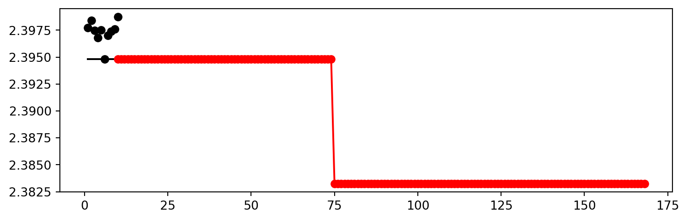
from spotPython.utils.eda import gen_design_table
print(gen_design_table(fun_control=fun_control, spot=spot_tuner))| name | type | default | lower | upper | tuned | transform | importance | stars |
|--------------|--------|-----------|---------|---------|---------|-----------------------|--------------|---------|
| _L0 | int | 64 | 6112.0 | 6112.0 | 6112.0 | None | 0.00 | |
| l1 | int | 8 | 6.0 | 13.0 | 13.0 | transform_power_2_int | 100.00 | *** |
| dropout_prob | float | 0.01 | 0.0 | 0.9 | 0.0 | None | 3.08 | * |
| lr_mult | float | 1.0 | 0.001 | 0.001 | 0.001 | None | 0.00 | |
| batch_size | int | 4 | 1.0 | 4.0 | 1.0 | transform_power_2_int | 67.83 | ** |
| epochs | int | 4 | 2.0 | 2.0 | 2.0 | transform_power_2_int | 0.00 | |
| k_folds | int | 1 | 1.0 | 1.0 | 1.0 | None | 0.00 | |
| patience | int | 2 | 2.0 | 6.0 | 3.0 | transform_power_2_int | 0.60 | . |
| optimizer | factor | SGD | 0.0 | 3.0 | 3.0 | None | 28.36 | * |
| sgd_momentum | float | 0.0 | 0.9 | 0.9 | 0.9 | None | 0.00 | |spot_tuner.plot_importance(threshold=0.025,
filename="./figures/" + experiment_name+"_importance.png")
from spotPython.hyperparameters.values import get_one_core_model_from_X
X = spot_tuner.to_all_dim(spot_tuner.min_X.reshape(1,-1))
model_spot = get_one_core_model_from_X(X, fun_control)
model_spotNet_vbdp(
(fc1): Linear(in_features=6112, out_features=8192, bias=True)
(fc2): Linear(in_features=8192, out_features=4096, bias=True)
(fc3): Linear(in_features=4096, out_features=2048, bias=True)
(fc4): Linear(in_features=2048, out_features=1024, bias=True)
(fc5): Linear(in_features=1024, out_features=11, bias=True)
(relu): ReLU()
(softmax): Softmax(dim=1)
(dropout1): Dropout(p=0.0, inplace=False)
(dropout2): Dropout(p=0.0, inplace=False)
)from spotPython.torch.traintest import (
train_tuned,
test_tuned,
)
train_tuned(net=model_spot, train_dataset=train,
loss_function=fun_control["loss_function"],
metric=fun_control["metric_torch"],
shuffle=True,
device = fun_control["device"],
path=None,
task=fun_control["task"],)Epoch: 1Loss on hold-out set: 2.396509341473849
Accuracy on hold-out set: 0.18396226415094338
MAPK value on hold-out data: 0.31525155901908875
Epoch: 2Loss on hold-out set: 2.394133005502089
Accuracy on hold-out set: 0.24528301886792453
MAPK value on hold-out data: 0.3569183051586151
Epoch: 3Loss on hold-out set: 2.3895648268033876
Accuracy on hold-out set: 0.27358490566037735
MAPK value on hold-out data: 0.38679251074790955
Epoch: 4Loss on hold-out set: 2.3798190827639596
Accuracy on hold-out set: 0.2783018867924528
MAPK value on hold-out data: 0.38679245114326477
Returned to Spot: Validation loss: 2.3798190827639596
----------------------------------------------If path is set to a filename, e.g., path = "model_spot_trained.pt", the weights of the trained model will be loaded from this file.
test_tuned(net=model_spot, test_dataset=test,
shuffle=False,
loss_function=fun_control["loss_function"],
metric=fun_control["metric_torch"],
device = fun_control["device"],
task=fun_control["task"],)Loss on hold-out set: 2.3766532265738154
Accuracy on hold-out set: 0.2711864406779661
MAPK value on hold-out data: 0.4016853868961334
Final evaluation: Validation loss: 2.3766532265738154
Final evaluation: Validation metric: 0.4016853868961334
----------------------------------------------(2.3766532265738154, nan, tensor(0.4017))from spotPython.torch.traintest import evaluate_cv
# modify k-kolds:
setattr(model_spot, "k_folds", 10)
df_eval, df_preds, df_metrics = evaluate_cv(net=model_spot,
dataset=fun_control["data"],
loss_function=fun_control["loss_function"],
metric=fun_control["metric_torch"],
task=fun_control["task"],
writer=fun_control["writer"],
writerId="model_spot_cv",
device = fun_control["device"])Fold: 1
Epoch: 1Loss on hold-out set: 2.395021809471978
Accuracy on hold-out set: 0.15492957746478872
MAPK value on hold-out data: 0.25462961196899414
Epoch: 2Loss on hold-out set: 2.381687627898322
Accuracy on hold-out set: 0.23943661971830985
MAPK value on hold-out data: 0.34953704476356506
Epoch: 3Loss on hold-out set: 2.3243269589212208
Accuracy on hold-out set: 0.3380281690140845
MAPK value on hold-out data: 0.4444444477558136
Epoch: 4Loss on hold-out set: 2.274071365594864
Accuracy on hold-out set: 0.323943661971831
MAPK value on hold-out data: 0.4444445073604584
Fold: 2
Epoch: 1Loss on hold-out set: 2.39493500524097
Accuracy on hold-out set: 0.1267605633802817
MAPK value on hold-out data: 0.2569444477558136
Epoch: 2Loss on hold-out set: 2.382529709074232
Accuracy on hold-out set: 0.19718309859154928
MAPK value on hold-out data: 0.2986111044883728
Epoch: 3Loss on hold-out set: 2.3645270334349737
Accuracy on hold-out set: 0.2676056338028169
MAPK value on hold-out data: 0.3472222089767456
Epoch: 4Loss on hold-out set: 2.3246312936147056
Accuracy on hold-out set: 0.28169014084507044
MAPK value on hold-out data: 0.37731483578681946
Fold: 3
Epoch: 1Loss on hold-out set: 2.394659605291155
Accuracy on hold-out set: 0.18309859154929578
MAPK value on hold-out data: 0.2870370149612427
Epoch: 2Loss on hold-out set: 2.3866686820983887
Accuracy on hold-out set: 0.18309859154929578
MAPK value on hold-out data: 0.3240740895271301
Epoch: 3Loss on hold-out set: 2.3711466325653925
Accuracy on hold-out set: 0.30985915492957744
MAPK value on hold-out data: 0.3958333730697632
Epoch: 4Loss on hold-out set: 2.3478711512353687
Accuracy on hold-out set: 0.29577464788732394
MAPK value on hold-out data: 0.40509259700775146
Fold: 4
Epoch: 1Loss on hold-out set: 2.3959471384684243
Accuracy on hold-out set: 0.15492957746478872
MAPK value on hold-out data: 0.26851850748062134
Epoch: 2Loss on hold-out set: 2.391371726989746
Accuracy on hold-out set: 0.14084507042253522
MAPK value on hold-out data: 0.24074070155620575
Epoch: 3Loss on hold-out set: 2.3826333151923285
Accuracy on hold-out set: 0.14084507042253522
MAPK value on hold-out data: 0.25462964177131653
Epoch: 4Loss on hold-out set: 2.3669423593415155
Accuracy on hold-out set: 0.19718309859154928
MAPK value on hold-out data: 0.2800925672054291
Fold: 5
Epoch: 1Loss on hold-out set: 2.396274427572886
Accuracy on hold-out set: 0.1267605633802817
MAPK value on hold-out data: 0.2361111044883728
Epoch: 2Loss on hold-out set: 2.3972152736451893
Accuracy on hold-out set: 0.04225352112676056
MAPK value on hold-out data: 0.138888880610466
Epoch: 3Loss on hold-out set: 2.3907735413975186
Accuracy on hold-out set: 0.15492957746478872
MAPK value on hold-out data: 0.24537035822868347
Epoch: 4Loss on hold-out set: 2.3685201870070562
Accuracy on hold-out set: 0.23943661971830985
MAPK value on hold-out data: 0.3449074327945709
Fold: 6
Epoch: 1Loss on hold-out set: 2.3950552543004355
Accuracy on hold-out set: 0.08450704225352113
MAPK value on hold-out data: 0.26157405972480774
Epoch: 2Loss on hold-out set: 2.388064397705926
Accuracy on hold-out set: 0.15492957746478872
MAPK value on hold-out data: 0.28240740299224854
Epoch: 3Loss on hold-out set: 2.3742171923319497
Accuracy on hold-out set: 0.19718309859154928
MAPK value on hold-out data: 0.33101850748062134
Epoch: 4Loss on hold-out set: 2.344761762354109
Accuracy on hold-out set: 0.28169014084507044
MAPK value on hold-out data: 0.3819444477558136
Fold: 7
Epoch: 1Loss on hold-out set: 2.395041565100352
Accuracy on hold-out set: 0.28169014084507044
MAPK value on hold-out data: 0.33564814925193787
Epoch: 2Loss on hold-out set: 2.3868956102265253
Accuracy on hold-out set: 0.2535211267605634
MAPK value on hold-out data: 0.319444477558136
Epoch: 3Loss on hold-out set: 2.3683641155560813
Accuracy on hold-out set: 0.2535211267605634
MAPK value on hold-out data: 0.3379629850387573
Epoch: 4Loss on hold-out set: 2.3260985877778797
Accuracy on hold-out set: 0.28169014084507044
MAPK value on hold-out data: 0.36574071645736694
Fold: 8
Epoch: 1Loss on hold-out set: 2.3963169847215924
Accuracy on hold-out set: 0.07142857142857142
MAPK value on hold-out data: 0.16190475225448608
Epoch: 2Loss on hold-out set: 2.392676033292498
Accuracy on hold-out set: 0.07142857142857142
MAPK value on hold-out data: 0.1785714328289032
Epoch: 3Loss on hold-out set: 2.3804144586835587
Accuracy on hold-out set: 0.2
MAPK value on hold-out data: 0.30714285373687744
Epoch: 4Loss on hold-out set: 2.3552025045667375
Accuracy on hold-out set: 0.22857142857142856
MAPK value on hold-out data: 0.3500000238418579
Fold: 9
Epoch: 1Loss on hold-out set: 2.3943837574550084
Accuracy on hold-out set: 0.11428571428571428
MAPK value on hold-out data: 0.24047617614269257
Epoch: 2Loss on hold-out set: 2.3851551260266985
Accuracy on hold-out set: 0.17142857142857143
MAPK value on hold-out data: 0.27142858505249023
Epoch: 3Loss on hold-out set: 2.3756662028176443
Accuracy on hold-out set: 0.17142857142857143
MAPK value on hold-out data: 0.2738095223903656
Epoch: 4Loss on hold-out set: 2.337142481122698
Accuracy on hold-out set: 0.22857142857142856
MAPK value on hold-out data: 0.3452381491661072
Fold: 10
Epoch: 1Loss on hold-out set: 2.3943773746490478
Accuracy on hold-out set: 0.2
MAPK value on hold-out data: 0.3166666626930237
Epoch: 2Loss on hold-out set: 2.385901233128139
Accuracy on hold-out set: 0.2
MAPK value on hold-out data: 0.32857146859169006
Epoch: 3Loss on hold-out set: 2.371475172042847
Accuracy on hold-out set: 0.2714285714285714
MAPK value on hold-out data: 0.37857142090797424
Epoch: 4Loss on hold-out set: 2.3474371092660085
Accuracy on hold-out set: 0.22857142857142856
MAPK value on hold-out data: 0.35952380299568176metric_name = type(fun_control["metric_torch"]).__name__
print(f"loss: {df_eval}, Cross-validated {metric_name}: {df_metrics}")loss: 2.339267880188094, Cross-validated MAPK: 0.36542993783950806filename = "./figures/" + experiment_name
spot_tuner.plot_important_hyperparameter_contour(filename=filename)l1: 100.0
dropout_prob: 3.0810321638169764
batch_size: 67.82784147844177
patience: 0.5988203245729237
optimizer: 28.357706724252736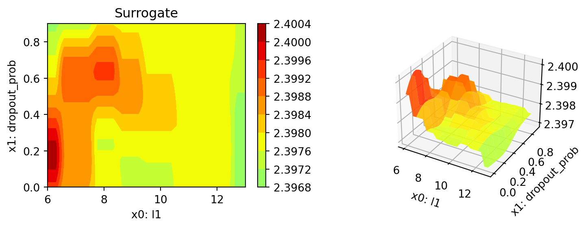
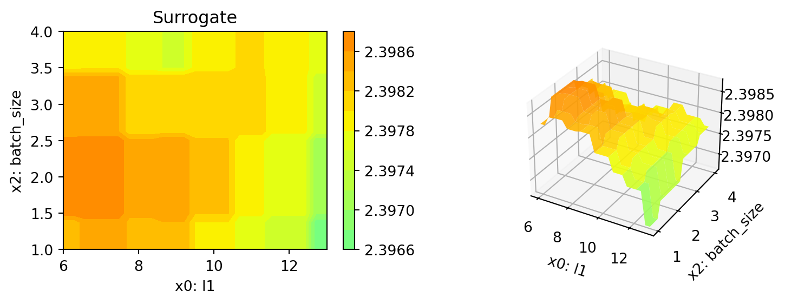
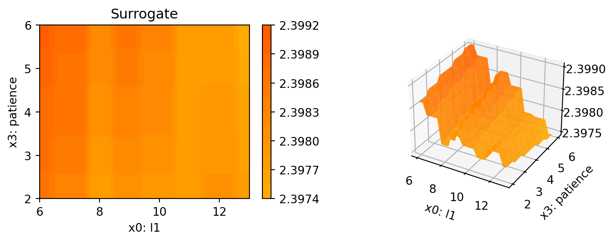
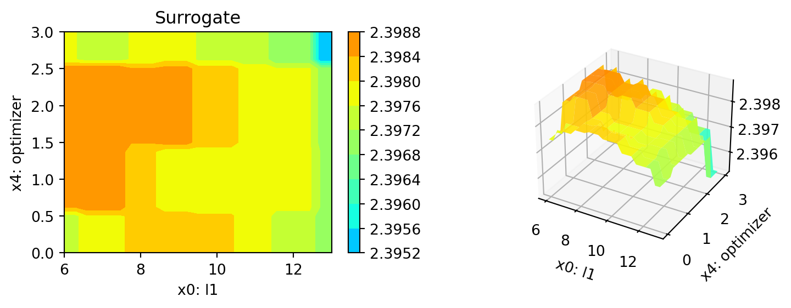
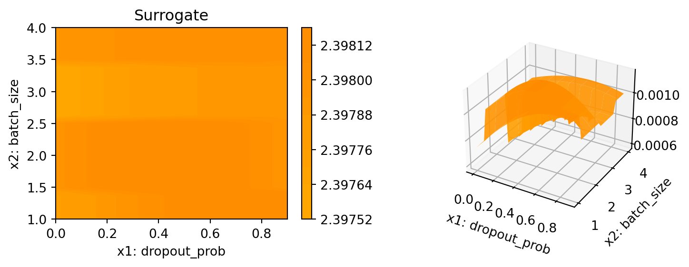
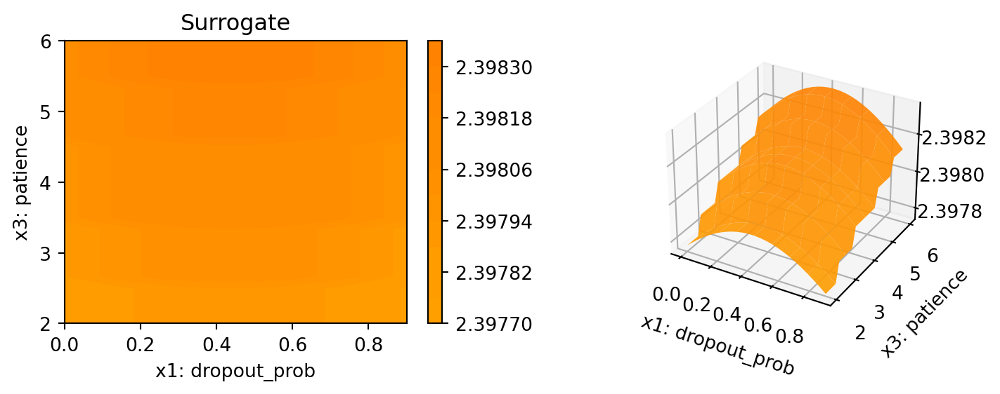
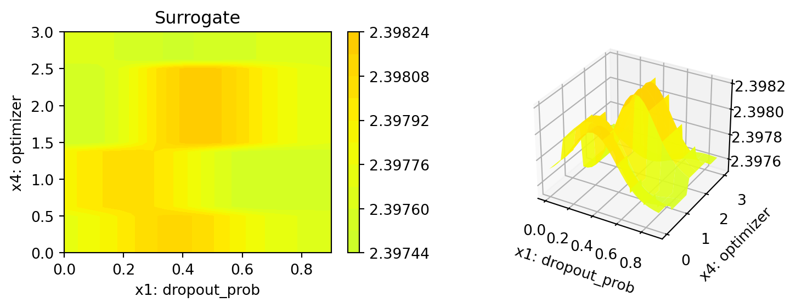
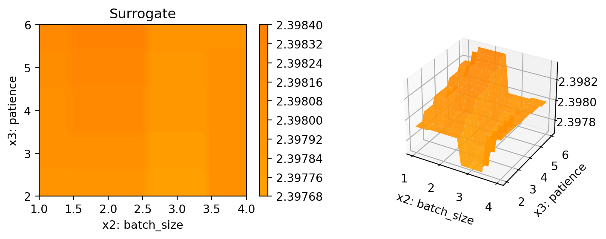
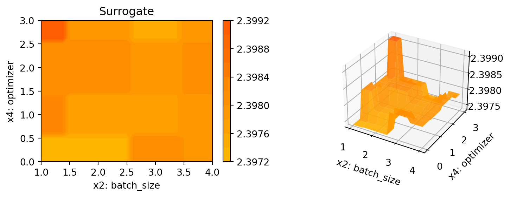
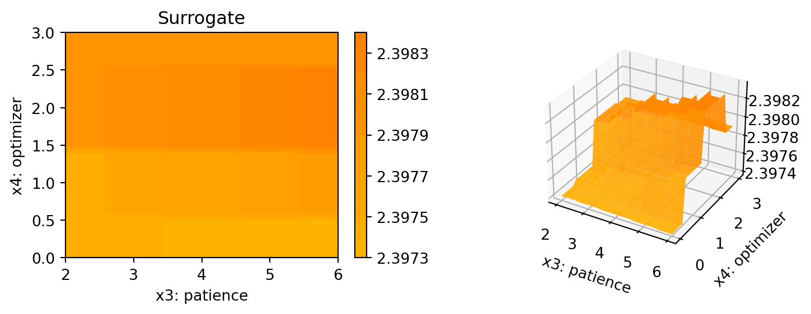
spot_tuner.parallel_plot()Parallel coordinates plots
# close tensorbaoard writer
if fun_control["writer"] is not None:
fun_control["writer"].close()PLOT_ALL = False
if PLOT_ALL:
n = spot_tuner.k
for i in range(n-1):
for j in range(i+1, n):
spot_tuner.plot_contour(i=i, j=j, min_z=min_z, max_z = max_z)